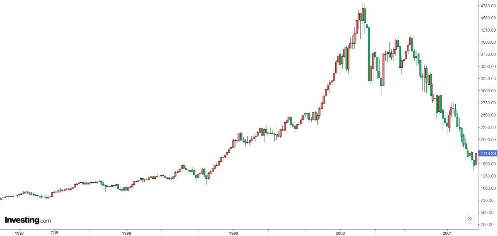
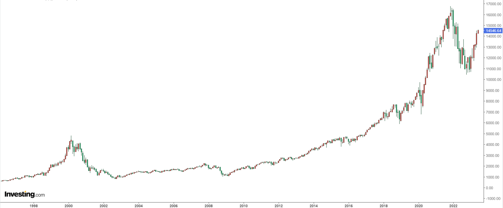

(ÔΩ°ÔΩ•‚àÄÔΩ•)ÔæâÔæû Hey there! Yeah! ü´° Welcome aboard! üéâ
1️⃣If you're not yet familiar with blockchain, bitcoin, and IC, no worries. I'm here to give you the lowdown on the history of crypto!
2️⃣If you've heard of IC but haven't gotten the full scoop yet, you've come to the right place to learn more.
3️⃣Wanna hear Dominic's story? He's right here!
‚Äî„Ķ‚Äî‚Äî‚Äî„Ķ‚Äî‚Äî‚Äî„Ķ‚Äî‚Äî‚Äî„Ķ‚Äî‚Äî‚Äî‚Äî‚Äî„Ķ‚Äî‚Äî‚Äî‚Üí ‚àû üí• Blockchain Singularity

Sometimes, I'm really awestruck to be living in such a miraculous era. Just a few years ago, we were mocking Bitcoin, and now decentralized finance, Ethereum and crypto have become deeply embedded. And in this rapidly evolving new world, a bunch of new technologies are adding color to our lives in their own unique ways: The Internet Computer, a next-gen general purpose blockchain compute platform.
Originating from Dominic's ideas in 2015: a horizontally scalable decentralized World Computer. The embryo was completed in 2018. After years of deep optimization of the underlying protocols, it launched in 2021. After years of development, it aims to become a decentralized cloud services platform, The underlying infrastructure has been developed into a decentralized cloud, while the upper-layer applications achieve decentralization through DAO-controlled permissions to accomplish the goal of decentralization. deploying various dapps 100% on-chain without the need for other centralized services.
The structure of the Constellation Book:
-
The first half is vivid and interesting, and the second half is concise
-
The first half talks about IC principles, and the second half discusses development in practice
Why do I Write this book
Early on, after learning about IC, I collected and arranged materials from the IC Whitepaper, Medium, ICPL forums, and IC Developer Forums. After talking to a friend about the IC architecture, I told her I was making notes on the IC resources and would share them when they were ready. I didn't expect that it would take a year. After experiencing the long years of procrastination, and with what I learned later, I finally put together the first version of the notes. After a period of further study, I thought it would be better to share these notes. Making it an open-source book helps everyone learn about IC and contributes to the IC developer community.
Learn blockchain with zero thresholds and level the learning field for IC.ü뮂Äçüíªüë©‚Äçüíª

Why open source?
I really like the Rust open-source community. There are many open-source books and high-quality projects in the Rust community, which have helped me a lot. I have learned a lot from the Rust open-source community. Projects like Bitcoin, Ethereum, and their related projects also have a strong open-source atmosphere, and I hope that more and more open-source projects will emerge in the IC community for everyone to learn from each other.
In addition, the IC content is updated and iterated quickly. With open-source references, everyone can contribute, keeping the content fresh and up-to-date.
Join the developer discussion group for this book, correct errors, make modifications, suggest improvements, and contribute to the open-source book together!
üåé OpenChat, Discord, Github

Journey of the Dream Weaver
In every geek's heart lies a dream of decentralization.
This is a story about Dominic Williams.
JAHEBILüòé
He liked to call himself "JAHEBIL", which stands for "Just Another Hacker Entrepreneur Based in London".
He wrote code, started businesses, and worked as a "dream maker" in London.
He was brave and optimistic, living secludedly, was not interested in socializing, and was only concerned about the brand of his company, living a repetitive and focused life. Even working 18 hours per day in an unfriendly entrepreneurial environment in the UK, he could still hum the happiest tunes.
Compared to Silicon Valley, the UK's entrepreneurial environment was like a living hell. The success of numerous companies in Silicon Valley led to even greater investments, which attracted top entrepreneurs from around the world to the area, either to reach the pinnacle of success or fail. Unlike Silicon Valley's talented pool, in the UK, every company that Dominic founded could only produce limited returns, then he would start another company, getting caught in a vicious cycle of working hard, making dreams, maintaining dreams, and making new dreams... He had to sharpen his skills to improve technically while ensuring the company remained profitable.
Tired of the cyclical life that was only draining his enthusiasm, the seed of hope ground at Dominic's heart. In 2010, as a dream maker, he decided to take chances!
Fight My Monster was a massively multiplayer online game and a children's social network. He planned to connect children from all over the world to play this game online. Players have their own monsters and use different skills to attack each other in a turn-based battle. At that time, on the other side of the earth, China was also going crazy for "Roco Kingdom" developed by Tencent.
After comparing HBase, Cassandra, and other databases, Dominic chose the early Cassandra beta, the first horizontally scalable distributed database. Dominic built various tools for Cassandra, including the first system that ran atomic transactions on scalable eventually consistent storage. They were the first team in the world to attempt to use a complex Cassandra system in a production environment.
Dominic wanted to connect millions of users worldwide through a distributed system, which was a significant innovation at the time. After several test runs, the game was officially launched on New Year's Day in 2011, and in just two weeks, it gained 30,000 users, skyrocketing to 300,000 users in just a few months.

The team achieved remarkable success in scaling up their business despite having a meager budget. However, they had overlooked one crucial factor - the development of a large-scale online game required an army of specialists, including Flash developers, database administrators, network engineers, payment system experts, operations and maintenance personnel, complexity analysts, cartoon artists, sound engineers, music composers, animation experts, advertising gurus, and more.
This massive expenditure surpassed any budget they had previously allocated to their entrepreneurial projects. In due course, Dominic and his friends exhausted their investment and were forced to seek additional funding. Day and night's overnight work resulted in an almost perfect growth chart, "so raising funds shouldn't be too difficult".
Dominic introduced the project to investors, saying, "Fight My Monster is growing rapidly and will soon exceed one million users. We believe that engineers live in an exciting era, and the Internet infrastructure is already mature. Many things can suddenly be achieved in new ways. This company was initially self-sufficient on a very limited budget. You may have heard that Fight My Monster is expanding, and now many excellent engineers have the opportunity to join us".
"Let me explain our architecture plan and why we did it this way. As you can see, it is not a traditional architecture. We chose a simple but scalable three-tier architecture, which we host in the cloud. I hope this system works..." Dominic continued passionately.
"Since you already have so many users, maybe you should try to get more of them to pay. This will not only prove your ability to make money but also get our investment." The other party frowned, clearly reluctant to invest. Faced with such a crazy user growth, London investors even suspected Dominic of fabricating data.
Now, Dominic's heart was shattered like a biscuit. He had underestimated the difficulty of financing.
Soon, the pieces turned to crumbs. At this point, competitors had already secured funding from other investment firms and prevented other investment firms from investing in Fight My Monster.
Was it because they weren't working hard enough?
Since Cassandra was also in early development, at the end of 2011, due to bugs in Cassandra beta code, Fight My Monster's user data was almost lost. It took several days and nights of work from Cassandra senior engineers and Dominic's team to save the data, ultimately resolving this horrific incident.
Dominic was in a constant flurry of activity.
He raced between his home and the company like a wound-up toy car: just after fixing a bug, he was off to meet with investors without even testing it first; he barely had time to eat, his head buried in meetings with engineers to discuss system adjustments; as soon as he left the company, he was off to the supermarket to buy Christmas gifts for his wife...
The team relied heavily on him, and his workload became overwhelmingly heavy - a rare sight even in the startup capital of Silicon Valley. Dominic worked 12 to 18 hours every day, a work pattern that is almost unheard of in today's startup world. He juggled business management, system administration, and coding, all while trying to maintain a personal life. In no time, his wife became accustomed to this lifestyle: during the day, she directed and planned games, perfecting game play and project processes, and at night, she cooked and cleaned the house, all in seamless cooperation with Dominic.
Dominic's photos.

Dominic became even more hardworking after that. Fortunately, he happened to meet a company willing to invest in him in Silicon Valley. Finally, an investor was moved by this dreamer in front of them. Within a few weeks of raising funds, Fight My Monster's user count quickly reached 1 million. A few months later, Dominic relocated the company to San Mateo (a small town near San Francisco).
He went downstairs to have coffee and when he came back, his memo was filled with common problems and solutions for ConcurrentHashMap, he listened to geeks talking about how to build a team for a startup, and he made connections with venture capitalists in Silicon Valley.
After a year of development, Dominic was very excited in 2012:
"Fight My Monster appeared on TechCrunch today, worth a big cheer, thank you!!! We are working hard and hope we can achieve our dreams."
"If you haven't played Fight My Monster yet, I suggest you give it a try - there really is nothing better online. We are incubating in the UK, and the best time to experience the site is weekdays (after school) from 4 pm to 8 pm or weekends during the day."
However, setbacks soon followed. After raising funds, the company's newly hired financial executive disagreed with the original team on strategy, and the disagreement escalated into a fatal decision-making mistake. Although the user base continued to grow, Fight My Monster was facing insurmountable obstacles.
From a financial return perspective, Fight My Monster was a failure, with the user base only expanding to over 3 million in 2013.
However, this experience was very valuable, and the most precious part was finding a group of capable colleagues who were also obsessed with the distributed system that Dominic loved. Dominic admired Fight My Monster's designer Jon Ball, who was always able to create a bunch of beautiful models using the team's design system, and later set the record for the highest ad viewing rate. There was also Aaron Morton, the Cassandra engineer who said "We work together, believe each other", who worked with Dominic to build the "engine" behind the game - a distributed database.

In hindsight, Dominic's Flash game was no longer popular as people were gradually shifting towards mobile games and tablets. In 2010, Steve Jobs announced that Apple would no longer support Flash on its devices due to its impact on device performance. Additionally, due to frequent security vulnerabilities, BBC published an article titled "How much longer can Flash survive?" Shortly after, Adobe announced that it was abandoning the Flash project and switching to Animate for professional animation.
Reflecting on his experience, Dominic said, "We could have succeeded but needed to move faster: if I had my time again, I would have relocated to The Valley very soon after the company started growing to raise money faster and gain access to a bigger pool of experienced gaming executives".
Engineers turned entrepreneurs, entrepreneurs turned engineers
Although the gaming industry was withering away, in Silicon Valley, a strange yet formidable force captured Dominic's attention, causing ripples to emerge in his mind's stagnant pool of inspiration. These ripples quickly transformed into rolling waves, propelling him towards a new frontier.
Rewinding back to 1998, Dominic was developing an online storage system for a London-based startup and utilizing Wei Dai's Crypto++ library extensively. While browsing Wei Dai's website, Dominic stumbled upon an article about "b-money", one of the early precursors to Bitcoin.
Little did Dominic know that this article from 1998 would ignite the spark for Bitcoin and connect the timeline of his cryptography career for the next decade.

After leaving Fight My Monster in 2013, Dominic became obsessed with Bitcoin, a long-dormant interest that had been sparked by the "b-money" article he had stumbled upon back in 1998.
Wei Dai wrote in b-money:
"I am fascinated by Tim May's crypto-anarchy. Unlike the typical understanding of 'anarchy', in a crypto-anarchy the government is not temporarily destroyed but permanently forbidden and unnecessary. It's a community where the threat of violence is impotent because violence is impossible, and violence is impossible because its participants cannot be linked to their true names or physical locations through cryptography".
Click here to see more about Crypto Punks.
B-money outlined a protocol for providing currency exchange and contract execution services in an anonymous community. Wei Dai first introduced a less practical protocol as a prelude because it required a synchronous, interference-free anonymous broadcast channel. He then proposed a practical protocol. In all schemes, Wei Dai assumed the existence of an untraceable network where senders and receivers could only be identified by digital pseudonyms (i.e., public keys), and each message was signed by the sender and encrypted for the receiver.
Wei Dai described in detail how to create currency, how to send it, how to prevent double-spending, how to broadcast transaction information, and how to achieve consensus among servers.
We cannot determine the relationship between Wei Dai's b-money and Bitcoin or whether he was inspired by "The Sovereign Individual" to design a scheme. However, Wei Dai's website shows that it was last updated on January 10, 2021.
Dominic said, "I love algorithms and distributed computing, and I won many awards in this field during university. More importantly, I had never encountered a technical field that combined the thinking of finance, law, politics, economics, and philosophy, while also having the potential to drive significant change in the world. For me, this emerging field was a dream come true. I made a bigger life decision to re-enter this field with my career".
In 2013, Dominic started trading cryptocurrencies full-time, while picking up some basics about consensus algorithms on the side ü§£üòâ. He was interested in designing faster consensus mechanisms to work in conjunction with proof-of-stake (PoS) architectures.
Here is Dominic's "Bitcoin ATM kiss" in 2014.
On February 7th, Mt. Gox, the world's largest Bitcoin exchange, announced its bankruptcy. Dominic took to Twitter to express his distress at the beloved Bitcoin's plummeting value.
Bitcoin crashed to 666 USD. (It's currently priced at 23,000 USD, down from its peak of 69,000 USD.)

He buckled down, diving deep into traditional Byzantine fault tolerance, combined with his previous experience building online games. Dominic conceived a decentralized network that could horizontally scale like Cassandra - allowing more and more servers to join while maintaining high performance. In just a few days, Dominic published a paper describing a scalable cryptocurrency called Pebble. The paper quietly circulated in the small crypto circles, the first to describe a decentralized sharded system. In this system, each shard uses an asynchronous Byzantine consensus algorithm to reach agreement.
While learning, Dominic didn't forget to trade Bitcoin. Investing in Bitcoin brought him some peace of mind, and now he could focus on designing consensus algorithms without having to work day and night or in a frenzy.

Later Dominic fused the early Ethereum ethos, like an intricate tapestry. Inspired by Ethereum, after Dominic heard of the concept of the "World Computer", it became his ultimate goal - he thought perhaps this was what the future internet would look like.
He realized smart contracts were actually a brand new, extremely advanced form of software. He saw that if the limitations of performance and scalability could be broken through, then undoubtedly almost everything would eventually be rebuilt on blockchains. Because smart contracts run on open public networks, superior to private infrastructure, they are inherently tamper-proof, unstoppable, can interconnect on one network, making each contract simultaneously part of multiple systems, providing extraordinary network effects, and can operate autonomously, inheriting blockchain properties, and so on.
Most of the details have faded over time into the mists of history - although not much time has passed, in the rapidly changing evolution of blockchain, this period seems to have already spanned the peaks and valleys of an entire lifetime.
Dominic's research focuses on protocols and cryptography, which are like dry kindling that reignites the dreamer's inner spark. Dominic believes that these protocols and cryptographic algorithms can change the world. He took the "D" for decentralized and the "finity" for infinity and combined them to create "DFINITY". DFINITY aims to create a decentralized application platform with infinite scalability.
After returning to Mountain View, California from China, Dominic tweeted, "China Loves Blockchain :)".

Like Ethereum, Dominic also received investment in China. The reason is simple. Silicon Valley invested in Bitcoin very early and gained huge returns, so they don't care much about "altcoins" (the secular view is that coins other than Bitcoin are "altcoins", which are basically coins that are slightly improved versions of Bitcoin).
Next, I need to introduce what the DFINITY team is doing in detail.
Point. Line. Surface. Solid!
We know that Bitcoin is the pioneer of blockchain. Bitcoin itself emerged slowly in the long-term pursuit of decentralized currency projects by cypherpunks. Click here to see more about Blockchain.
It created an open ledger system: people from all over the world can join or leave at any time, rely on consensus algorithms to keep everyone's data consistent, and create a co-creation, co-construction, and shared decentralized network. People just need to download the Bitcoin software (downloading the source code and compiling it is also possible), and then start running it on their own machines to join the Bitcoin network. Bitcoin will enable computers around the world to reach a consensus and jointly record every transaction. With everyone's record, the legendary feature of "immutability" in blockchain is achieved, which is actually a matter of majority rule and not being able to cheat everyone.
In the traditional network architecture, user data is indiscriminately stuffed into servers. Users cannot truly control their own data, and whoever controls the server has the final say. If we can view this one-to-many relationship as "points" scattered around the world, the user's data flows into each point tirelessly.

So the Bitcoin network can be seen as a "line", it connects isolated points into a line, making the internet more fair and open. What Bitcoin does is to combine computers from all over the world to form a huge "world ledger". So what if you want to record something else? Just imitate Bitcoin and create a new one!
Six years after the birth of Bitcoin, a "surface" that can deploy software on a decentralized network gradually emerged, called Ethereum. Ethereum is not a replica of Bitcoin's world ledger. Ethereum has created a shared and universal virtual "world computer", with Ethereum's virtual machine running on everyone's computer. Like the Bitcoin ledger, it is tamper-proof and cannot be modified. Everyone can write software and deploy it on the virtual machine, as long as they pay a bit of ether to the miners. (There are no miners anymore, but that's another article üòã)

Deployed software on the blockchain becomes an automated vending machine, permanently stored within a distributed and decentralized network that fairly and justly evaluates each transaction to determine if conditions are met. With the blockchain's immutable storage capabilities, the phrase "code is law" is coined. Here, software is referred to by another name: "smart contracts".
However, ahem, interrupting for a moment. The idea is beautiful, but reality can be cruel. In the early Ethereum community, there was indeed a desire to create a "world computer," establishing a decentralized infrastructure distributed worldwide. But Ethereum's architecture has certain limitations, including lower transaction execution performance, high gas fees due to rising ETH prices, poor scalability, and the inability to store large amounts of data, among other issues.
Dominic eagerly hoped his research could be put to use by the Ethereum project. His motivation was not for money, but a long-held passion for distributed computing, now sublimated into boundless aspirations for blockchain, making it hard for him to imagine anything that could eclipse the excitement and determination before him. He soon became a familiar face in Ethereum circles, often discussing at various conferences the possibilities of applying new cryptography and distributed computing protocols in next-generation blockchains.
The solution to this problem can take two approaches. The first is to improve the existing architecture, such as transitioning Ethereum's consensus from PoW to PoS (Casper), building shard chains, or creating sidechains. The other approach is to start over and design a new architecture that can handle information processing and large-scale data storage at high speeds.
Should they keep improving, scaling and retrofitting Ethereum's old architecture, or start from scratch to design a real "World Computer"?
At the time, people were interested in his ideas, but the inertia was that his concepts were too complex and distant, requiring too much time to realize and fraught with difficulties. Even though Ethereum did not adopt Dominic's ideas later, he was still grateful to early Ethereum members like Vitalik and Joe Lubin for patiently listening to his ideas in many early discussions.
Finally, Dominic made the difficult decision to start from scratch and design a real "World Computer".
When we try to solve a specific problem, we often find that the key is to create powerful "tools". With a more advanced and practical tool, and continuously maintain and improve it, it gradually becomes a more powerful tool to solve many valuable problems. A common business phenomenon is that in order to realize a product or service, a tool is developed, and then it is found that this tool has wider applicability, and then the tool itself evolves into a larger, more successful and higher-valued product.
Amazon's cloud services were originally designed to solve the problem of waste of computing resources after Black Friday. Later, it became the world's earliest and largest cloud service provider. Similarly, SpaceX solved the problem of high rocket launch costs. In order to thoroughly solve the scalability problem, Dominic decided to redesign the consensus algorithm and architecture.
The opportunity finally arrived in November 2015, in London.
Dominic presented the consensus algorithm he had been studying at devcon one.
Now we can see from Dominic's presentation at devcon one in 2015 that he described the IC as Ethereum 3.0. In fact, it wouldn't be too much to call it Blockchain 3.0. If Bitcoin and Ethereum are called "Blockchain 1.0" and "Blockchain 2.0", he wanted to create a "solid", a true world computer, even naming the project the Internet Computer (IC for short). Based on the "face" to support large-scale applications, it can horizontally expand and achieve unlimited scalability as a "world computer".

Oops, sorry, it should be this one:
During the conversation, Dominic discovered that even the staunchest Bitcoin supporters were very interested in the concept of Ethereum. This reinforced his belief in the potential of Trusted Computing.
Dominic had an even grander vision than Ethereum. He wanted to create a public network of servers that would provide a "decentralized cloud" - a trusted computing platform. Software would be deployed and run on this decentralized cloud.
Dominic is working on reshaping a completely decentralized infrastructure, which can also be understood as the next generation of internet infrastructure or as a decentralized trusted computing platform combined with blockchainüòâ.
Simply put:
Traditional defense systems: mainly composed of firewalls, intrusion detection, virus prevention, etc. The principle of traditional network security is passive defense, often "treatment after the event". For example, when an application has a virus, it is necessary to use anti-virus software to detect and kill it. At this time, the enterprise has already incurred losses to some extent.
Trusted computing: based on cryptographic computation and protection, combined with secure technology to ensure full traceability and monitoring. The principle of trusted computing is active defense. Since the entire chain from application, operating system to hardware must be verified, the probability of virus and network attacks is greatly reduced.
Blockchain has something called a consensus algorithm, which is responsible for coordinating the nodes in the network (a node is a group of servers, which can be understood as a high-performance computer). The consensus algorithm can ensure that everyone's information in the network is in agreement, because this is a network that anyone can join or leave at any time, and it is not known which node might intentionally disrupt it (you can refer to my future blog post about the Byzantine Generals problem). With the consensus algorithm, even if one-third of the nodes in the network are malicious, the other nodes can still reach a consensus normally (the resistance of different consensus algorithms varies).
Decentralized platforms not only involve token transfers between parties, but also rely on consensus algorithms to establish a barrier and keep malicious actors at bay. However, efficiency and decentralization are difficult to achieve simultaneously, and it's challenging to create a fully decentralized system that can both protect nodes and allow for coordination and data synchronization among them. Dominic's goal is to merge trusted computing and blockchain to create a limitless, open, high-performance, strongly consistent, scalable, and data-intensive blockchain network composed of servers from all over the world, without the need for firewalls.
For Dominic, the future of blockchain is the future of the internet, and vice versa. The internet is no longer just about connecting servers in data centers to users, but first forming a trusted and secure blockchain network composed of servers from around the world, and then deploying apps and serving users on top of it. Dominic hopes that banking and finance, the sharing economy (such as Uber), social networks, email, and even web searches can all be transferred to such a network.
In retrospect, Ethereum made the right call not adopting Dominic's ideas back then. Because while focused on proof-of-work (PoW), Ethereum was also exploring upgrade paths to proof-of-stake (PoS). The blueprint he outlined was too ambitious to realize in a limited timeframe. To achieve his vision would have required an enormous, stellar team relentlessly researching, inventing new cryptographic techniques, and more.
In the fall of 2016, Dominic announced his return as a "decentralized adventurer". With the theoretical framework in place, the adventure of a dreamer has officially begun!
DFINITY !
IC re-designed the blockchain architecture and developed more efficient consensus, along with innovative cryptographic combinations, in order to achieve the idea of a "world computer". The goal is to solve the limitations of speed, efficiency, and scalability in traditional blockchain architectures.
Dominic is busy researching with the technical team on his left hand, writing strategic plans for the team on his right hand, and going to various blockchain forums to introduce the project with his mouth.

Over the years, Dominic has shared many critical cryptographic technologies with other blockchain teams, such as the application of VRF, which has been adopted by many well-known projects (such as Chainlink, etc.).
In February 2017, Dominic participated in a roundtable forum with Vitalik Buterin and many other experts. From left to right: Vitalik Buterin (left one), Dominic (left two), Timo Hanke (right one).
Ben Lynn (second from left in the red T-shirt) is demonstrating a mind-blowing technology called Threshold Relay, which can significantly improve the performance of blockchain and quickly generate blocks.
By the way, engineer Timo Hanke (third from left in the middle) was a mathematics and cryptography professor at RWTH Aachen University in Germany before he created AsicBoost in 2013, which increased the efficiency of Bitcoin mining by 20-30% and is now a standard for large-scale mining operations.
Ben Lynn is one of the creators of the BLS signature algorithm, and the "L" in BLS stands for the "L" in his name. After graduating from Stanford with a Ph.D., he worked at Google for 10 years before joining DFINITY in May 2017. If you haven't heard of the BLS algorithm, you must have read Ben Lynn's "Git Magic," which was all the rage on the internet a few years ago.
2021 was not an ordinary year.
May 10th. The IC mainnet was launched.
The chart above shows a comparison of performance, storage data costs, and energy consumption against other blockchains.
When the IC mainnet went live, there were already over 4,000 active developers. The chart below shows the growth of developers compared to other blockchains.

IC has many innovations, such as unlimited horizontal scalability. Through Chain Key, IC network has the ability to infinitely expand. The network is managed by a DAO - the Network Nervous System (NNS). So this requires an unusual consensus algorithm. IC's consensus only orders messages so that replicas execute messages in the same order. Relying on the BLS threshold signature algorithm and non-interactive distributed key generation (DKG) to randomly select who produces blocks, the consensus speed is very fast. This also gives IC higher TPS, millisecond level queries and second level data updates. The experience of using Dapps is much smoother than other public chains.
IC's goal is decentralized cloud services. In order to deploy Full Dapps on chain, all Dapps are installed in a virtualized container. "Canister" on IC is equivalent to smart contracts on Ethereum. Canisters can store data and deploy code. Developers can also test through the Candid UI automatically generated by the backend virtual container without writing a line of code. Clients can directly access the frontend pages and smart contracts deployed on IC through https. The virtual containers are like small servers, providing each Dapp with its own on-chain storage space. They can also support smart contracts directly calling external https servers without an oracle. This is the first time in the history of blockchain that smart contracts can communicate directly with external https servers. After further processing the messages, the smart contracts can respond. Like Ethereum and Bitcoin, IC also accepts the paradigm of "code is law". This also means that there is no governance to regulate the use of the platform or the underlying network itself. IC's "smart contracts" Canisters are not immutable. They can store data and update code.

Historically, for the first time, Bitcoin and Ethereum are directly integrated at the bottom layer through cryptography (not cross-chain bridges): IC is directly integrated with Bitcoin at the protocol level. The Canisters on IC can directly receive, hold and send Bitcoin on the Bitcoin network. In other words, Canisters can hold Bitcoin like a user's wallet. Canisters can securely hold and use ECDSA keys through the Threshold ECDSA Chain Key signing protocol. It is equivalent to giving Bitcoin smart contract functionality!
The whiteboard of the Zurich office's computing Bitcoin integration.

Since the data is on the chain, the Gas fee has to be very low so people will use it: 1 G for 1 year is $5! Low Gas alone is not enough. In order for users to use Dapps without barriers, IC uses a reverse Gas fee model where the Gas is paid by the development team. The DFINITY team also pegged Gas to SDR, turning it into stable Gas that does not fluctuate with the coin price. IC has a unified decentralized anonymous identity: Internet Identity (ii) as the login for Dapps and joins the network neural system to participate in governance...
The IC architecture and consensus are also unique. In theory, IC has unlimited computation and storage - just keep adding server nodes. The improved consensus is a bit like practical Byzantine fault tolerance, yet more complex, because it's quite different from existing consensuses. Dominic gave it the name "PoUW" consensus, for Proof of Useful Work. BLS threshold signatures with VRF produce truly unpredictable random numbers, and everyone can verify the randomness is not forged. Sybil attack-resistant edge nodes, hierarchical architecture, randomly assigned block production - no need to elaborate, just one word: exquisite.
According to statistics from GitHub and Electric Capital (2023), IC has the most active developer community and is still growing rapidly.

The photo on the office wall when IC was about to reach 30 million blocks after three weeks of mainnet launch.
In July 2021, many new DFINITY members interviewed and joined the team via video conferencing during the COVID-19 pandemic without meeting in person. On this day, a small group of people came to the office located in Zurich to meet face-to-face.
Dominic has written two visions for DFINITY in his blog:
On the one hand, many traditional monopolistic technology intermediaries, such as Uber, eBay, social networks, instant messaging, and even search engines, may be redesigned as "open-source enterprises," using proprietary software and their own decentralized governance systems to update themselves.
On the other hand, we hope to see large-scale redesign of enterprise IT systems to take advantage of the special properties offered by blockchain computers and dramatically reduce costs. The last point is not obvious, as computing on blockchain computers is much more expensive than traditional cloud computing such as Amazon Web Services. However, significant cost savings are possible because the vast majority of costs involved in running enterprise IT systems come from supporting human capital, not computing itself, and IC will make it possible to create systems with much less human capital involvement.
Image from Shanghai, October 2021.
On July 14, 2022, at a street café in Zurich, Dominic and his team were waiting for the 1,000,000,000th block of IC to be mined, while checking the real-time statistics of IC data on the dashboard.
DFINITY's new office building is located in Switzerland.

When leaving the office, Dominic took some photos of murals on the cafeteria wall that were created by talented IC NFT artists.
Dominic moved into his new house, and shared the good news on Twitter while enjoying a piece of cake.
After work, one must not neglect their musical pursuits.

After talking for so long, what problems does IC actually solve? In general, it solves the problems that traditional blockchains have low TPS, poor scalability, and Dapps still rely on some centralized services.
Bitcoin is a decentralized ledger.
Ethereum created a decentralized computer.
Cosmos and Polkadot implemented the composability and scalability of blockchains.
The Internet Computer is building a highly scalable, ultra-high TPS decentralized cloud service.
The key to scalability is near-zero marginal cost. Polkadot's scalability is built on software engineers' development, while IC's scalability is automatically completed at the lower level. This greatly reduces the development cost of application teams on IC.
To build a highly scalable and high-performance public chain:
-
First, scalability and performance must be valued in the planning stage, and the design and layout in all aspects are aimed at achieving scalability and TPS as soon as possible.
-
Second, confidence and strength are needed to stick to their own path until the day the ecosystem explodes. In the short term, we need to endure the suppression of other competitors, withstand the pressure of cash flow for a long time, and ignore the incomprehension of the world.
Focus on the research and development of underlying infrastructure until various creative applications appear and increase the number of participants in the ecosystem. The increase in quantity leads to the further emergence of new ideas and applications. This forms a positive feedback loop, making the ecosystem spontaneously more prosperous and more complex:
Scalability / Zero marginal cost / Open system → Increase in number of applications → Exponential increase in various connections → Valuable ideas emerge → Form applications → System complexity → Quantity continues to increase exponentially → Positive feedback loop → Ecosystem prosperity.
All technological development options have advantages and disadvantages. Judging who will eventually win based on the partial and one-sided technological advantages and disadvantages is naive and dangerous. The ultimate winner on the blockchain will be the one with the richest ecosystem, the largest number of developers, software applications, and end users.
The key words for the future of blockchain are: zero latency, zero marginal cost, open ecosystem, huge network effects, extremely low unit cost, and an extremely complex and rich ecosystem.
The huge changes in industries brought about by technological revolutions are sudden for most ordinary people. But behind this suddenness are years, even decades, of gradual evolution.
Once a few critical parameters affecting the industrial pattern cross the critical point, the ecosystem enters a period of great prosperity, and changes are extremely rapid. The profound impact on most people is completely unexpected. After the change ends, the industry enters a new long-term balance. For some time, almost no competitors can catch up with the leaders in the industry.

After 2 years of development, the IC ecosystem has emerged with many excellent applications. The front end and back end are all on-chain, and Dapps that do not rely on centralized services at all.
In the social Dapp (SocialFi) field, there are DSCVR, Distrikt, Mora, Openchat, etc. DSCVR is an end-to-end decentralized Web3 social media platform. Distrikt is a Web3 microblogging platform that allows everyone to share content or participate in discussions in a decentralized network. Mora can deploy a smart contract for each user to store the user's blog data. Mora allows users to publish blogs on the blockchain and permanently store their own data. Here is more about Mora. Openchat provides decentralized instant messaging services and is a decentralized chat Dapp.
In the decentralized finance (DeFi) field, the IC ecosystem also has some very good Dapps: ICLightHouse, InfinitySwap and ICPSwap. 2022 was a year of collapse of trust in centralized institutions. 3AC, Celsius, Voyager Digital, BlockFi, Babel Finance, FTX and other leading hedge funds, lending platforms and exchanges were defeated and went bankrupt this year. Not only that, DCG grayscale, Binance and Huobi and other giants also suffered varying degrees of FUD. Centralized institutions cannot achieve complete transparency. Their trust depends on the reputation of the founders and the external image of the company's brand. Decentralization is based on "code is law" and "Don't trust, verify!". Without breaking, there is no standing. Under this revolutionary idea, the myth of centralization has been completely shattered, paving the way for a decentralized future. Decentralized financial services allow users to borrow, trade and manage assets without intermediaries, enhancing the transparency and accessibility of the financial system.
AstroX ME wallet is a highly anticipated wallet app. The ME wallet can securely and reliably store and manage digital assets, allowing users to easily manage their IC tokens and various digital assets.
There is also the decentralized NFT market Yumi. Users can create, buy and trade digital artworks, providing artists and collectors with new opportunities and markets.
The IC ecosystem has already emerged with many impressive Dapps, covering social, finance, NFT markets and wallets, providing rich and diverse experiences and services. As the IC ecosystem continues to grow and innovate, we look forward to more excellent applications. There are more interesting projects waiting for you to discover on the official website.

Switzerland is now a prominent "Crypto Valley", where many well-known blockchain projects have been born. DFINITY is the first completely non-profit foundation here.
Dominic has assembled a very strong team of blockchain developers, including cryptography, computer science, and mathematics professors, PhDs and postdocs, cryptocurrency experts, senior engineers, and professional managers.
The Internet Computer is the crystallization of 5 years of R&D by top cryptographers, distributed systems experts, and programming language experts. Dfinity currently has close to 100,000 academic citations and over 200 patents.
I believe that blockchain will still be one of the most interesting, influential, and fastest-growing technology fields in the next 10 years. üöÄüöÄüöÄ
Currently, there is no other chain better suited for deploying applications than IC.
This is the story I wanted to tell about Dominic, but his own story is far from over, and has just begun...
As Dominic himself said: "Our mission is to push towards a blockchain singularity, where the majority of the world's systems and services are created using smart contracts, and run entirely on chain, a transformation that will also take years."
@1.5x.jpg)
Who could have imagined that a blog post from distant 1998 would ignite the "crypto movement" that has been sweeping the world for the past twenty years, fueled by Dominic's passion for unlimited distribution...
That was a new world.
Epilogue
After completing the conclusion, I perceived a faint disturbance. The rustling, rustling sound approached gradually, rendering the entire room utterly silent. The source of the sound remained indistinct and unfathomable - it could have been the hum of the computer's fan, the gentle sway of tree branches outside the window, or simply a figment of my own imagination.
The sound became clearer and clearer. It sounded like it was coming from inside the computer?
I hurriedly pressed my ear against the computer's motherboard, but the sound did not emanate from there. I turned my gaze towards the window - could it be coming from outside? Yet everything outside appeared perfectly normal.
Then the sound came again, louder this time. It was a buzzing sound! That's it!
Suddenly, time came to a standstill. Everything around me froze in place. Neurons expanded and burst, releasing pheromones that catalyzed other neurons. My head began to shake uncontrollably, then suddenly expanded. My eyes bulged like a mouse's, and my ears twisted into pretzels... The sound seemed to be accompanied by the sound of breaking glass, footsteps on the ground, and the sound of birds and dogs barking...
A burst of white light coursed through my mind, quickly swelling into a vast, shimmering expanse of brilliance. All around me, an endless canvas of blue unfurled, adorned with intricate squares and lines of every hue. Then, a radiant spark flickered to life, blossoming into a majestic orb that engulfed all else in its path. As the light dissipated, the blue canvas gave way to an immaculate vista of pristine white.
Now, I don't remember anything.
Maybe it was just a dream.
Or maybe it was something that could change the world.

That's it for now, it's time to sleep. Goodnight.
By the way, the structure of the article is as follows:

If there are any parts you don't understand, feel free to take a break from the main storyline and explore them.
Next, let's delve into the technical architecture of IC.
The Future Has Come
I read through a lot of thoughts about blockchain, and summarise them into this article. Which I hope to give a relatively objective view about blockchain and internet technologies in the future.
Turkeys on the Farm
Blockchain is all the rage these days. It seems like everyone is buying cryptocurrencies.
The quadrennial bull market, digital gold Bitcoin, red-hot IXOs, meme coins with hundredfold increases...
Hold on, let me check the calendar. It's May 2023... Looks like we're almost due for another bull market, if it comes on schedule. Last time was 2020, so maybe this time it'll be 2024.
But don't get too excited, let me tell you a story:
In a farm, there was a group of turkeys. The farmer fed them every day at 11 a.m. One turkey, the scientist of the flock, observed this phenomenon for almost a year without any exception.
So, it proudly announced its great discovery: every day at 11 a.m., food would arrive. The next day at 11 a.m., the farmer came again, and the turkeys were fed once more. Consequently, they all agreed with the scientist's law.
But on Thanksgiving Day, there was no food. Instead, the farmer came in and killed them all.
This story was originally put forth by British philosopher Bertrand Russell to satirize unscientific inductive reasoning and the abuse of induction.
Let's not talk about whether the bull market will come or not.
Instead, let's look at some similar situations from history and see what happened:
During the late '90s Internet bubble, the market experienced several ups and downs. In '96, '97, and '98, there were several fluctuations. The last and largest surge occurred from October '98 to March 2000 when the Nasdaq index rose from just over 2000 points to around 4900 points. This gradual climb instilled a resolute belief in speculators: no matter how badly the market falls, it will always bounce back.
As people went through several bull and bear cycles, this unwavering belief was further reinforced. When the real, prolonged bear market began, they continued to follow their own summarized experience, doubling down and buying at what they thought were the dips...

When the bubble burst, stock prices plummeted more than 50% in just a few days, with most stocks eventually losing 99% of their value and going straight to zero. Many people who had quickly become wealthy by leveraging their investments bet their entire net worth on bottom-picking during the bear market, only to end up losing everything.
The essence of the Internet is to reduce the cost of searching and interacting with information to almost zero, and on this basis, it has given birth to many highly scalable, highly profitable, and monopolistic business models that traditional economists cannot comprehend. However, many projects and ideas from the '90s were launched prematurely, before the necessary hardware and software infrastructure was in place, and before personal computers and broadband internet became widespread. As a result, they ended up failing miserably, like Webvan, founded in 1996 and bankrupt by 2001, with a total funding of around $800 million.
After the dot-com bubble burst in 2001, the maturation of infrastructure and the decrease in various costs led to the emergence of new applications (such as Taobao, YouTube, Netflix, Facebook, Amazon, AWS, iPhone, Uber, TikTok). Their explosive growth and massive scale far surpassed even the most pessimistic imaginations.
Similarly, a large number of overly advanced blockchain projects that cannot directly generate value for end users will eventually wither away, giving rise to various pessimistic and negative emotions.
However, once the infrastructure matures, many of the boasts and dreams of the past will ultimately be realized by entrepreneurs who appear at the right time and place.
When bitcoin was viewed by the public as an Internet payment in 2014, the actual throughput of bitcoin could not support payment when shopping in supermarkets. Ethereum initially called itself "a world computer". Many initially believed that Ethereum could replace Bitcoin because it had programmability. But this is actually a misconception, which can also easily lead to another mistaken view: That another next-generation smart contract platform is the killer of Ethereum, just because it provides more scalability.
Similarly, just as Ethereum cannot replace Bitcoin, the next "cloud service" blockchains are also unlikely to kill Ethereum, but expand adjacent possibilities and carry different applications, utilizing their unique characteristics. This does not mean that Bitcoin and Ethereum have established their position permanently. Bitcoin and Ethereum also have their own existing problems. More advanced technology does not necessarily replace existing technology, but is more likely to create a complex, specialized tech stack.
Today Ethereum's purpose is no longer for general computation on a large scale, but as a battle-tested, slow and secure computer for token-based applications like crowdfunding, lending, digital corporations and voting - a global accounting system for those worlds. Even if the Ethereum network is a bit congested, Gas is super expensive and it takes a few minutes to complete a transaction, these Dapps can still compete with banks, shareholder voting and securities firms.
Because these smart contracts allow completely free transactions between strangers without going through centralized institutions, and make the large personnel establishments of centralized institutions redundant. Automated market makers on Ethereum, like Uniswap, have only about 20 employees, currently worth about 20 billion. In comparison, Intercontinental, the parent company of the New York Stock Exchange, has nearly 9,000 employees and a market value of over $600 billion. Renowned blockchain investor Raoul Pal estimates that the global user base of blockchains is currently growing at over 110% per year, while global Internet users grew only 63% in 1997. Even following the trajectory of Internet development after 1997, the global user base of blockchains will grow from the current approximately 200 million to around 430 million by 2030.
Blockchain technology's essence is to reduce the barriers and costs of value exchange between global individuals and machines to almost zero.
However, Ethereum currently does not achieve this vision and ultimately still requires the maturity and popularity of various infrastructures.
Imagine what it would look like if blockchain technology successfully solves scalability, security and usability issues. Eventually there may be only a few public chains that can represent the future and go worldwide, carrying the decentralized dreams of people around the world.
Blockchains sit at the intersection of three major themes in modern society: technology, finance and democracy. Blockchains are a technology that uses the progress of encryption and computing to "democratize" money and many aspects of our daily lives. Its purpose is to improve the way our economy works, make it easier for us to control our own information, data and ultimately take control of our lives. In this tech age, this is what democracy should look like. We often hear people complain about tech giants (like Apple, Google and Facebook) snooping on our privacy data. The best way to solve this problem and give power back to the people.
The Coachman and the Driver
The Coachman and the Driver History repeats itself in a spiral ascent:
Now everyone can drive cars as long as they have money to buy one. üöó
In the past, everyone could ride horses as long as they had money to buy one. üêé
So the car is just a means of transportation for this era. In the future, people may rarely drive cars. Similar to how people ride horses now, only at riding clubs and some tourist spots. After self-driving technology matures, people will not need to drive at all, and those who can drive will become fewer and fewer. One has to go to racetracks to experience the joy of driving.
In the ancient times there were common horses, blood horses, war horses, and racetracks.
Now there are common cars, supercars, tanks, and racetracks.
Horses did not disappear, they were just replaced by cars.
When cars first appeared, they were looked down upon and hated for a long time due to noise, slow speed, frequent accidents, often breaking down, lack of gas stations, and lack of parking lots. Later, as more roads were built, more gas stations emerged, cars improved in quality, traffic rules were promoted, and horse carriages were completely replaced.
Tesla nowadays works the same way: it runs out of power quickly; catches fire; the autopilot drives into the sea or into trees; lacks charging poles; brake failures are exaggerated by the media to be a joke, oh no, it has become a laughing stock and meme. When the battery life extends, self-driving algorithms improve, charging poles become more common, and charging time shortens, what can oil cars do? üòÑ Moreover, electricity will become cheaper and cheaper with technological progress, through solar, wind, geothermal, and eventually controlled nuclear fusion...
The negative media coverage to attract eyeballs is also an obstacle for people to objectively recognize new things. In order to attract attention, the media selectively reports negative news about new inventions much more than positive reports, especially for new things. When the iPhone came out, the media first ridiculed the Apple fans as brainwashed, then accused people of selling kidneys to buy phones, and then attacked the poor signal.Every time a Tesla catches fire, experiences brake failure, or gets into an accident, there are always people who are inexplicably happy about it, without objectively comparing the accident rate with other cars. While people curse the various problems of shared bicycles, they fail to notice that shared bicycles are changing the commuting habits of urbanites, reducing gasoline consumption, and even affecting real estate prices.
Constant bombardment of negative news makes it almost impossible for most people to really delve into and study the full logic behind new things. Judging that a technology has no future because of its current limitations is like continuing to burn oil lamps for fear of the danger of electric shock. In fact, oil lamps also have the risk of fire! If we can remain objective and curious, we will have many different views on the world, especially in this era of rapid technological development.
Similarly, many people do not understand the underlying operating principles of IC, do not know the innovations of Chain Key cryptography, do not know that IC solves the scalability problem, do not know BLS threshold signatures, and do not know IC's consensus algorithm. It is difficult to truly understand the concept of IC because it is a completely new and complex system without analogies. Even for those with a computer background, it takes months to fully and deeply understand all the concepts by delving into various forums, collecting materials, and keeping up with new developments every day. If you are just looking for short-term benefits and blindly following the trend, investing in ICP at the price peak and then labeling this thing as "scam" or "garbage" because of huge losses and lack of understanding is very natural. All the losing retail investors become disappointed and gradually join the FUD army on social media, leading more people who do not understand IC to develop prejudices. More importantly, people often do not know the information they missed due to ignorance. Individual prejudices are common. Each person has different learning and life experiences and different thinking models, which will automatically ignore things that they are not interested in or do not understand.
For more related reading: Were attacks on ICP initiated by a master attack — multi-billion dollar price manipulation on FTX? How The New York Times promoted a corrupt attack on ICP by Arkham Intelligence ,Interview with DFINITY: ICP is a victim of SBF's capital operation; much of the future of Web3 is in Asia.
Human society's productivity moves forward in cycles:
A new technology emerges → A few people first come into contact with and try it → More people are hired to develop and maintain this technology → Organizations (companies or DAOs) grow and develop → More and more people start to try it and improve productivity → Until another new technology sprouts, trying to solve problems and facilitate life in a more advanced and cutting-edge way → Old organizations gradually decline and die (those that change faster die faster, those that do not change just wait to die, and a few organizations can successfully reform) → A large number of employees lose their jobs and join new jobs → New organizations continue to grow and develop...until one day! People really don't have to do anything at all, fully automated, abundant materials...life is left with enjoyment only~
The essence of blockchain technology is that innovation can be carried out by everyone without the review and approval of authoritative institutions. Anyone can protect their rights and interests through blockchain technology without infringement by the powerful. Everyone is equal in cryptography. As long as the private key is properly kept, personal assets can be fully controlled by themselves without relying on anyone's custody.
Visa's TPS is 2400, Bitcoin's is 7. Even at Bitcoin's slow speed, it has gained the support of enthusiasts, organizations and some governments around the world. If the previous centralized applications, such as Telegram and Dropbox, can be transferred to a decentralized blockchain, what kind of scenario would that be? Productivity will definitely be improved.
Despite the widespread application and development of blockchain technology in recent years, there are still some obvious drawbacks. One of the main issues is scalability. As blockchain technology is widely applied in areas such as digital currencies, smart contracts, and supply chain tracing, the transaction and data volume in blockchain networks are growing rapidly, presenting significant challenges to the scalability of the blockchain. The current blockchain architecture faces problems such as low throughput and high latency, making it difficult to support large-scale application scenarios. This is because the traditional blockchain technology adopts distributed consensus algorithms, which require all nodes to participate in the process of block verification and generation, thus limiting the network throughput and latency. Additionally, as blockchain data is stored on each node, data synchronization and transmission can also become bottlenecks for scalability.
Therefore, solving the scalability problem of blockchain has become one of the important directions for the development of blockchain technology. Researchers have proposed many solutions to improve the throughput and latency performance of blockchain networks, such as sharding technology, sidechain technology, and Lightning Network. These technologies are designed to decompose the blockchain network into smaller parts, allowing for separate processing of transactions and data, and can be interoperable through cross-chain communication protocols. Through these innovative technologies, blockchain scalability can be improved to better meet the needs of actual application scenarios.
Once blockchain solves the problems of scalability and throughput, achieves breakthroughs in underlying technology, it may become the new infrastructure of the Internet and reshape the future Internet landscape.
Dfinity elected to reinvent blockchain's underlying technology, developed a superior decentralized network service through innovation, and fostered more Dapps to cultivate an entirely new decentralized Internet ecosystem.
This realm is so novel, encompassing such a vast knowledge domain, that no one person reigns supreme. Success springs from observing broadly, learning ceaselessly. Only then unveils insights inaccessible and incomprehensible to most.
Continue reading Dominic's story.
To talk about this, we have to start before Bitcoin.
If you're not familiar with Bitcoin, you can take a look at this first.
Bitcoin is completely virtual. It has no actual value and cannot create any value; it's just a virtual currency. Why do people go crazy sending money to buy Bitcoin? Let's dig a bit deeper: why does Bitcoin even exist?
Bitcoin was born against the backdrop of the 2008 financial crisis. The financial crisis spread globally, with no country immune. Fiat currencies became less reliable. Imagine the underlying relationship: governments issue legal tender backed by national credit. But the world is not always stable and peaceful, with wars, natural disasters and financial crises impacting society, which in turn affects the economy.
About wars: Society relies on governments, governments control armies, armies maintain society. Nations fund their armies through taxation. Conflicts between nations can arise if the benefits outweigh the costs, leading to war. Taxpayers fund the armies to launch wars. When the cannons boom, gold weighs a thousand taels. Some nations profit, some lose money.
About finance: Most countries in the world, like Europe and North America, have economic cycles. Small cycles make up large cycles, like a sine wave function. Periodic financial crises are like a sword hanging overhead; we can only pray: "Dharma, spare me!"
About natural disasters: They are difficult to predict. Though technological advances have reduced their impact on humans, threats remain for the next few decades. Viruses, floods, volcanoes - the economy suffers in response.
Since the economy will be impacted one way or another, can we find a type of money that is not devalued? It doesn't have to withstand all crises until mankind's destruction; it just needs to survive some natural disasters and human troubles. Money, I beg you, don't let a financial crisis on one end of the Earth affect people's normal lives on the other end.
There really is such a magical thing.
This kind of money originates from an "anarchist" idea. The previous b-money already reflects this idea.
The basic position of "anarchism" is to oppose all forms of domination and authority, including government, advocate self-help relations between individuals, and focus on individual freedom and equality. For anarchists, the word "anarchy" does not represent chaos, emptiness, or a state of moral degeneration, but a harmonious society established by the voluntary combination of free individuals to build mutual assistance, autonomy and anti-dictatorship, which is an autonomous system with authority but without government. They believe the root lies in "government", in the current pyramid structure from top to bottom. The layer-upon-layer management model not only has problems of inaction, corruption and waste, more importantly, there is always an organization above managing and maintaining order, which can easily lead to turmoil due to major conflicts of interest.
- Further analysis, you see that primitive society was very peaceful. People lived together spontaneously in large families, hunted together and cooperated. There was no so-called government or nation, only small-scale wealth accumulation and division of labor, and no laws or police. Because primitive society had no private property, everyone was a piece of meat that could run and jump, naked.
- Later, with private property came violence. The reason is simple, because you can profit from it .Through violent plunder of wealth, there will be "brave men" who do it for profit.
- Then, when there are a large number of "profitable" organizations, someone will stand up to protect everyone. The emergence of violent organizations to prevent violence - the army. Everyone pays a little money (taxes) in exchange for protection. People form governments to provide protection services more efficiently. People deposit their money in banks because banks can provide protection: vaults, safe deposit boxes, security guards, police, etc. This system relies on the government to operate, banks, police, either accept government regulation or are established by the government. My money is not on me, it's in the bank, haha you can't rob it.
- In this way, two large organizations (governments) will engage in larger-scale wars due to collective interest conflicts if the benefits outweigh the costs of launching the war. Recruit more armies to protect collective property...The violent conflicts become larger and larger, where is the peace? Nuclear deterrence.
By the 21st century, people's property, including social and entertainment, gradually shifted to the Internet. So the organizations that protect people's property also migrated online: online banks, Alipay.
No problem, leave your money with us, haha. Just pay a small fee, haha. It's the protection organization that helps everyone keep it, if you lose money, solve it with the platform! Wars have also become online attacks and defenses, protection organizations and hackers fight back and forth, desperately holding on to everyone's money.
In the past, protection organizations only provided physical protection and would not station troops in your home to guard you. But it's different online, all your data is uploaded to the server in one go. My data is also my asset! The data contains privacy, property, what you bought today, who you like to chat with, what you like to watch, what you want to eat at night ... All can be analyzed from the data. This is equivalent to a "network army" stationed in your home, monitoring your every move day and night. And how the data is processed is up to them. Because the protection organization controls the server, if they think it's not good, disadvantageous to someone, they can directly delete it without your consent.
Is it possible to flatten the "pyramid" and build a system of "personal sovereignty" for each person to represent equal and independent individuals, not dependent on protection organizations?
It is possible. There is a way for you to safely hold your own private property by yourself. You don't need a bank to protect your wealth, don't need a safe to protect, and don't need protection organizations, you can keep it by yourself.
But how can you protect your property yourself? The answer is to use modern cryptography through mathematics!
Bombs can blow open safes, but they cannot blow open cryptography!
Bitcoin is just that kind of money! You generate your own private key, as long as the private key is not leaked, no one can take your bitcoins from you. Receiving and sending bitcoins are peer-to-peer transfers that bypass third-party centralized platforms (banks). Of course, if you lose the private key, you'll never be able to find your bitcoins again.
Your private key, mastering your own data, not dependent on third parties, perfect.
Of course, encrypted currency was not Satoshi Nakamoto's own idea.
David (Wei Dai) mentioned Tim May, who was one of the three people who jointly initiated the Cypherpunk research group in California Bay Area in 1992 along with Eric Hughes and John Gilmore. At the first meeting, the word "cypherpunk" was born by combining the roots of "cipher" and "cyberpunk."
They found in cryptography and algorithms a potential solution to the excessive centralization of the Internet. Cryptographers believed that to reduce the power of governments and companies, new technologies, better computers and more cryptographic mechanisms were needed. However, their plans faced an insurmountable obstacle: ultimately, all of their projects needed financial support, and governments and banks controlled that money. If they wanted to realize their plans, they needed a form of currency not controlled by the government. So the race for encrypted currency began. But the result was the exact opposite. All the initial efforts failed, including the legendary cryptographer David Chaum's ECash, as well as various encrypted currencies like Hashcash and Bit Gold.

Wei Dai is a Chinese American computer engineer and an alumnus of the University of Washington. In the late 1990s and early 2000s, he worked in the cryptography research group at Microsoft. During his time at Microsoft, he was involved in researching, designing and implementing cryptographic systems. Previously, he was a programmer at TerraSciences in Massachusetts.
In 1998, he published an informal white paper called "B-money, an anonymous distributed electronic cash system" on his personal website weidai.com. He is known for his contributions to cryptography and cryptocurrencies. He developed the Crypto++ cryptographic library, created the B-Money cryptocurrency system, and co-proposed the VMAC message authentication code algorithm. Wei Dai's pioneering work in the blockchain and digital currency field laid the foundation for later Bitcoin technology and was of milestone significance.
In November 1998, just after graduating from university, he proposed the idea of B-money in the community: "Effective cooperation requires an exchange medium (money) and a way to enforce contracts. In this paper, I describe a protocol whereby untraceable anonymous entities can cooperate more efficiently... I hope this protocol can help move encrypted anarchism forward, both theoretically and practically. " The design goal of B-money was an anonymous, distributed electronic cash system.
In the eyes of the Cyberpunks community, the problem with this approach was that the government could control the flow of money through policy management, and using these institutional services (banks or Alipay) required exposing one's identity. So Dai provided two alternative solutions (proof of work and distributed bookkeeping).
- Proof of work creates money. Anyone can calculate some mathematical problems, and the person who finds the answer can broadcast it to the entire network. After each network node verifies it, they will add or destroy work equivalent value encrypted currency in the account of this person in their own account book.
- Distributed bookkeeping tracks transactions. Neither the sender nor the receiver has a real name, only public keys. The sender signs with the private key and then broadcasts the transaction to the entire network. Each new transaction generates, everyone updates the account book in their hands, so that no one can stop the transaction and ensure the privacy and security of all users.
- Transactions are executed through contracts. In B-money, transactions are achieved through contracts. Each contract requires the participation of an arbitrator (third party). Dai designed a complex reward and punishment mechanism to prevent cheating.
We can see the connection with Bitcoin. Money is created through POW proof of work, and the account book work is distributed to a peer-to-peer network. All transactions must be executed through contracts. However, Dai believed that his first version of the solution could not be truly applied in practice, "because it requires a very large real-time tamper-resistant anonymous broadcast channel." In other words, the first solution could not solve the double spending problem, while Bitcoin solved the Byzantine Generals problem through incentives.
Dai later explained in the Cyberpunks community: "B-money is not yet a complete viable solution. I think B-money can at most provide an alternative solution for those who do not want or cannot use government-issued currencies or contract enforcement mechanisms." Many of the problems of B-money have remained unresolved, or at least have not been pointed out. Perhaps most importantly, its consensus model is not very robust. After proposing B-money, Dai did not continue to try to solve these problems. He went to work for TerraSciences and Microsoft.
But his proposal was not forgotten. The first reference in the Bitcoin white paper was B-money. Shortly before the publication of the Bitcoin white paper, Adam Back of Hashcash suggested that Satoshi Nakamoto read B-money. Dai was one of the few people Satoshi Nakamoto contacted personally. However, Dai did not reply to Satoshi Nakamoto's email, and later regretted it.
He wrote on LessWrong, "This may have been partly my fault, because when Satoshi emailed me asking for comments on his draft paper, I didn't reply. Otherwise I might have been able to successfully persuade him not to use a fixed money supply."
B-money was another exploration by the cypherpunk community to develop an independent currency in the digital world. In his memory, two cryptocurrencies were named "Dai" and "Wei" respectively, of which Wei was named by Vitalik in 2013 as the smallest unit of Ethereum.
However, with each new attempt and each new failure, the "cypherpunks" gained a better understanding of the difficulties they faced. Therefore, with many previous attempts to explore, Satoshi Nakamoto learned from the problems encountered by his predecessors and launched Bitcoin on October 31, 2008.
As Satoshi Nakamoto said in his first email on this issue, "I've been working on a new electronic cash system that's fully peer-to-peer, with no trusted third party." He believed that his core contribution was: creating a virtual currency managed and maintained by users; governments and businesses have almost no say in how the currency operates; it will be a completely decentralized system run by users.
Satoshi Nakamoto was well aware of the inglorious history of cryptocurrencies. In an article shortly after the release of Bitcoin in February 2009, Satoshi Nakamoto mentioned Chaum's work but distinguished Bitcoin from Chaum's work. Many people mistakenly regarded electronic money as a failed venture because all companies had failed since the 1990s. In my view, the failure of those digital currencies was because their systems were not decentralized. I believe Bitcoin is our first attempt to build a decentralized, trustless virtual currency system.
To ensure trust between participants, Satoshi Nakamoto designed a public chain that allows people to enter and check to ensure their money still exists. To protect privacy, Bitcoin uses an encrypted private key system that allows users to tell others their account without revealing their identity. To incentivize users to maintain the system, Bitcoin introduced the concept of mining, in which users can create new transaction blocks and earn rewards with newly minted bitcoins. To prevent hacking, blocks are cryptographically linked to previous blocks, making the transaction history essentially immutable. Bitcoin's real innovation is that its monetary system is completely decentralized, that is, there is no ultimate decision maker or authority to resolve disputes or determine the direction of currency development, but users collectively determine Bitcoin's future as a whole.
Cypherpunks remain vigilant about these threats. They are trying to weaken the government's and companies' surveillance capabilities by creating a set of privacy-enhancing programs and methods, including strong cryptography, secure email, and cryptocurrencies. Their ultimate goal is to decentralize decision making on the Internet. Cypherpunks do not concentrate power in the hands of a few but seek to distribute power to the masses so that everyone can decide together how the entire system should operate.
In the eyes of cypherpunks, the main problem of the Internet age is that governments and companies have become too powerful, posing a serious threat to individual privacy. In addition, the US government and companies abuse their power and status, charging consumers too much and imposing heavy taxes. The answer lies in decentralizing power—distributing power and decision making from a few to many. But before Bitcoin appeared, it was unclear how to achieve this, and Satoshi Nakamoto provided the solution.

Is Bitcoin absolutely safe? Of course not. If you want to rob someone's Bitcoin, put a knife to his throat and ask him to hand over the private key. Whoever has the private key owns the Bitcoin. The encryption algorithm only recognizes the private key. This is the charm of decentralization. We believe in Bitcoin not because Satoshi Nakamoto will not sell his huge amount of Bitcoin, but because we believe in individual sovereignty and cryptography.
People will say that when Satoshi Nakamoto invented Bitcoin, he could not foresee the astonishing consequences at all. Of course, to some extent, it was indeed impossible for him to foresee "Bitcoin pizza", "Silk Road", Mt.Gox or the crazy bull market in 2017.
However, Satoshi Nakamoto had an amazing vision for the development of this technology. For example, he wrote that although blockchain technology cannot solve privacy issues on the Internet, if successful, users will "win a major battle in an arms race and gain new freedom over the next few years." He also foresaw that blockchain technology would be difficult to shut down. As he wrote, "Governments are good at cutting off the heads of centrally controlled networks like Napster, but pure peer-to-peer networks like Gnutella and Tor seem to be holding their own." He also saw that the blockchain itself is a flexible technology that can be developed into endless applications by users. "Once it gets going, there are going to be applications nobody ever dreamed possible, no sooner than you can install a plug-in on a website for pennies if you wanted too, it will be that easy."
At the same time, Satoshi Nakamoto was also worried about the consequences he brought to the world. He worried about how governments would deal with his virtual currency. When blockchain users pushed WikiLeaks to use Bitcoin to avoid government sanctions, Satoshi Nakamoto strongly opposed it, saying: "You would likely do more harm than good at this point." He was also worried about the emergence of super miners. He wrote: "We should have an gentleman's agreement to postpone the GPU arms race as long as we can for the good of the network." His biggest concern may have been network security. After detailing improvements to virtual currencies, he summarized in his last public message: "There are still more ways to attack than I can calculate."
The mystery surrounding Satoshi Nakamoto will only increase people's curiosity about him and his technology. Although journalists have tried their best to uncover his mysterious veil, we may never know who he is. Satoshi Nakamoto is like a star shining in the middle of the night, always twinkling in our sight but unattainable. This is very punk and poetic. The inventor of Bitcoin refuses to become the centre of his invention. Blockchain technology is a technology that removes trusted intermediaries from our lives and empowers everyone. He refused to become the focus of people's attention. The success or failure of the blockchain must depend on its own advantages - relying on the characteristics of the technology itself and the efforts of users to make it work.
Satoshi Nakamoto's idea may be quite innovative, but the rise of Bitcoin was not inevitable. Bitcoin was born against the backdrop of the 2008 financial crisis. The financial crisis swept the globe, and no country could stand alone. Fiat currencies became unreliable. Satoshi Nakamoto and his supporters often pleaded over and over again to convince others to believe in Bitcoin. They often said one sentence: Imagine if Bitcoin became the world's currency. Imagine how much each Bitcoin would be worth then! And all you have to do is download the software and run it on your home computer to earn hundreds of them. Of course, most people believed that this was a pyramid scam under Satoshi Nakamoto's tireless efforts.
But it did not prevent some tech geeks from becoming interested in Bitcoin eventually. Satoshi Nakamoto's efforts paid off, and people began to use and accept Bitcoin in the real world. Then on May 22, 2010, programmer Laszlo Hanyecz bought 2 boxes of pizza for 10,000 bitcoins.

Then, fundamental changes began to happen in the entire Internet world: once people started using Bitcoin in the real world, an ecosystem surrounding Bitcoin emerged. Cryptocurrency exchanges like Mt.Gox, Binance, and Coinbase were born to make it easier for people to buy and sell this currency. To solve the difficult mathematical problems behind the currency, professional miners began to build mines around the world. Chip manufacturers began to produce dedicated chips.
People's growing interest in Bitcoin stimulated the development of the Bitcoin and cryptocurrency market. The value of Bitcoin began to soar wildly. In 2010, Bitcoin was less than 1 cent. By mid-2021, it rose to $60,000. This crazy surge led many outsiders to compare it with historical bubbles such as the Tulip Mania in the 17th century and the South Sea Bubble in the 18th century. Concerns about the collapse of Bitcoin prices began to spread. Secondly, the emergence of competitive cryptocurrencies.

Seeing the success of Bitcoin, some entrepreneurial-minded computer scientists have launched cryptocurrencies based on blockchain technology. For example, Litecoin, Dogecoin, and Ethereum. Ethereum built a new type of computer on top of Bitcoin that runs on decentralized virtual machines around the world. It cannot be tampered with, shut down by governments, or controlled by governments. People of different races, living in different regions and with different lifestyles from all over the world come together to form a decentralized network. Unless the United Nations shuts down the Internet on Earth, as long as the Internet is up, this decentralized organization will continue to exist.
In 2017, initial coin offerings (ICOs), where individuals or groups raise funds by selling cryptocurrencies or "tokens", became popular very quickly. However, most of them ended in failure. About half of the initial coin offerings went bankrupt within a year despite widespread media attention on virtual currencies.
However, the network speed of almost all electronic devices is too slow. Think about it, in the early days, any ordinary computer could join the Bitcoin network to mine, but now with more and more people mining Bitcoin and the increasing difficulty of hash, people have to buy more high-performance graphics cards and combine more computers to mine. This is equivalent to a decentralized server room.
Dominic thought, why not let data centre server rooms act as nodes, which can also improve performance!
As a result, IC has become "server room chain", a decentralized network composed of server rooms around the world. Ethereum is better at financial dapps, while IC is good at general dapps. This has led to a "personal sovereignty" revolution in various Internet applications: envisioning the future of blockchain.
What Is Blockchain?
What is blockchain?
Blockchain is a decentralized distributed system formed through cryptography.
Wait, what does decentralization mean?
Don't worry, let me explain it one step at a time.
Suppose a few neutron star beings want to establish an online banking system called "Neutron Star Bank." They purchase a server to handle all requests. The balance and transaction information for all users are stored on this single server. Thus, Neutron Star Bank begins its operations.

As online payments become increasingly popular, the number of users and use cases continue to grow, leading to exponential growth in transaction data.
The capabilities of a single server are continuously challenged, and it starts to struggle:
For one thing, storage capacity is insufficient to meet the massive storage demands of transaction data; for another, during shopping frenzies like Double 11 and 618, system access volume surges, CPU loads continue to climb, and overload situations occur frequently. Even more severe, server failures sometimes occur, resulting in the entire system becoming paralyzed and transaction data being lost.
The growth in business is putting a heavy strain on the system, and to prevent system paralysis, the neutron star beings decide to scale and optimize the system:
They purchase one server to act as an "administrator" and several additional servers dedicated to data storage. When the administrator server receives transaction data, it forwards it to the servers responsible for data storage. Once one server is full, the data is stored in another server.
If the administrator becomes overwhelmed, more administrator servers can be added. In this way, the system is finally expanded.
However, at this point, a group of hackers set their sights on Neutron Star Bank. After all, money is just a string of numbers, and by secretly infiltrating the bank's database to modify account balances and transaction records, they could achieve financial freedom.
Initially, the bank's system lacked proper protection measures, making it vulnerable to attacks.
After paying a heavy price, the bank realized the severity of the issue and began implementing a series of measures to protect their system: first, they purchased several servers for data backup, backing up data every 3 hours. Then, they deployed an independent sentinel monitoring system on the network, dedicated to protecting the system's security.
With these security forces in place, the system's safety was greatly enhanced, and hackers could no longer use their previous attack methods.
Since all of the servers were located within Neutron Star Bank's building, the hackers thought: if they couldn't break into the system, they might as well physically attack it üòé. They planned to borrow a large sum of money from the bank, then destroy the bank's servers. Alas, the servers would be dead, and there would be no evidence left.
Fortunately, the security at the bank's entrance was not to be trifled with; who would bring a bomb to a bank? The security intercepted the bomb, successfully preventing the hackers from physically destroying the servers.
This incident frightened the bank, as it became apparent that having the servers in the bank building was not safe. What should they do?
They needed to come up with a foolproof plan to ensure the security of the servers.
So, Neutron Star Bank decided to establish a dedicated data centre and independently protect all network devices, such as routers, switches, and interfaces.
The requirements for building the data centre were very strict: it could not be near railways, highways, airports, chemical plants, landfills, nuclear power stations, munitions factories, gas stations, or any other facilities posing safety risks. It also couldn't be located in flood-prone or earthquake-prone areas, nor could it be in areas with high crime rates. Despite these precautions, the bank still feared sudden natural disasters, so they built the data centre with flood protection and 8-level earthquake resistance.
In addition to finding a suitable location, the data centre had to meet many strict construction standards, including building materials, internal heating, ventilation, and air conditioning systems, lighting systems, fire suppression systems, lightning protection measures, and constant temperature and humidity control, among others.
If the hackers managed to cut off the power supply to the data centre, the entire system would be paralyzed, and even the most secure equipment wouldn't function without electricity.
To address this concern, two power plants were set up near the data centre to provide electricity simultaneously. Each power plant could meet the data centre's entire power demand, with a backup power supply in case both power plants experienced outages. Each power plant was equipped with an independent power distribution room.
No, it's still not reassuring enough. What if, after a city-wide power grid interruption, both power plants experience accidents and can't generate electricity?
No worries, the data centre is also equipped with a UPS room. This room houses a multitude of batteries that can support the data centre's full-load operation for over 15 minutes.
Even if hackers cut off the power supply to the data centre, it can still maintain operation for a period through the UPS uninterrupted power supply.
Can power be restored within 15 minutes? There's no rush. That's because the data centre is also equipped with generators and fuel storage tanks, capable of supporting full-load operation for more than 12 hours.
Additionally, the bank has signed agreements with at least two nearby gas stations to ensure diesel supply within 4 hours. Though relying on fuel delivery is not a long-term solution, it's more than enough to support operations for a week.
What if the fuel storage tanks catch fire, as they're full of oil?
The data centre's fire detection system consists of a temperature sensing system, a video system, and on-duty personnel keeping watch. Upon detecting a fire, the fire suppression system extracts a portion of gas and then releases heptafluoropropane. This substance is colorless and odorless, killing stealthily and invisibly — wait, no, it's actually colorless, odorless, low-toxicity, non-conductive, non-polluting, and non-corrosive.
Won't people inside be suffocated?
When the data centre's fire suppression system is activated, alarm bells ring, and the access control system automatically cuts off power, allowing personnel to evacuate the affected area. Even if they cannot leave in time, the data centre is equipped with a sufficient number of oxygen masks.
However, no matter how many safety measures are taken, a single data centre cannot guarantee the system's absolute security.
During the 9/11 attacks in 2001, Morgan Stanley's data centre in the World Trade centre was completely destroyed. However, thanks to a mature disaster recovery system, all business operations were restored the next day. Despite the total destruction of their 25-story office space in the World Trade centre and the emergency evacuation of over 3,000 employees, a secondary office was established within half an hour at the disaster recovery centre, and all business operations resumed the following day. Conversely, some companies had to file for bankruptcy due to inadequate backup disaster recovery systems.
You see, having another data centre would be beneficial in such situations.
This is what's known as a "dual-active data centre," where two data centres operate simultaneously. If one is destroyed, the other continues to function, leaving the system virtually unaffected.
What if, by chance, an asteroid strikes the very area where the data centre is located? Wouldn't everything be wiped out in one fell swoop?
No worries, there's a remote disaster recovery data centre. If both primary data centres fail, operations can be switched to the remote disaster recovery centre, which has the same configuration and is ultra-secure.
What if the remote disaster recovery data centre is also destroyed?
At that point, the system would truly be down, but the data would still be safe. That's because there's a cold backup in place, which doesn't run within the system but operates independently. The backup system performs incremental backups every 2 hours and is housed in several other cities.
Have you noticed? After all these preparations, the ultimate goal is singular: to ensure the smooth operation of the system and maximize its reliability as much as possible.
Although distributed systems are geographically distributed in different places with multiple data centres undertaking business. But all servers still need banks for protection. This is a centralized approach, and many people are calling for visibility, choice and reasonable control over existing networks and data. Users need the right to know who can access their data, how their data is used, and if users don't want to share certain data, we also have the right to refuse. Perhaps most importantly, users want their own data to be used for their own benefit. If you are interested in the history of this, you can take a look here first.
So what is the essence of blockchain?
A globally distributed network, a "decentralized" system, a "shared distributed" system, a "fault tolerant, disaster tolerant" system.
The concept of blockchain consists of two parts: "blocks" and "chains". Let's start with "blocks". Blocks are like pages in a ledger that contain some information. In the blockchain world, this information is usually transaction records, such as A transfers 10 bitcoins to B, which is a transaction. Packaging a certain number of transactions together forms a block.
Now let's look at "chains". The concept of chains is very simple, just connect these blocks in a certain order. With chains, we can trace the connection between each block. Each newly generated block is connected to the previous block to form a chain.
Looking at the birth and development of digital currencies, although we have achieved efficient circulation of money in digital form, this digitalization is still quite primitive. We have to rely on numerous third-party intermediaries to ensure the circulation of digital money, which not only introduces risks of centralization, but also increases transaction costs.
It is against this background that blockchain was born. Given the inseparability of information and value, after having a global efficient and reliable information transmission system like the Internet, we would inevitably require a value transmission system to match it. In other words, the emergence of blockchain is not accidental, but has profound underlying logic. The name "blockchain" may be incidental, but the emergence of a system to realize blockchain functions is inevitable.
Credit is the true raw material for creating currency. Blockchain makes possible a peer-to-peer electronic cash system - Bitcoin - by constructing an economic system that can quantify credit. Or in other words, blockchain creates a digital, peer-to-peer transmittable credit system for value.
The full picture of the blockchain is: a series of blocks arranged in chronological order, connected together by a specific algorithm. This structure ensures the security and integrity of the data.
Next, we need to understand an important concept - encryption. In the blockchain, each block has a unique digital string called a "hash value". The hash value is generated by an algorithm called a "hash function". This algorithm is magical, even if only a small piece of information is changed, the hash value will change dramatically. This ensures the security of the blockchain, because tampering with any block information will change the hash value and affect all subsequent blocks.
Another key concept is "decentralization". In a traditional database, data is controlled by a centralized institution. This means that if there is a problem with this institution, the security of the entire system will be affected. The blockchain is different, it is jointly maintained by tens of thousands of computers around the world. These computers are called "nodes".
The decentralized nature of the blockchain means that it does not rely on a single centralized entity to maintain the data. Traditional databases are controlled by a centralized institution. In this way, if there is a problem with this institution, the security of the entire system will be affected. The blockchain, on the other hand, is jointly maintained by tens of thousands of computers around the world. These computers are called "nodes". For a transaction to be recorded on the blockchain, it must reach a consensus from most nodes. This brings many advantages, such as higher security, better privacy protection, lower operating costs, etc. On the blockchain, for a transaction to be recorded on the blockchain, it must reach a consensus from most nodes. This consensus mechanism ensures the transparency and security of the blockchain.
So how to reach a consensus? Here we take Bitcoin as an example. Bitcoin uses a consensus mechanism called "Proof of Work" (PoW). The core idea of Proof of Work is to let nodes participate in competition and compete for the right to keep accounts by solving a complex mathematical problem. Whoever solves this problem first has the right to package transactions into a new block and add it to the blockchain. At the same time, other nodes will verify this block and accept it after confirming that it is correct. This process is known as "mining".
The mining process ensures the security and decentralization of the blockchain. However, this method also has some problems. For example, it requires a lot of computing power and energy consumption. To solve this problem, other consensus mechanisms have emerged, such as "Proof of Stake" (PoS) and "Delegated Proof of Stake" (DPoS).
Proof of Stake (PoS) is a more environmentally friendly consensus mechanism. In a PoS system, a node's right to keep accounts depends on the amount of currency it holds. Nodes with more currency have a higher probability of obtaining the right to keep accounts. This method reduces energy consumption but may lead to uneven distribution of currency.
Delegated Proof of Stake (DPoS) is a variant of PoS. In a DPoS system, token holders can delegate their token interests to other nodes, allowing them to keep accounts on their behalf. This can further reduce energy consumption while improving system efficiency and security.
Blockchain is like a public, secure, distributed ledger. It can be used to record transactions, store data, and more. Blockchain technology has already been applied in many fields, such as finance, the Internet of Things, healthcare, and more. Blockchain technology has a lot of potential for the future. Other technologies such as AI and VR improve productivity. Blockchain changes the way that work is organized.
There are two main points:
First, use technology to solve the "trust" problem.
Second, achieve "autonomy" based on technology.
For example, in a massive multiplayer online game set many years in the future like Ready Player One, character and equipment assets must be stored on the blockchain, otherwise game companies or hackers could tamper with the data at will.
In the world of blockchain, you only need a blockchain account identity to join any network without permission, without sacrificing privacy or paying costs to use a service. Unlike the Web2 era when commercial value was completely controlled by major platforms, Web3 is built on decentralized networks. Application developers are responsible for developing and deploying to the blockchain platform. Once deployed on the blockchain, they cannot monopolize and use user data. This will fundamentally change business logic and the attribution of commercial value, creating a fairer internet business environment and breaking the monopoly of industry giants.
The blockchain emphasizes equality, fairness, democracy and autonomy more, which is completely inherited from the idea of communist society. In the blockchain network, the mechanisms of shared interests and democratic autonomy will curb the emergence of all monopolistic giants. The way to accumulate wealth by exploiting the surplus value of users and content creators has been completely subverted.
The application scenarios of the blockchain are very extensive, covering all aspects of daily life, health care, energy charity, elections and finance:
- Digital currency: The most famous application of blockchain is digital currency, such as Bitcoin and Ethereum. Digital currency is a kind of virtual currency based on blockchain technology, which can be used for point-to-point transactions without going through centralized financial institutions.
- Smart contract: A smart contract is a blockchain-based, automatically executed contract. It can automatically trigger corresponding operations when certain conditions are met, thereby reducing the cost and risk of contract execution. Platforms such as Ethereum support smart contracts, enabling developers to build various decentralized applications (DApps) on the blockchain.
- Supply chain management: Blockchain can be used to track the circulation of goods in the supply chain. This can improve the transparency of the supply chain, prevent counterfeit products, and reduce costs.
- Identity authentication: The blockchain can be used as a decentralized identity authentication system to help users verify their identity on the network. This can reduce dependence on centralized institutions and improve privacy protection.
- Copyright protection: Blockchain can be used to store and verify intellectual property information to prevent piracy and counterfeiting. This is very valuable for creators and intellectual property owners.
- Cross-border payments: Digital currencies can be used to make cross-border payments, which can reduce the fees and time costs of remittances.
- Internet of Things: The blockchain can be used to record and verify the data of Internet of Things devices to ensure data security and integrity.
- Healthcare: Blockchain can be used to store and share medical data, improve data security and availability. This helps to improve medical standards and reduce medical costs.
- Energy trading: Blockchain can be used to record and verify energy transactions, such as solar energy and wind energy. This helps to achieve decentralization of the energy market and improve energy utilization efficiency.
- Election voting: Blockchain can be used to build a transparent and secure election voting system. This can prevent election fraud and increase democratic participation.
- Charity: Blockchain can be used to track the flow of charitable donations to ensure that donations are truly used for those in need. This helps to increase the transparency of charities and enhance public trust in charitable organizations.
- Financial services: Blockchain can be used to build decentralized financial service platforms such as lending, insurance, and securities. This can reduce the cost of financial services and improve the efficiency and security of the financial system.
- Automotive industry: Blockchain can be used to record the life cycle information of vehicles such as production, sales, and maintenance. This helps to improve the transparency of the automotive industry and prevent fraud in the used car market.
- Real estate: Blockchain can be used to record real estate transaction information, simplify real estate transaction processes, and reduce transaction costs. In addition, real estate transactions can be automated through smart contracts.
- Education: Blockchain can be used to store and verify educational information such as degrees and certificates. This helps to prevent degree fraud and improve the credibility of the education system.
- Social media: Blockchain can be used to build decentralized social media platforms to protect users' privacy and data security. In addition, blockchain can also be used to incentivize content creators and achieve fair income distribution.
- Game industry: Blockchain can be used in the game industry for virtual asset transactions, copyright protection, and more. Through blockchain technology, players can have truly digital assets in the game and realize cross-game asset circulation. resources: Blockchain can be used for human resource management, such as recording employees' work experience, skills, and performance. This helps simplify the recruitment process, improve recruitment efficiency and accuracy.
- Legal services: Blockchain can be used to store and verify legal documents such as contracts and wills. This helps improve the efficiency of legal services and reduce the cost of legal services.
- Food safety: Blockchain can be used to track the circulation of food in the supply chain to ensure food safety and quality. This helps prevent food safety issues and boost consumer confidence.
The above are only some of the applications of blockchain technology across different fields. As the technology develops and innovates, blockchain will unleash great potential in even more areas. At the same time, we should also pay attention to the challenges brought by blockchain technology, such as energy consumption, network congestion, privacy protection, etc. Continued discussion and improvement of blockchain technology will contribute to creating a more secure, transparent and efficient value internet digital world.
The value internet is an emerging concept that arose after the maturation of the information internet, especially after the spread of the mobile internet. The core characteristic of the value internet is enabling interconnection and intercommunication of funds, contracts, digitalized assets and other forms of value. Just as the information internet enabled interconnected information sharing, in the era of the value internet, people will be able to transfer value on the internet as conveniently, securely and inexpensively as transferring information. The relationship between the value internet and information internet is not one of replacement, but rather the value internet builds on top of the information internet by adding attributes of value, gradually forming a new internet that enables both information and value transfer.
Broadly speaking, the prototype of the value internet can be traced back to the 1990s, when the First Security Bank of the United States began providing online financial services in 1996. China also saw its first online payment in 1998. After that, many financial institutions leveraged internet technology to expand payment services, giving rise to models like third-party payments, big data finance, online financial portals, etc. The value internet-related industries represented by online finance continued to develop, and characteristics of the value internet gradually emerged. Especially since 2010, with the explosive growth of online finance, the scope and degree of interconnected value continued to increase, and the scale and capabilities of the value internet saw preliminary development.
The emergence of blockchain has opened up new room for development of the value internet, triggering a new stage of development. It can be said that before the appearance of blockchain, the value internet was still in a very primitive stage of development, basically adopting a fragmented development model centered around some intermediary institutions. Blockchain has inherent characteristics like decentralization, transparency, trust and self-organization, making its applications easier to proliferate globally without geographical boundaries, injecting new meaning into the value internet. With the gradual development of applications, blockchain will promote the formation of a large-scale, true value internet.
Blockchain applications in various fields, built on top of the information internet, have derived new mechanisms for value storage and transfer, promoting rapid development of the value internet. Blockchain application cases and models in different fields demonstrate that it can effectively facilitate value internet construction by providing infrastructure, expanding user base, and reducing societal transaction costs. It is a key technology for the future development of the value internet.
Cloud computing is a model that enables convenient, on-demand access to computing resources (including networks, servers, storage, applications and services, etc.) through a network on a pay-as-you-go basis, improving their availability. These resources come from a shared, configurable resource pool, and can be acquired and released with minimal effort and no human intervention.
At present, cloud computing encompasses distributed computing, utility computing, load balancing, parallel computing, network storage, hot backups, redundancy and virtualization and other computer technologies. It is the result of the integration and evolution of these technologies. There are still some problems in the industrial development of current cloud computing technologies: first, the cloud computing market is highly centralized, with a few internet tech giants monopolizing the entire market relying on their highly centralized server resources; second, the over-centralization of cloud computing leads to high prices of computing services, making computing power a scarce resource, greatly limiting enterprise demand for cloud adoption.
Cloud computing is a pay-as-you-go model, while blockchain is a distributed ledger database, a system of trust. From their definitions, they do not seem directly related, but blockchain as a resource has on-demand supply needs, and is also a component of cloud computing, so their technologies can be mutually integrated.
Relying on blockchain to achieve distributed cloud computing architectures, blockchain-based distributed cloud computing allows on-demand, secure and low-cost access to the most competitive computing capabilities. Decentralized applications (DApps) can automatically search, locate, provide, use and release all required computing resources through the distributed cloud computing platform, while also making it easier for data providers, consumers and others to obtain required computing resources. Using blockchain's smart contracts to describe the characteristics of computing resources can achieve on-demand scheduling. Blockchain-based distributed cloud computing is likely to become the future direction of cloud computing development.
The "decentralized cloud" aims to build a universally scalable computing substrate that does not require trust. This is a long wished-for technology that would make developing Dapps incredibly simple - people would just need to apply their imagination to innovate, unconstrained by scale or communication complexity, so that innovation could continue to compound without diminishing returns.
At this stage, blockchain is mostly software innovation. When the public starts to accept the "decentralized cloud", composability with trust will become a superpower for developers. When developers can do more with fewer resources, we will all benefit from more collaboration, creativity and choice on the internet.
Continue reading Dominic's story.
Ethereum is a decentralized platform that allows developers to build various applications on top of it. You can imagine it as a global computer that does not rely on any central server. This computer runs smart contracts - programs that automatically execute predetermined tasks.
Smart contracts are a concept proposed by Nick Szabo in the 1990s, almost as old as the internet itself. Due to the lack of a trustworthy execution environment, smart contracts were not applied in real industries until the birth of Bitcoin. People realized that the underlying technology of Bitcoin, blockchain, provides a native trustworthy execution environment for smart contracts.
Ethereum is a platform that provides various modules for users to build applications on, which is the core of Ethereum technology. The applications built on top of the platform are essentially contracts. Ethereum offers a powerful contract programming environment, enabling the implementation of complex business and non-business logics through contract development. By supporting contract programming, blockchain technology provides many more commercial and non-commercial use cases beyond just issuing cryptocurrencies.
You can think of it as a huge computer that can run all kinds of applications. But this computer is not a physical entity, it is a virtual network maintained collectively by many people. We call these people "nodes", distributed around the world, jointly maintaining the Ethereum network.
So what's the difference between Ethereum and computers we commonly use? The biggest difference is that Ethereum is decentralized. That means data is not stored on a central server, but distributed across many different nodes. This makes the data difficult to tamper with and attack because an attacker would need to compromise thousands of nodes simultaneously.
Now we know Ethereum is a decentralized and giant computer. So how do we run applications on this computer? The applications running on Ethereum are called smart contracts. A smart contract is essentially a piece of program code that executes automatically when certain conditions are met. This automatic execution feature makes smart contracts applicable in many fields like finance, gaming, and voting.
As a simple example, we can use a smart contract to implement an automatic payment system. For example, you need to pay someone but you want to pay only after they complete a task. You can deposit the money into the smart contract and set a trigger condition. When the other party completes the task, the smart contract will automatically transfer the money to them. This way you don't have to worry about them taking the money without doing the work or you forgetting to pay.
In order to run smart contracts on Ethereum, we need a digital currency as "fuel". This currency is called "Ether" (ETH for short). Every time we execute an operation on Ethereum, we need to consume a certain amount of Ether. This Ether is awarded to the nodes that maintain the Ethereum network as a reward. This process is called "mining".
Smart contracts on Ethereum can not only perform simple transfers, they can also create an entirely new digital currency, which we call a token. Tokens can represent anything, like stocks, points, properties, etc. Through smart contracts, we can easily issue our own tokens on Ethereum and then use these tokens to transact.
There are many types of tokens on Ethereum, the most common being ERC-20 tokens. ERC-20 tokens are tokens that follow a uniform standard, which specifies how the tokens are created and transacted. With this standard, different tokens can interexchange and transact with each other, just like fiat currencies from different countries can still be exchanged.
In addition to ERC-20 tokens, there is also a token standard called ERC-721. These tokens are unique in that they represent unique and non-fungible assets. These assets can be artwork, collectibles, properties, etc. With ERC-721 tokens, we can transact unique assets on Ethereum without worries of forgery or replication. This is also why many crypto arts and collectibles are traded on Ethereum.
So what are the practical applications of Ethereum? In fact, Ethereum has had an impact in many fields. For example:
Ethereum can be used for financial services. Through smart contracts, we can create decentralized financial products such as lending, insurance, and derivatives. These financial products do not require intermediaries, so they can reduce costs and improve efficiency. At the same time, the transparency of smart contracts can also reduce the risk of fraud.
Ethereum can be used for supply chain management. Through smart contracts, we can track information about the source and distribution channels of goods in real time. This allows consumers to ensure that the products they buy are genuine and reliable, and allows companies to better monitor supply chains and improve efficiency.
Ethereum can also be used for identity authentication. Through smart contracts, we can create a decentralized identity system that allows users to share authentication information across different platforms. This way, users do not have to resubmit their personal information each time, while still being able to protect their privacy.
Although Ethereum has many advantages, it also has some limitations. For example, Ethereum's current transaction speed and scalability still needs to improve. In order to solve these problems, the Ethereum team is carrying out a series of upgrades. Ethereum 2.0 aims to address the performance bottlenecks and scalability issues in Ethereum 1.0. This upgrade will have the following impacts on Ethereum's performance:
- Higher throughput: Ethereum 1.0's current transaction processing speed is limited to around 30 transactions per second. Ethereum 2.0 introduces sharding technology, which splits the network into multiple independent sub-chains, greatly improving the overall network's transaction processing capability. Ethereum 2.0's throughput is expected to reach thousands of transactions per second.
- Lower latency: In Ethereum 1.0, each block takes about 15 seconds to produce. This means that users have to wait for their transactions to be confirmed. Ethereum 2.0 will adopt a new consensus mechanism to reduce block time and thus reduce users' waiting time for transaction confirmation.
- More eco-friendly consensus mechanism: Ethereum 1.0 uses the energy-intensive Proof of Work (PoW) consensus mechanism. Ethereum 2.0 will gradually transition to the more eco-friendly and efficient Proof of Stake (PoS) consensus mechanism. Under the PoS mechanism, validating nodes (validators) have to stake a certain amount of Ether as collateral to gain block production rights, which reduces energy consumption and improves network security.
- Higher security: Ethereum 2.0 introduces a new role called "validators," which replaces the miners in Ethereum 1.0. By requiring validators to stake a certain amount of Ether to participate in consensus, it becomes more costly to attack the Ethereum 2.0 network, thus improving security.
- Higher scalability: Ethereum 2.0's sharding technology and other optimizations can improve the network's scalability.
While Ethereum has brought many innovations to the blockchain world, it still has some shortcomings, mainly including the following points:
- Scalability issues: Although Ethereum has upgraded its scalability, this does not mean that the scalability issue is permanently solved. This is not a one-time engineering effort, if the number of users continues to increase, engineers still need to further scale and improve Ethereum.
- Transaction fees are still relatively high: Because Ethereum's processing capacity is limited, users usually have to pay higher fees for their transactions to be processed faster. This has led to expensive transaction fees on Ethereum, making it difficult for some users and developers to bear. During network congestion, transaction confirmation may take a long time, which can also lead to rising transaction fees.
- Centralization issues: Although the original intent of blockchain is decentralization, traditional blockchain technology has some degree of centralization issues, which gives some nodes too much control over the entire network, bringing security and manipulation risks.
- Privacy protection issues: Traditional blockchain technology has privacy protection issues. Once transaction data is recorded on the blockchain, it will be permanently saved, which will pose a great risk of privacy leakage.
- Development and maintenance costs: Building and maintaining blockchain applications may require high development and operational costs. In addition, the constant development of blockchain technology means that developers need to continually update and optimize existing applications.
Compared to Ethereum, IC has the following features that can solve some of Ethereum's issues:
- Infinite scalability: IC uses a technology called "Chain Key" that allows the network to run more efficiently. IC also divides the network into many subnets, each subnet handling a portion of messages.This greatly improves the network's processing capability to better cope with high transaction volume.
- Lower transaction fees: Due to IC's better scalability, the network can process more transactions, meaning users no longer need to pay high fees to speed up transactions. Therefore, Dfinity's transaction fees will be relatively low.
- Consensus algorithm: IC uses a consensus algorithm called PoUW, which is a random consensus algorithm based on BLS threshold signatures. Compared to other Proof-of-stake (PoS) or Proof-of-work (PoW) systems, PoUW aims to provide higher security and performance.
- Scalability and performance: IC's design gives it a high degree of scalability and performance. Through adopting a tiered architecture, subnets and parallel processing technologies, IC's Internet Computer can support a large number of concurrent transactions and smart contract executions. IC's goal is to achieve higher throughput and lower latency compared to other public chains.
- Interoperability: IC's Internet Computer is designed to be a platform that supports various decentralized applications and services. Although interoperability is not its primary focus, IC's design allows developers to easily build and deploy various applications on the Internet Computer, thereby enabling interoperability across applications.
- Simpler development process and easier maintenance: IC aims to lower the learning cost and development difficulty for developers. It allows developers to write smart contracts using more familiar programming languages. This makes it easier for developers to get started and develop decentralized applications.
- Better security: IC also provides a network autonomy mechanism whereby the network can self-repair and upgrade, which helps improve the overall security and stability of the network.
- Security and decentralization: IC's consensus algorithm and network design aims to achieve a high degree of security and decentralization. Compared to other public chains, IC uses some innovative technologies such as threshold relays and distributed key generation to improve the network's resistance to attacks.
- Developer experience: IC provides a set of friendly development tools and resources, including the Motoko programming language and SDK. Code debugging can also be done locally without the need for a testnet. This makes it easier for developers to build and deploy applications to the Internet Computer. Compared to other public chains, IC is committed to simplifying the development process of decentralized applications.
IC aims to become an infinitely scalable, decentralized global compute infrastructure. IC's goal and vision: IC's goal is to create a new type of Internet infrastructure that can support various decentralized applications while having high scalability, security and performance. Like other public chains, IC is committed to solving the limitations of traditional blockchain technology; but its vision is to create a larger Internet ecosystem, not just a blockchain platform.
This is a rather serious problem. Although the Internet can store your data, your data will not necessarily be permanently preserved by the Internet. Because now most applications' back-ends are "independent". Each company has its own maintained servers, either self-built computer rooms or cloud services. All users transmit network information and interact with other users by accessing their servers. Once the company announces service termination, your data will be gone.
For example, TikTok is like this:
Each company's servers provide users with their own network services:

While data brings convenience to the information age, it also leads to data abuse, personal privacy leaks, infringement of corporate trade secrets and many other problems. Your data has been dumped into their servers in one swoop. They control the servers and have the final say in how to handle the data in the servers. Although engineers are only responsible for studying AI recommendation algorithms and do not peek at your data. Only AI knows what you like, stored in servers, and there are too many user data to see. But when they want to find someone, the management can still see all kinds of data.
The data contains your privacy, what you bought today, what you chatted about, what you like to watch, what you want to eat at night, taste preferences, height and weight when buying clothes, map positioning... can all be analysed through data. They can completely monitor your every move on the network.
You may say: Who asked them to see my data! Indecent! Help! Is anyone in charge?
But I still have to say a fair word. In fact, when you first installed the app, they would let you check a "User Agreement" or more euphemistically called "User Experience Improvement Program". Although almost no one will read the entire "User Agreement" in full, you have already "agreed" to give them your usage data. Otherwise, you can't use it!üò°
Although on the surface, you agreed to the "User Agreement" first, and then they used your data to improve the experience.
No one knows what they will have done with the data.
We already know about PRISM, Facebook's leak of hundreds of millions of user data in 2018, Amazon was fined 746 million euros by the EU privacy regulator in July 2020 for violating the EU General Data Protection Regulation, which was also the largest data privacy leak fine in EU history. Chinese takeaway platforms such as Meituan and Ele.me have also been exposed to user information leaks and resales, down to order contents, addresses and other private information; Li Yanhong: Chinese people can be more open to data privacy and are willing to exchange privacy for efficiency...
(Screenshot of Li Yan Hong's claim on the internet:"Users are willing to exchange privacy for efficiency!)
And they think that unfavorable content to them can be deleted directly without your consent. (Of course, illegal content must be deleted)
The current situation of the Internet can be said to be: When I open my mobile phone, my apps want to read through my private information. Otherwise, you can't use it.
The large-scale disclosure of personal privacy data has become a major global social problem in the era of big data. Internet platforms massively collect user data and centrally store users' personal information for a long time. Once the data is leaked, it will be a large-scale group incident, not only violating the user's right to privacy, infringing on the life and property safety of citizens, but also causing unpredictable economic losses to Internet companies themselves. The negative impact on corporate reputation after data leakage is also difficult to eliminate.
Just last week, on March 21, 2023, Pinduoduo was forcibly removed from Google Play and prompted existing Pinduoduo users to uninstall it as soon as possible. This was the first time Google prompted users to uninstall an app. Subsequently, the well-known antivirus software laboratory Kaspersky confirmed that Pinduoduo recklessly collected user information by exploiting vulnerabilities in the Android system, cracked system shielding mechanisms, tampered with mobile phone system records, concealed its own whereabouts, ran in the background of the system to monitor mobile phones, evaded system cleanup processes, and read mobile phone input method information.
(A famous shopping app in China: Pinduoduo. Had been exposed that they implemented malicious code in users' device for purpose of tracking and collecting users' information)

The malicious behaviours and functions of Pinduoduo including:
- Collect user's images and social relationships.
- Install apps in the background when users clicked on certain links
- Reading information from user's phone keyboard.
- Produce fake notifications by hijacking Alarm,wallpaper and calander.
- Making fake icons in the main page which users are unable to uninstall, keep running and consume battery in the background.
- Delete record of access to system information when Pinduoduo's app is running, or a virus detecting app is on.
- Act as communication app such as Wechat and mislead users to run it.
- Stealing message records from communication apps, browser history, ban users from using apps from competitors.
Damn it! It's so hard to store information, it's better to engrave it on stone!
The essence of this phenomenon lies in the fact that users do not have their own data rights. Your own data, you don't even have the data rights!
Users should have the right to know how their personal information is collected, used and shared, the right to decide how their personal information is used and shared, and the right to control how their personal information is collected, stored and used. Then if I want to delete some privacy data, hey hey, you don't even know if they will really delete the content you want to delete. They can even hide the information and secretly save it themselves.
Continue exploring the future of blockchain technology.
Unlike traditional currencies, Bitcoin is completely virtual.
Bitcoins exist hidden within the exchange of value between senders and recipients. Bitcoin users have keys that allow them to prove within the Bitcoin network that they have authority to transact bitcoins, which can then be spent, bought, sold and exchanged for other currencies once decrypted. Due to Bitcoin's fast, secure and borderless nature, in some sense Bitcoin represents the perfect form of an internet currency.
Bitcoin is a decentralized peer-to-peer network system. Therefore, there are no "central" servers or central points of control.
Bitcoin pioneered a solution to the problem of distributed computing.
Satoshi Nakamoto's invention was also a feasible solution to the "Byzantine Generals Problem", an unsolved problem in distributed computing. In simple terms, the problem involves trying to achieve consensus on an action protocol through communication within an untrustworthy network that has potential threats. Nakamoto's solution was to achieve consensus without a central authority using the concept of proof-of-work, which represented a breakthrough in distributed computing science and has far surpassed mere currency applicability.
There is a lot of information about Bitcoin online, so I won't go into a detailed explanation here.
Speaking of the origins of Bitcoin, we have to talk about a rather mysterious group: the Cypherpunks. This was a loose alliance of cryptographic geniuses, and Bitcoin's innovations drew heavily from contributions by Cypherpunk members. The term Cypherpunk comes partly from "cipher", which in cryptography refers to algorithms used for encryption and decryption, and partly from Cyberpunk, referring to the then-popular sci-fi genre. This combination has very subtle connotations, exuding a radical ideal of changing society.
The Cypherpunks' view was that modern society was experiencing an ever-growing erosion of individual privacy and rights. They exchanged views on this issue amongst each other, and believed that in the digital age, protecting privacy was crucial to maintaining an open society. This philosophy was embodied in Bitcoin – the pursuit of decentralization and the embrace of anonymity. The Cypherpunks themselves were among the earliest propagators of digital currencies. Discussions of digital currencies were common on their email lists, with some ideas put into practice. People like David Chaum, Adam Back, Nick Szabo, Hal Finney and others did extensive early explorations in the digital currency sphere.
Bitcoin was not the first attempt at digital currency. Statistics show dozens of failed digital currencies or payment systems prior to Bitcoin's birth. It was these explorations that provided a wealth of experience for Bitcoin to draw from.
David Chaum was a cryptographic expert and a leading "bishop"-level figure among the Cypherpunks of the 1980s and 1990s. He invented many cryptographic protocols, and his 1981 research laid the foundations for anonymous communications. In 1990 he founded DigiCash and experimented with a digital currency system called Ecash. Payments were anonymous in his system, but recipients were not. More precisely, Ecash was a system for individuals to pay merchants. The currency system he invented also had some characteristics of bypassing intermediaries – DigiCash acted as a trusted third party to confirm transactions and prevent double-spending, ensuring the honesty of the system.
Adam Back is a British cryptographer who invented Hashcash in 1997, which used a proof-of-work system. The prototype of this mechanism could be used to solve spam on the internet, for example as an anti-spam solution. It required computers to perform a certain amount of computational work before gaining permission to send information. This would have virtually unnoticeable impact on normal information transmission, but for computers mass-distributing spam to the entire network, the computations would become unbearable. This proof-of-work mechanism later became a core component of Bitcoin.
Haber and Stornetta proposed a protocol in 1997 that used timestamps to ensure the security of digital documents. The simple explanation is to record the chronological order of document creation with timestamps. The protocol required that timestamps could not be altered after a document's creation, making the possibility of tampering zero. This protocol became a prototype for Bitcoin's blockchain protocol.
Wei Dai is a cryptographer with diverse interests who invented B-money in 1998. B-money emphasized peer-to-peer transactions and tamper-proof transaction records, with each transactor in the network keeping track of transactions. However, in B-money each node maintained its own ledger, which would inevitably lead to inconsistencies between nodes. Wei Dai designed complex incentive and penalty mechanisms to prevent nodes from cheating, but did not fundamentally solve the problem. When Satoshi Nakamoto invented Bitcoin, he borrowed a lot from Wei Dai's design and had extensive email exchanges with him.
Hal Finney was a top developer at PGP Corporation and an important early member of the Cypherpunk movement. In 2004, Finney introduced his own electronic currency that used a reusable proof-of-work system (RPOW). Hal Finney was the recipient of the first ever Bitcoin transaction, and interacted extensively with Satoshi Nakamoto during Bitcoin's early days. Suffering from a terminal illness, Hal Finney passed away in 2014.
The Birth of Bitcoin
Bitcoin was born in September 2008, beginning with the collapse of Lehman Brothers, when the financial crisis erupted in the United States and spread around the world. In response to the crisis, governments and central banks around the world adopted unprecedented fiscal stimulus and expansionary monetary policies, providing emergency assistance to financial institutions. These measures were also met with widespread skepticism.
At 2:10 pm on October 31, 2008, several hundred members of an ordinary cryptography mailing list all received an email from someone calling himself Satoshi Nakamoto: "I've been working on a new electronic cash system that's fully peer-to-peer, with no trusted third party." He then directed recipients to a 9-page whitepaper describing a new currency system. On November 1, 2008, the person calling himself Satoshi Nakamoto published the Bitcoin whitepaper "Bitcoin: A Peer-to-Peer Electronic Cash System" online, laying out an electronic cash system based on distributed ledger technology, Proof of Work consensus, cryptography and other technologies – marking the birth of Bitcoin.
Two months later on January 3, 2009, the first (numbered 0) genesis block was born, taking Bitcoin from theory into practice. A few days later on January 9, 2009, block number 1 appeared and connected to the genesis block number 0 to form a chain, marking the birth of the blockchain.
In 2015, The Economist magazine ran a cover story titled "Blockchains, The Trust Machine", pointing out the technology behind Bitcoin could change economic operating models, calling it “a trust machine that allows people who have no particular confidence in each other to collaborate without having to go through a neutral central authority. Simply put, it is a machine for creating trust.” This resulted in increasingly more public attention on Bitcoin and blockchain.
Continue exploring the early stories of the cypherpunks movement.
Overview

What are IC and ICP?
-
IC is a high-speed blockchain network specifically designed for decentralized applications.
-
ICP is both the name of the Internet Computer Protocol and the native token.
The emergence of the Internet Computer (IC) has brought revolutionary changes to software development. It allows developers to build applications directly on a decentralized cloud, free from dependence on traditional centralized cloud services, reducing development and operating costs. The security and high performance of IC greatly improves the security of applications and services.
The vision for IC is to become a global computing platform providing unlimited scalability, security and decentralized governance.
IC is built with high performance and decentralized cloud services through technologies such as sharding, VRF random numbers, BLS threshold signatures, DKG, and embedded DAO governance models.
How high is its performance?
The current confirmed block rate of subnets is 36 blocks per second.

For every second, 6,355 transactions could be handled.

Here you can see the real-time statistics of the IC network. While the number of the subnet keeps growing, the performance of the network will also get higher. (TPS is unlimited!)
The new era of software development
The Internet Computer (IC) is a brand new blockchain design built on the Internet Computer Protocol. Its core part is divided into 4 layers, running on nodes of each subnet. By running the core protocol, the nodes of a subnet implement a blockchain-based replicated state machine that progresses independently of other subnets (but communicates asynchronously with them). IC adopts a multi-subnet shards structure, which overcomes the performance bottlenecks of traditional blockchains while maintaining decentralization. This architecture allows IC to generate subnets (shards) indefinitely, allowing IC to scale almost limitlessly.

In traditional non-sharded blockchains, typically only one block is produced over a period of time, with all miners in the network competing for the sole mining right or reaching consensus on a single block. To increase throughput and lower latency, scaling up often can only be achieved by speeding up block production or increasing block size. Both approaches have downsides (frequent forks or network latency).
IC scales horizontally by creating new subnets, similar to how traditional cloud infrastructure scales by adding new machines. Once IC's Network Nervous System (NNS) decides to create a new subnet, it will select a group of spare nodes that have not been allocated to any subnet and create the initial configuration for the new subnet. Then, the selected nodes form a new subnet blockchain.

IC eliminates the speed, storage, and computing limitations faced by smart contracts on traditional blockchains. Making smart contracts fully decentralized, from front-end to back-end can be hosted on the blockchain. IC's smart contracts are called Canisters. Canisters can store data, perform general computing on data, and provide a complete technology stack to provide network access services directly to end users.
Computing and storage overhead uses a "reverse gas model", and gas fees are paid by the developer who deployed the Canister by exchanging native tokens ICP into Cycles. ICP tokens are also used for governance: IC is managed by a decentralized autonomous organization (DAO). IC embeds the DAO system as its base: Network Nervous System. The DAO can decide to change IC's network topology and upgrade the IC protocol.
IC can also interoperate with other blockchains. IC's chain key cryptography enables it to interact with other blockchains and integrate other cryptocurrencies.
IC uses WebAssembly (Wasm) as the standard for code execution, so developers can write smart contracts in a variety of popular programming languages (such as Rust, Motoko, Java, etc.).
Traditional IT developers face many problems: they have to go through a series of hurdles such as multiple commercial cloud services, cloud tools, proprietary and open source variants of operating systems, databases and firewalls, virtualization technologies, software development platforms, etc., to address the high customization of assembling systems, the labor costs of specialist developers needed to maintain them, and related vendor relationships, making it expensive and difficult to change, migrate and adjust old systems as needs change. The result is high development and operating costs, and security issues with centralized data storage.

IC allows developers to build applications, enterprise systems and Internet service apps in an open world. Based on the decentralized blockchain concept, it ensures that it can operate safely and stand the test of time. IC can automatically scale, resist attacks, and never go down. This novel design allows developers to focus on creating new applications and services without worrying about the security, cost and scalability of the underlying infrastructure. This will have a profound impact on the new era of software development.
Architecture
IC's architecture is unique:
The nodes in each data centre are virtualized into replica through the node software IC-OS, and then some replicas are randomly selected to form a subnet .

A subnet consists of nodes from multiple data centres. Each node establishes a TCP session with IPv6 and connects to NNS nodes and other nodes in the same subnet.

NNS (Network Nervous System) is the governance system embedded in IC, a DAO. Anyone who staked ICP can vote on proposals on NNS.
The nodes of the Bitcoin network can join whenever and wherever they want, but the problem is that the confirmation of transactions is too slow; the consortium blockchain first determines several nodes in the network, and then these few fixed nodes reach consensus, the speed is fast. IC combines the advantages from both, like a consortium blockchain composed of several fixed nodes to form subnets, the consensus speed between nodes (replicas) is very fast, and controlled by a DAO: NNS, to control subnets and nodes (replicas). Win-win.
IC integrates a DAO at the bottom layer of the blockchain protocol: a DAO-controlled network. This DAO controls each subnet, configures the network topology, creates subnet public keys, and upgrades the protocol version of replicas. Therefore, all NNS decisions are made by community members, and the voting weight of community members is determined by the amount of IC native governance tokens they stake in NNS.
If the proposal is approved by voting, the Canister in NNS will automatically execute the according decision. For example, if a proposal to change the network topology is approved, the NNS will automatically update the registry Canister with the new configuration.
NNS is also a decentralized governance system that helps the IC network achieve self-evolution. The purpose of NNS is to manage the Internet Computer network in an open, decentralized and secure manner. It is a system subnet of IC that controls IC subnets. It can also upgrade node protocols; adjust the exchange ratio of Cycles to ICP; in extreme cases, it can even freeze malicious Canisters to protect the network.
Replicas can be understood as "virtual nodes" virtualized in subnets. In the following content, we will call IC "nodes" as replicas.
IC's subnets are similar to the idea of sharding. Sharding is a blockchain scalability solution. Take Bitcoin as an example. Nodes all over the world are competing for the accounting rights of a block, which is equivalent to a network covering the entire earth. If all nodes in Asia constitute a "Bitcoin subnet", Europe, Africa, America and Oceania also constitute their own subnets. Then consensus is reached within the subnet, with relatively fewer nodes and shorter communication distances, which can improve performance.
IC consists of many subnets, without the concept of parent network, main chain, side chain, beacon chain, etc. Each subnet is equal (except NNS). Each subnet runs independently, reaches consensus within the subnet, and there is no "global consensus" like Bitcoin. Different subnets synchronize and generate blocks in parallel. It can be understood that each subnet is a blockchain, and many chains together constitute IC. Cross-subnet communication is solved by Chain Key at the bottom layer of IC. Developers and users do not need to worry about which subnet the smart contract is deployed in, how to communicate across subnets, etc.
Chain Key is the core technology behind the Internet Computer that solves the problem of inter-subnet communication of IC. Chain Key allows each subnet to generate its own unique subnet public key (or Subnet Key) based on the root key. This is the underlying technology for IC's unlimited scalability.
Dude, this is so freakin' cool! Each subnet on the IC network has a public key that's just 48kb in size. Anyone can easily verify that a message they receive actually came from the IC network and wasn't tampered with. All kinds of IoT devices and other blockchains can also verify info from IC, so handy! Compared to that, verifying stuff from traditional blockchains like ETH is a pain - cuz each block is signed by different nodes, so devices gotta sync hundreds of GBs of signature data to complete verification. But on IC, all the nodes sign each block together, so devices only need to store one unique 48kb public key to verify any message from a subnet. This design is just ingenious!

Subnets can dynamically increase, delete, merge and split according to the network resource usage. The number of subnets has no upper limit, so theoretically it supports "infinite expansion" by adding subnets around the world.
But who decides the splitting and reorganization of subnets? NNS!
NNS is a special subnet, just like other subnets composed of some nodes. NNS can manage other subnets. However, NNS has more nodes than other subnets, so its security is naturally higher than other subnets. Becoming a node in a data centre, which subnet a node joins, which nodes make up a subnet, selecting a few nodes to create a new subnet, splitting a subnet into several subnets, etc., these operations require NNS permission.
The architecture of many subnets allows IC to scale infinitely.

The core part of the IC protocol is divided into 4 layers, running on the nodes of each subnet. Now we turn our perspective into the interior of the subnet to take a look at the core protocol of IC. For easy understanding, I change the top view of the subnet to a side view; the purple square blocks represent subnets, and the blue spheres represent replicas in the subnet.

The IC core protocol has a total of 4 layers, and each replica has this 4-layer structure. From bottom to top are the P2P layer, consensus layer, message routing layer, and execution layer:
- P2P layer collects and sends messages from users, other replicas in the subnet and other subnets. It ensures that messages can be delivered to all nodes in the subnet to ensure security, reliability and elasticity.
- Consensus layer reaches consensus within the subnet on the order in which various messages are processed. Then these blocks are passed to the message routing layer.
- Message routing layer forwards messages. After the consensus layer finalizes the block, the corresponding payload will be passed to the message routing layer. The message routing inputs the execution layer.
- Execution layer is where the Canister runs. The execution layer updates the state of the corresponding Canister in the replicated state machine, completes the computing task of the smart contract and passes the output to the message routing layer for processing.
P2P layer
The P2P network is like a large party, and the participants in the party are replicas in the subnet. At this party, people want to share the latest news and hope that as many people as possible can hear this news. However, it is tiring for everyone to shout out the complete message loudly (occupying network resources). We can adopt a more efficient approach.
This approach is the advertise-request-deliver mechanism. Just like at a party, someone (replica) loudly announces: "Hey, I have big news to share!" This is a small announcement. After hearing this announcement, others (other replicas) who heard and think that the message is important will come over (request) and ask that person to tell them the specific content of the message (deliver). This process may sacrifice some time (delay) but can save energy (reduce bandwidth usage).
If this party is very large, such as a huge music festival. In such a huge event, the advertise-request-deliver mechanism will run on an overlay network. This overlay network is like a large circle of friends, and everyone only shares messages with their good friends (peers).

When someone wants to broadcast a message, he will first tell his good friends about the announcement of the message. Those good friends, upon receiving the announcement, may request the delivery of the message and, under certain conditions, tell their good friends about the announcement of the message. This is like a gossip network.
The P2P layer can effectively reduce bandwidth usage and achieve high throughput at the cost of some latency by using the advertise-request-deliver mechanism and running on the overlay network.
Learn more about how the IC P2P layer works here.
Consensus
Consensus is reached within the subnet by replicas.
The task of the IC consensus layer is to sort incoming messages to ensure that all replicas process incoming messages in the same order. These messages are communications between users and Canisters, communications between Canisters, and the order of these communications.
By sorting replicas with unpredictable random numbers, select who to make blocks first. If the selected replica is honest and has no problems, it will package the block and broadcast to everyone for verification. If everyone agrees that there is no problem, they will provide their own notarization shares. After the threshold of two-thirds of the notarization shares is reached, a notarization of this block is formed. If most replicas have only made a notarization for one block, everyone will finalize and make a confirmation of the block.
The consensus protocol of IC satisfies: low latency (almost instant finality); high throughput; robustness (in the event of replica or network failures, latency and throughput will drop slightly instead of directly crashing and shutting down).
Learn more about how the IC consensus layer works here.
Message routing
In each round of IC, the consensus layer packs incoming messages into block payloads. After the consensus layer's final confirmation, the corresponding payload is passed to the message routing layer. The message routing component receives a message to be processed from consensus. Message routing routes the message to the corresponding Canister input queue. It then triggers execution. After execution is complete, the Canister places the result in the output queue. Finally, the output is passed to the message routing layer to send out.
The message routing layer can also communicate between subnets. This is called cross-subnet messages or XNet messages for short.
Another key function implemented by the message routing layer is state authentication. In each round, the subnet performs BLS threshold signature on the state changed by the subnet in this round. This authentication can be used by subnets to verify the authenticity of a data flow from one subnet to another, and also allows users to submit responses to messages submitted previously before reading. State authentication and secure XNet protocols enable Canisters to communicate securely and transparently between subnets, a challenge faced by any sharded blockchain.
Note that the consensus layer and the message routing layer are independent. Forks happened in consensus have already been resolved before incoming payloads. And the consensus layer can proceed to the next round in advance without keeping exactly the same progress as the message routing layer.
Learn more about how the IC message routing layer works here.
Execution
The basic computing unit in IC is called a Canister. IC provides a runtime environment that allows programs to run in Canisters and communicate (via messages) with other Canisters and external users.
The execution layer has many functions that other blockchains do not have:
-
Deterministic time slicing (DTS): For large messages requiring billions of Wasm instructions to execute, they can be split up and completed gradually over multiple consensus rounds. This ability to execute messages over multiple consensus rounds is unique to IC.
-
Concurrency: Execute multiple Canisters simultaneously on multiple CPU cores. Since each Canister has its own isolated state.
-
Pseudo-random number generator: The execution layer can access unpredictable and unbiased pseudo-random number generators. Now Canisters can execute algorithms that require randomness.
Learn more about how the IC execution layer works here.
Boundary node
As mentioned earlier, IC (Internet Computer) is a decentralized cloud, capable of directly providing complete network services to users without reliance on any centralized services.
So, how are users' requests dispatched to replicas (nodes) within a subnet? How does IC protect against DDoS attacks? Is there a firewall? CDN caching, perhaps? üòè You know what I mean.

These services are provided by the boundary nodes of IC.
Boundary nodes are tasked with forwarding requests to the corresponding subnets, protecting the subnets, and providing caching.
When a user accesses the IC via a browser, we utilize the URL link on the ic0.app domain to locate the canister. Initially, the browser checks for the DNS record related to the URL link and obtains the IP address of the boundary node. Subsequently, it sends an HTTPS request to the boundary node. The boundary node, in return, delivers a JS library, the "Service Worker", to run on the browser.
One of the primary tasks of this service worker is to employ chain key cryptography to validate the response from IC. To facilitate this function, the public verification key of the NNS (Network Nervous System) is hard-coded into the service worker.
The boundary node assumes the responsibility of routing our requests to the target canister's subnet replica. It retrieves the necessary routing information from the NNS and arbitrarily selects one from a list of real-time response replicas. The security of communication between the user and the boundary node, as well as between the boundary node and the replica, is assured by TLS.
Beyond interacting with the main network, boundary nodes also provide services like caching, load balancing, rate limiting, firewall, and verification of IC response messages, thereby enhancing the user experience.
More details about boundary nodes can be found here.
Message request workflow
With these 4 core protocol layers, let us take a look at the flow of a user request on IC:
User requests are divided into query calls and update calls.
Query call:
The client sends a request message to the boundary node wanting to access a Canister. The boundary node forwards this message to replicas in the subnet hosting the target Canister. After receiving the message, the replicas return a response and send it to the user through the boundary node.
Update call:
The client sends a request message M to the boundary node, targeting Canister C. The boundary node forwards the message M to the subnet replica hosting Canister C.
Upon receiving message M, the replica broadcasts message M to all replicas in the subnet through the P2P layer.
The main node that receives message M will package message M and other inputs into a block B.
After a while, the block B is finalized, and the contents are sent to the message routing layer for processing.
The message routing layer puts the message into Canister C's input message queue.
The execution layer processes message M and updates Canister C's internal state.
Subsequently, the message routing layer takes out the response R and returns it to the boundary node, which returns it to the user.
Sometimes processing a request message M requires calling canisters from other subnets. For example, Canister C needs to initiate a request M' to Canister C' in another subnet. Request M' will be placed in Canister C's output queue, and then the following steps are performed:
- The message routing layer moves the call request M' to the corresponding cross-subnet data stream, which eventually transports it to the subnet hosting Canister C'.
- Upon receiving request M', the second subnet processes it through the consensus layer and message routing layer, and finally the execution layer updates the state of Canister C' and generates a response R' to request M'. Response R' enters Canister C's output queue and is eventually passed back to the first subnet.
- Upon returning to the first subnet, after receiving the response R' from the second subnet, it is processed through the consensus layer, message routing layer, and execution layer. The execution layer updates the state of Canister C and generates a response R to the original request M. This response R is recorded in the ingress history data structure.
Chain Key
IC uses an advanced cryptographic toolkit called Chain Key cryptography. This technology enables IC to achieve functionality and scalability that other blockchains cannot.
A key component is the threshold signature scheme, similar to ordinary digital signature schemes, but with the difference that the secret signature keys are distributed among the subnet replicas, making the keys less prone to leakage or get stolen.
Chain Key brings many benefits. For example:
- Anyone (mobile phone, tablet, laptop) can easily verify signatures to validate content received from IC without synchronizing the entire blockchain.
- It allows IC's topology to evolve autonomously, such as adding new replicas and subnets, recovering failed replicas, and autonomous protocol upgrades.
- It also provides unpredictable and unbiased pseudo-random numbers to allow Canisters to securely run algorithms that require randomness.
A key innovation of IC is that subnets act as separate consensus islands. Chain Key allows subnets to communicate securely and validate each other's messages without downloading other blocks. This allows IC to achieve high scalability and security while remaining lightweight and easy to validate.
This unique Chain Key technology provides a powerful foundation for building the next generation of distributed applications.
Network Nervous System (NNS)
IC's decentralization is slightly different from Bitcoin and Ethereum. Its nodes do not join and leave as they please. Instead, to join or leave IC network, no third-party centralized agency's approval is needed. Before nodes join the IC network, they need to obtain approval through voting in the NNS. IC's underlying protocols have a built-in DAO for governance.
To explain in detail:
Early consensus protocols such as PBFT were permissioned. That is, the network topology and nodes were fixed, not open for anyone to join. Although such protocols are more efficient, they violate the spirit of decentralization. Therefore, permissionless consensus protocols such as Bitcoin and Ethereum now use proof-of-work or proof-of-stake mechanisms. Although fully decentralized, these protocols are relatively inefficient.
IC combines the advantages of both. It has the efficiency of permissioned protocols and the benefits of permissionless PoS protocols. You can call it a DAO-controlled network (semi-permissioned network).
Each subnet runs a permissioned consensus protocol with fixed replicas (nodes) in the subnet. When the network topology needs to be adjusted, a DAO called the Network Nervous System (NNS) determines which nodes can join a subnet, configures the network topology, configures public keys, and controls the protocol version deployed by replicas. NNS decisions are made by community members voting, with voting rights related to the ICP they stake in the NNS. The more ICP, longer period they stake, the more votes, the greater the weight they have.
Through this governance system, IC can add or remove replicas in existing subnets; deploy software updates; upgrade replicas; create new blockchain subnets for expansion; split subnets to balance network load; configure economic parameters such as adjusting the exchange ratio of Cycles to ICP and the Cycles burn rate; in extreme cases, it can freeze malicious Canisters to protect the network, and so on. The NNS runs on a specific subnet, similar to other subnets. However, it has more replicas, is more secure, and the NNS subnet is a system subnet that only deploys a few of the most critical Canisters.
The Canisters in the system subnet do not charge Cycles fees because only a few of IC's own Canisters are deployed. Ordinary developers cannot deploy Canisters on the system subnet. So IC is managed by a DAO across all subnets.
The NNS maintains a database called the registry to track the network topology of the IC, such as which replicas belong to which subnets, the public keys of the replicas, etc.
The DAO-governed IC network allows the IC to enjoy the benefits of permissioned networks in efficiency while retaining the advantages of decentralized networks under DAO governance. Moreover, the replicas running the IC protocol are hosted in geographically distributed and independently operated data centres, which also enhances the security and decentralization of the IC.
Canister
After I understood the IC, I saw the first time a blockchain that can directly deploy web pages.
The IC is the only blockchain that can host complete dapps (front end, back end and data). The IC can securely provide HTTP requests.
A canister is the IC's smart contract that can store code logic, data state, and front-end resources. Developers do not need to care about the underlying communication. As long as the code is deployed in the Canister, users can directly access the application through the URL.
For example, there is a canister dedicated to front-end pages in the project and a back-end canister. After the client sends a request, the browser first downloads a Service Worker from the boundary node to check whether the browser supports Wasm, whether the network environment is secure, etc. The Service Worker can verify whether the front-end page comes from the IC and whether it has been tampered with. The request message passes through the IC protocol to locate a front-end canister, and the front-end canister directly sends an HTML page to the client. Then it interacts with the back-end canister through the official JS proxy library. Canisters can also call and interact with each other.
ETH is a synchronous state update machine triggered by transactions, and then reaches consensus; IC is an asynchronous state update machine. As long as the client sends a message to the IC, a result will be returned: success or failure.
IC simplifies both Ethereum Dapp and traditional web development. Developing Dapps does not require third-party wallets, nor do developers need to consider load balancing and firewalls, which are solved by the IC protocol layer.
Above is just the simplest Dapp project example. In actual development, a Dapp usually has many canisters.
The meaning of Canister is a jar or container. On IC, it is a lightweight Wasm (WebAssembly) container.
Canisters automatically persist data in memory, eliminating the need for separate database servers and storage management. This improves computational efficiency and simplifies development. In theory, all languages that can be compiled into Wasm bytecode can be used to write IC smart contracts: Motoko, Rust, C, C++, Go, JavaScript, etc. (Now Motoko and Rust's CDKs are more mature, and the SDKs of other languages are under development) Therefore, both front-end and back-end can be compiled into Wasm and installed in the container for on-chain deployment. Of course, only browsers that support Wasm can open Dapps, but more and more browsers will support Wasm in the future.

In addition,with integration on HTTP, Canisters could access to webpages outside IC without the use of Oracle!
See here for more content about Canister.
Internet Identity
On the Internet, we usually use usernames and passwords to identify and authenticate identities, but these methods are difficult to manage and have many security vulnerabilities. To solve these problems, IC has created a more advanced and secure encrypted authentication method called Internet Identity, which can be used on Dapps in the IC ecosystem. When logging in to Dapps, no password is required, nor do you need to remember complicated private keys or recoverys to easily control your decentralized identity.
When users use Internet Identity, websites will not collect information about the user's online activities. Since it will help you create and manage anonymous, independent accounts on each website, allowing you to enjoy the privacy protection of having many different accounts without worrying about managing these accounts. It not only frees you from complex username and password management but also makes you safer and more private when using network services.
Users can perform face scanning, fingerprint recognition, Ledger or Yubikey hardware wallets to create a decentralized identity. This identity can be used to log in/register to various Dapps.
Logging in to different Dapps with this identity will have different accounts. That is to say, it is isolated, and the identities are not interoperable (different from ETH). This identity is a completely isolated account in different Dapps. In each Dapp, it is like a split derived from the main identity. Use one DID identity to control all Dapps.
We like to call it "ii".
ii is an identity authentication mechanism. The underlying principle is still private keys, public keys, and things like that.
The user's mobile phone and computer have a TPM security chip that can generate a pair of keys. The public key is uploaded and stored in the ii Canister. The private key is saved by the TPM chip of the device, and no one can get it (including the user).
On the IC, user and Dapp interactions require signature authentication each time. Since the private key exists in the security chip, of course, the user cannot use fingerprint signature for each interaction request. So ii uses a delegated key to form a delegated key chain. Set an expiration time for the delegated key and then sign with the private key of the delegated key.

So what exactly does this delegated key mean?
You see, the device security chip generates a pair of keys, and then let the browser generate a pair of keys (Session key). Let the private key generated by the security chip sign the public key, expiration time, and other information generated by the browser. The generated signature is the delegation. With this delegation, you can sign the request with the private key of the browser.

As shown in the figure above. The recipient receives the blue public key, Delegation, the pink private key signed content, and the pink public key. Unlock the Delegation with the blue public key and find the pink public key inside, indicating that the blue private key has signed the pink public key. That is, the blue private key has granted permission, just like a general holding the emperor's tiger symbol to dispatch troops and generals. The tiger symbol represents the emperor's authorization.
Since the domain names of each Dapp are different, the generated pid (Principal id) are also different. Pid is a user's identity identifier in a Dapp. This will be described in detail later.
An anchor is equivalent to a username, that is, the User number in the above figure. Each device saved by the user in ii is a private key. The user can add or delete devices, that is, the user can add or delete private keys. So if the user's phone is lost, it is equivalent to losing a private key. As long as you log in to anchor on other devices, you can delete the phone device.
One thing ii does is to add the user's different devices and bind them to the anchor's corresponding Master key. This Master key is hosted on the Canister. As long as one device can be added, the devices saved in ii can be changed. The user does not need to contact the private key. The Master key can be understood as a total private key. As long as the device is bound to this total private key, there is no need to worry about losing the ii identity. If all are lost, only the recovery phrase can be recovered. If the recovery phrase is lost, there is no way to recover it. All lost üòù.

So ii is an identity authentication mechanism. ii does not save user information, only the user's ii identity. User related information is saved by Dapp itself.
The Canister stores anchors and the corresponding Master keys. Anchors start from 10000 and increment.
This gives ii the following two characteristics:
- When an anchor logs in to different Dapps, the identities are different. As for the user information corresponding to this identity, such as username, ii will not save it.
- When logging into Dapp on different devices with the same anchor, the identity is the same.
More information about ii can be found here.
ICP tokenomics
The IC network is governed by the Network Nervous System (NNS), and the governance token is called ICP. There is another token called Cycles, which is used to pay for the storage, transmission and calculation fees of Canisters on the IC network, similar to Ethereum's gas fee.
Cycles are used to pay for the Canister (smart contract) operations. ICP can only be burned into Cycles in one direction and cannot be changed back to ICP. The exchange rate between ICP and Cycles is dynamically adjusted according to the ICP price to always maintain a stable exchange of a certain amount of Cycles. In this way, ICP will become less and less. As the number of IC network users increases, more people will buy ICP to run smart contracts, and the value of the IC network will continue to increase.
Data centres who want to become nodes need to buy a large amount of ICP as collateral. If the data centre goes evil, ICP will be fined from them.
As the ecology on IC becomes more and more prosperous, and more and more enterprises and organizations deploy decentralized applications Dapp on IC, ICP needs to be burned into Cycles to pay for the deployment of applications.
ICP holders can pledge ICP in the NNS to create Neurons and then vote. After voting, they will receive ICP rewards, which is one of the inflation mechanisms of ICP. However, the role of NNS is to govern by voting, not to earn interest.
In addition, NNS will send ICP token incentives to data centre providers every month. This is another inflation mechanism.
The amount of Cycles consumed in the Canisters of these data centres and the amount of ICP obtained by these data centres are dynamically balanced. The amount of ICP incentives depends on the contribution of data centres to the IC network. The more Canisters deployed and the more computing power and storage provided, the more ICP incentives.
In the process of using Ethereum smart contracts to sign, transfer and trade, cryptocurrency users need to pay a certain amount of gas fee to the network. The gas fee will rise with network congestion. Especially when the De-Fi market is booming, high gas fees have become a barrier for the majority of ordinary users to participate.

ICP can be exchanged for Cycles tokens. The exchange rate between the two is dynamically changing to ensure the relative stability of the value of Cycles and prevent Gas fees from fluctuating sharply.
Blockchain Singularity
Cross-chain bridges inherently have 51% attack security risks.
However, IC solves this issue by abandoning cross-chain bridges entirely. IC itself is a cloud service. IC can directly integrate other chains.
Currently, IC has integrated with Bitcoin and Ethereum. Canisters can directly receive, hold, and send Bitcoin. Canisters can perform ECDSA signatures. IC implements ECDSA threshold signatures. This technology allows Canisters to control ECDSA private key fragments, and private key fragments are distributed across replicas in the Bitcoin subnet, similar to BLS threshold signatures.
In this way, cross-chain no longer needs bridges, nor does it need to wrap assets, such as wrapping BTC into WBTC.
Developers only need to write business logic in Canisters to build Bitcoin DeFi products, like trading and lending platforms. It is very fast, only takes a few seconds, and the cost is very low.
So after saying so much, I don't need to say much about what IC can do üòè. The following content comes from the IC white paper:
In addition to a smart contract platform, IC is designed as a complete technology stack so systems and services can be built entirely on IC. In particular, smart contracts on the IC can service HTTP requests created by end users, so that smart contracts can directly serve interactive web experiences. This means that systems and services can be created without relying on corporate cloud hosting services or private servers, thus providing all of the benefits of smart contracts in a true end-to-end fashion.
Realizing the vision of Web3. For end users, accessing IC-based services is a seamless experience. Their personal data is more secure than when accessing applications on a public or private cloud, but the experience of interacting with the application is the same. For the people creating and managing those IC-based services, however, the IC eliminates many of the costs, risks, and complexities associated with developing and deploying modern applications and microservices. For example, the IC platform provides an alternative to the consolidation driven by large technology companies that are monopolizing the Internet. In addition, its secure protocol guarantees reliable message delivery, transparent accountability, and resilience without relying on firewalls, backup facilities, load balancing services, or failover orchestration.
That's why I believe that IC will start a new era on the internet. The singularity!
Dominic Williams was very excited in his blog post on January 6, 2021:
You could see the structure of this chapter below, which links to different chapters:
WAGMI!!
Continue delving deeper into the four core protocols of IC.
Brief Description of the P2P Layer
The P2P layer is primarily responsible for transmitting protocol messages between replicas within a subnet. These messages include those required to reach consensus, such as block proposals and attestations, as well as ingress messages from the message routing layer. When edge nodes send messages, the P2P layer of the replica receives and broadcasts these messages.
There are two main types of these messages: one is the signed messages used to reach consensus, and the other is the input messages sent by user clients. For input messages sent by users, the P2P layer will arrange them in order so that the consensus layer can package the data into payloads and generate blocks in order.

Artefacts
For example, we have a Neutron Star Express Company (IC), and the P2P layer is the distribution network of the express company, responsible for transmitting parcels (information) between distribution points (replicas) in different regions (subnets).
The P2P layer is a broadcast channel. The design of the P2P layer ensures that if an honest distribution point (replica) broadcasts a message, the message will eventually be received by all honest replicas in the subnet. Even if someone tries to maliciously interfere or the network is occasionally interrupted, the parcel can still be delivered efficiently to the recipient. Even if some replicas fail, it cannot affect the mutual communication between honest replicas.

Each delivery terminal (replica) has some parcels, these parcels are "artefacts". So each delivery terminal (replica) has an "artefact pool" to store its own information. Artefacts are the information used by the delivery terminals to create, verify and reach consensus. This information can be consensus block proposals, user ingress information or response signatures for HTTPS external calls. The delivery terminals will distribute these parcels to other delivery terminals so that they all know the status of the subnet.
delivery terminals, the P2P layer is called. This is like a express company manager (such as a component of the consensus layer) notifying the delivery staff that they need to send out a new parcel. For example, now a delivery terminal (replica) has created a new block proposal and needs to send it to other delivery terminals in the subnet. Or, for example, a delivery terminal (replica) receives a parcel from another delivery terminal and then forwards it elsewhere.
Advertise-Request-Deliver
The P2P layer is responsible for ensuring high throughput, which is more important than low latency.
However, in the consensus protocol, some messages, especially block proposals, are very large. And according to the consensus protocol, for security reasons, these messages will be repeatedly broadcast by all replicas.
They hope to deliver a large number of parcels as fast as possible (high throughput), but also consider transportation costs (bandwidth).

The express company adopts a advertise-request-deliver mechanism to improve efficiency. When a delivery terminal (replica) has an important parcel (large message) to send, they will not send the parcel directly. Instead, they will send a parcel list (adverts) to inform other delivery terminals that there is an important parcel. When other delivery terminals receive this list and confirm that this is the parcel they need, they will actively contact the sending delivery terminal (request) and request to deliver the parcel (deliver). This process may sacrifice some time (latency), but it can save transportation costs (reduce bandwidth usage). For small parcels (messages), it is not worth sacrificing latency to pursue bandwidth. You can skip the advertisement and send the message directly.
In order to save bandwidth, the P2P layer will create a short message called Advertisements, which is very small and only contains the hash value of the artefact and some metadata. Then these messages are broadcast to other replicas. When other replicas receive the advertisement, they will determine whether they want to download the relevant artefact. If the answer is yes, they will send an explicit request message to the replica that issued the advertisement.

If this express company operates well and develops into a very large scale, containing many delivery terminals. At this time, the advertise-request-deliver mechanism can run on an overlay network. In this overlay network, each delivery terminal only sends parcels to their partners (peer nodes/peers). When a delivery terminal wants to broadcast a parcel, it will first tell the parcel list to its partners. Those partners may request the delivery of the parcel after receiving the list, and under certain conditions, tell the parcel list to their partners. This is like a gossip network, one passes ten, ten passes a hundred. If the number of replicas in the subnet is small, the advertisement will be sent to all replicas in the subnet.
The express company (P2P network) can effectively reduce transportation costs (bandwidth usage) at the cost of a certain delay, achieving the goal of high throughput. This is very important for an efficient express company (distributed network system).

But don't be careless. In order to ensure that each parcel is complete, secure and efficiently delivered, each advertisement contains an integrity hash value, like the barcode of the parcel. After downloading the parcel, the delivery terminal will check the downloaded content to ensure that it matches the hash value in the advertisement, so as to ensure the integrity of the parcel.
Of course, relying solely on hashes is not secure enough. Malicious delivery terminals may send an advertisement and then send a forged parcel with a hash value that matches the hash value in the advertisement. At this time, the delivery terminal needs to check that the parcel meets the requirements (for example, check if the parcel has the correct signature) before further processing or forwarding it to other delivery terminals to ensure that the parcel is secure.
When it is found that the received advertisement has a problem or when joining a new subnet, the delivery terminal will send a retransmission request to other delivery terminals. This request can be sent to a specific delivery terminal or to all delivery terminals. The request contains information about the current status, and other delivery terminals can help the delivery terminal update its status by sending advertisements. Learn more here.
Chunks
Sometimes some parcels (such as state synchronization artefacts) are too large to send as a whole. We can cut them into several small data blocks (Chunks), and then use an advertisement to represent these data blocks.

When downloading these data blocks, the delivery terminal will try to download the corresponding data blocks from multiple delivery terminals that have issued advertisements. This can speed up the download speed and make better use of bandwidth. Blocked parcels will undergo verification of individual blocks and the whole, and the corresponding delivery terminals will be responsible for verifying individual blocks.
Re-request
Courier companies need to ensure that parcels are delivered on time. Sometimes, for some reason, the parcel list (announcement) may have problems during the journey, such as the courier forgetting to scan the bar code of the parcel, the delivery is overdue or the parcel list is lost. Or when new delivery terminals are added to the subnet.
At this time, the delivery terminal needs to send a "re-request", similar to asking: "Hey, did I miss any parcels? Did I miss any information? Please send it to me again."
Other delivery terminals can send the information he missed to him. Although re-requests are mainly to help delivery terminals synchronize missed parcels, delivery terminals will regularly send such requests to ensure accurate parcel delivery.
Transport
The core business of courier companies is to transport parcels between locations. The transport component at the P2P layer, which is the transport tool (trucks, airplanes, etc.) of the courier company, is responsible for transporting parcels from one place to another. These means of transport create TLS-based TCP connections between delivery terminals, and both parties verify their identities with their own private keys. The transport layer protocol will choose appropriate methods according to network conditions, parcel size and other factors to ensure that parcels can be smoothly transported (Transport). The protocol has certain fault tolerance and ability to handle network failures.
In order for delivery terminals to know which delivery terminals they should connect with, courier companies need to maintain a "roster" (NNS Canister registration) containing information about all delivery terminals. This roster will contain the address of the delivery terminal and a special identifier for identity verification.
Each replica has its own public key, stored in a place called the "Network Nervous System" (NNS). To prevent DOS attacks, replicas only connect with other replicas in the same subnet. Connections between replicas will be adjusted according to NNS records.
The NNS registry also contains the latest subnet membership information (which replicas belong to which subnet) and historical information. Replicas query the NNS registry to learn about their own membership, replicas, IP addresses, and public keys. When establishing a TLS connection, replicas can ensure that they only connect to other replicas in the same subnet, enabling two-way identity verification.
Over time, courier companies may open new delivery terminals or close some old delivery terminals. Therefore, the transport component needs to constantly track these changes and accordingly adjust the connections with the delivery terminals.
In addition, the transport component also needs to ensure that communication lines are unobstructed and automatically re-establish contact in case of problems. The transport component provides a mechanism to maintain stable connections, can quickly detect connection problems (through heartbeat mechanisms), and automatically re-establish connections when connections are disconnected. When a TCP connection is idle for more than 200 milliseconds, the system will send a heartbeat message. On the receiving end, if no data (including heartbeat messages) is received within 5 seconds, the connection will be disconnected and reconnection will be attempted. This avoids the possibly very long timeout of the TCP protocol, which sometimes occurs when Internet routing changes. After successfully re-establishing the connection, a retransmission request will be sent to the corresponding replica.
Sometimes, the transport component will also connect with delivery terminals (replicas) that have just been deleted from the registry until the consensus layer no longer needs such connections.
Summary
The P2P layer efficiently transports parcels through the announcement-request-delivery mechanism, while using integrity hash values and other checks to ensure the correctness of parcels. The transport component is responsible for transmitting parcel information between couriers and sorting centres. It uses a method called retransmission request to ensure that no critical information is missed, and performs identity verification and reconnection when needed. It provides an efficient, secure and stable communication basis for information transmission through various mechanisms.
This is the introduction to the P2P layer, let's now take a look at how the consensus layer of IC operates!
Introduction to Consensus Layer
What? PoUW? Isn't it Pow?
Consensus on IC ? Take a look at this term: PoUW, Proof of Useful Work.
Does it looks familiar to you?

Proof of Work (PoW) is the consensus algorithm of Bitcoin, which is very inefficient from today's perspective, but still it is relatively secure.
What is Proof of Work ?
Imagine a school organizing an competitive exam, only students who get full marks are eligible to put their names on the "Honor Wall" of the Education Bureau, they will be also rewarded with one full bitcoin! The school is open 24 hours a day, anyone can come and take the exam at any time, and the results will be released automatically after finishing all the questions. After one student gets full marks, the answer sheets of students who are still taking the exam will be immediately invalidated. That is because the answer (full mark paper) has already been born. In addition,other students must copy the full mark paper and then start the next exam.
In the school of PoUW, the candidates are randomly divided into several classes, and the exams are conducted in these classes. This time,not everyone can enter the school but only teachers can join. Each class completes a set of questions together. Since everyone is supposed to be an experienced teacher, they will roll the dice to decide who gets to do the first question, and who gets to do the second ... After finishing the questions, everyone has to discuss and reach a consensus on various opinions, and then hand in the papers eventually. Each person in the class shares the reward equally.
How efficient it is!üòâüòé
PoUW adds a 'U' to PoW, it significantly improves performance and reduces useless work for node machines. PoUW does not artificially create difficult hash calculations. It tries to put as much computing power as possible into serving users of the network. Most resources (CPU, memory) are used to execute codes in Canisters.
How is Consensus Reached?
No matter what, Bitcoin is the Patriarch of blockchain. Even though the consensus reaching speed is inefficient, it is a solution to distributed system issues.
Satoshi Nakamoto's Bitcoin is a feasible solution to the "Byzantine generals problem".
Simply put, this problem involves attempts to reach consensus on a course of action through information exchange in an unreliable network with potential threats. Satoshi Nakamoto's solution used the concept of Proof of Work to reach consensus without a centralized authority that needs to be trusted, representing a scientific breakthrough in distributed computing and transcending the widespread applicability of currency.
However, can consensus only be reached in this way? Is there a more efficient way with high security?
Let's talk about the essence of consensus.
The essence of consensus is to maintain data consistency in a globally distributed network.
Bitcoin's approach is that everyone competes for computing power to determine who gets to pack valid blocks, then everyone has to copy the winner's blocks. In this way, Bitcoin transaction ledgers will have multiple copies, and the goal of keeping data consistent across all nodes is achieved. However, the efficiency is very low.
Let's take a look at the logic of consistency here:
The goal: Maintain data consistency across all nodes.
The method: Rely on some means to select a node to pack the block, and others copy the block packed by that node. The same node cannot be selected repeatedly in a continuous way, and the process of getting selected to generate the blocks is random.
Let us analyse the purpose only. Since the purpose is to maintain data consistency between nodes, as long as the nodes receive messages at the same time, the problem will be solved.
In the actual network environment ,it could not be achieved. Information transmission always has varying delays, not to mention that nodes are not located in a same place. The locations of clients are also far and near,the transmission distances are different. It is chaotic and sounds impossible to guarantee that all nodes receive messages at the same time. What should we do?

The answer is simple. Building a "relay station" can solve this problem. No matter where the messages come from, they are first queued in the relay station, then the relay station sends the messages and execution order to the nodes. As long as the nodes execute the operations in the order received from the relay station, data consistency can be guaranteed!
It is not over yet! Since there is another big issue: Centralization. All nodes have to obey the commands of the relay station. If the relay station says to execute messages in the order of ABDC, the nodes have to follow ABDC. Going round and round a big circle, the result returns to its starting point. So how can we sort messages in a decentralized way?
Decentralizing is actually simple, that is, doing something completely independent of any other one. There is no "boss" or "manager".It is very democratic, everyone works together to reach a consensus. Anyone who comes is allowed to pick up the jobs, and anyone who leaves will not affect the continuous operation of the system. (Unless everyone leaves, but with economic incentives, someone will always come!)
So how can we design it? The nodes need to reach consensus on the order of executing messages and we need to decentralize the working process of the relay station.
IC is designed like this: (IC abstracts nodes into replicas in subnets)
We could not rely on a relay station. Although the time for messages to arrive at each replica may be different (that is, the time of executing messages is different), all replicas must execute messages in the same order.
The IC uses state machine replication, where each replica is a state machine. As long as the input messages are the same, the internal states of the replicas will be identical.

Then if everyone's order is different, which order should be executed? It will use random number to decide! (IC's Random Beacon)
IC uses a verifiable random function (VRF) at the base layer. It can generate unpredictable random numbers, and everyone can verify that the random numbers are not made by human.
VRF uses threshold BLS signature scheme. The threshold BLS signature algorithm uses DKG to distribute private key shares to replicas. This is a non-interactive distributed key generation protocol. DKG can distribute private key shares between members. There is no need for a trusted third-party, it does not depend on any member to distribute private key shares, avoiding single points of failure. Everyone uses the private key shares to sign information. Once the signature reaches the threshold, it can be aggregated into a complete signature. The signature process is non-interactive. Any third party can aggregate after receiving enough shares. Anyone can verify the signature with the unique public key. The public key is also recorded in the NNS registry.
If a message is confirmed, no matter which private key shares participate in the signature, as long as the threshold quantity is reached (the threshold for generating the Random Beacon is one-third), the final unique signature information can be aggregated. For example, the threshold in the following figure is 6. In order for the 16 replicas to generate the random beacon signature for this round, as long as the signature is greater than 6, it can be aggregated.
As long as the bad guys get less than one-third of the private key shares, they cannot interfere with the threshold BLS signature. It is also impossible to predict the signature result because the private key shares are not enough. That is to say, no one knows the signature result.
The consensus of the subnet can resist up to less than one-third malicious replicas. If the malicious replicas are less than one-third, all they can do is sign or not sign, they are unable to interfere with the final result of the threshold signature, nor prevent the signature from being generated. If malicious replicas are greater than or equal to one-third, the subnet has been destroyed, so the random number does not matter. Therefore, the threshold for the random beacon is low, at one-third.
- In the traditional RSA algorithm, you control the private key and the message is public, which is equivalent to knowing the signature result yourself. After the private key is leaked, others can also know the signature result in advance.
- However, in the threshold BLS signature algorithm, a group of people control the private key shares. The signer himself does not have the complete private key, so he does not know the signature result. Only after everyone has signed and aggregated ,then they know the signature. Throughout the process, no one knows the global private key, but the signature result is the result recognized by most people. A group of people generate signatures, and no individual can predict the signature result. A single person cannot prevent the signature from being released.

This can serve as Random Beacon to provide a reference for which replica to produce a block. This random number is also a consensus result and cannot be tampered with by a single person. Moreover, this can continuously safely generate random numbers, as long as different information is used for each round of signatures. This different information is naturally the random beacon and some block dkg_ids of the previous round, so that the information signed in each round is different.
IC's random beacon, notarization, finality, random tape, and certified copy status all use threshold BLS signatures. (The random tape and certified copy status are content at the execution layer)
Solution
Let us take a closer look on how IC's consensus protocol produces a block:
Preparation Before Block
The consensus protocol produce block by rounds. For example, consensus is reached on the genesis block in round 1, and round 6 for block 6.
Before start, the subnet first randomly selects some replicas to form a "consensus committee" according to the number of replicas. If the number of replicas is too low, all replicas will join the committee. The members in the committee are responsible for producing the blocks, so even if there are a large number of replicas in the subnet, it will not affect performance.
There is also the concept of "epoch" in the subnet. An epoch is approximately a few hundred rounds. The NNS can adjust the epochs for each subnet.
Each subnet operates within epochs that contain multiple rounds (typically around a few hundred rounds). Different replicas make up the committees in each epoch.
At the end of each epoch, the consensus committee members for the next epoch are selected through the random beacon, and the current consensus committee members will all become random beacon committee members in the next epoch.
The first block of the new epoch contains the list of consensus committee members and random beacon committee members for this epoch.
And at the beginning of the new epoch, the private key shares will be redistributed to the members. This process is called Pro-active Resharing of Secrets. There are two reasons for doing this:
- When the members of the subnet change, resharing can ensure that any new member will have new private key shares, and any member exiting the subnet will not have a new private key share.
- Even if a small amount of private key shares are leaked to attackers in each epoch, it will not threaten the consensus.
The number of consensus committees is related to the total number of replica members in the subnet. To improve scalability, in small-scale networks, committee members can be all replicas. In large-scale networks, committee members are part of all replicas and constantly changing in each epoch.
The number of consensus committee members cannot be too large or too small. Too few are insecure, too many affect the consensus speed.
So the relationship between the number of committees and the total number of members has a mathematical model to describe: When the total number of members in the subnet tends to infinity, the hypergeometric distribution tends to the binomial distribution, that is, non-replacement random sampling tends to replacement random sampling. Because the total number of replica members is infinite, there is no difference between replacement and non-replacement. If you are interested, you can read the introduction here.
Once the preparation is complete, blocks can be produced.
Block Maker
At the start of each round, the random beacon generated from the previous round produces a ranking to determine the weight of members to produce blocks. The leader with the highest weight is given priority to produce blocks. (As shown in the figure below, the ranking assigns a number from 0 to 4 to the 5 consensus committee members, with 0 having the highest weight)
Under normal circumstances, the leader is honest and the network connection is normal. The leader is responsible for producing blocks. Others are waiting to notarize the leader's block. Even if block from the 2nd member is received, it will not be notarized until the leader's block is received.
At the same time, the random beacon committee will also package, sign and broadcast the hash of the previous round's beacon and the NiDKG record of this round. When the signature reaches the threshold, this round's random beacon is generated, which also determines the block production weight for the next round.
A non-genesis block generally contains:
- The messages received from the time the previous block was notarized to the time this block was packaged, called the "payload".
- The hash of the previous block.
- The ranking of the block-producing replica.
- The height of the block.
After the block is assembled, the replica responsible for producing the block will generate a block proposal, including:
- The block itself.
- Its own identity.
- Its own signature on this block.
Then broadcast the block proposal to other members.
The leader produces a block and broadcasts it to everyone. After notarization is completed, since only the leader's block is notarized, there is no need for finalization, and it enters the next round. This is the fastest and most common situation. About 1 second to finalize a block. (Optimistic responsiveness: The protocol will continue to execute based on actual network latency rather than the upper limit of network latency)
If after waiting for a period of time, the leader's block has not been received, it may be that the leader has a poor network or the machine has malfunctioned. Only then will members accept block from 2nd member or 3rd member and notarize their blocks.
The system has an agreed upon waiting time. If the leader's block is not received within a period of time, it will expect block 2 in the second time period. Then in the third time period, block 3 is expected. If block 3 is its own, then produce the block itself ...
Notarization
Notarization only verifies the reasonableness of the block, and the notarized block does not represent consensus. This ensures that at least one block in the current round can be notarized.
Therefore, notarization does not mean consensus, nor does it require consensus. If multiple blocks have the same weight, these blocks will be signed.
During notarization, the members of the consensus committee verify the following three aspects:
- The block should contain the hash of the block already notarized in the previous round.
- The payload of the block must meet certain conditions (specific regulations on the payload content, these conditions are independent of the consensus protocol).
- The ranking of the replica responsible for producing this block must correspond to the ranking in the random beacon (for example, if the replica ranked 2nd claims to be ranked first, then this block will not be notarized).
If the block information is correct, the replica responsible for verification first signs the block height and block hash, and then forms a "notarization share" with the just signed signature, hash, height, and its own identity. Broadcast the notarized shares.

Notarization also uses BLS threshold signatures. When a replica receives enough (the threshold is two-thirds) notarization share, it aggregates the signature share to form a notarization for this block.
The aggregated notarization information includes the block hash, block height, aggregated signature, and more than two-thirds of the identity identifiers. Replicas either find that they have collected enough notarization shares and aggregate them into notarizations themselves; or they receive aggregated notarizations from others.
After notarization, the block is still broadcast. When other members receive the notarized block, they will re-broadcast the notarized block and will not generate notarization shares for other blocks.
For example, in the figure below, the girl holding the cell phone and the Blue Hat enter the next round of consensus. When the girl sends messages to the other three people, the network is interrupted for 700 milliseconds. The message forwarded by the blue hat plays a key role. Otherwise, five missing three would not be able to work.

If the leader's block has a problem and the notarization fails, the weighting of the second block will now be the largest. If the blocks of the second member and the third member have both passed notarization, the leader of the next round will choose to produce block after the block with the greatest weight. As in round 5 and 6 below, the weight of the 2nd block is greater than the weight of the 3rd block. Adding up the weights of all blocks, the chain composed of yellow and purple blocks is the chain with the greatest weight.
In order to maximize efficiency, each replica has a "maximum waiting time" (Delay functions), which is the maximum waiting time before accepting new blocks or voting on blocks. After this time, it will not wait. The length of this waiting time varies from person to person, and is different for each replica.
If a replica does not receive messages for several consecutive rounds due to network latency, it is because its waiting time is too short. Before the message arrives, it does not wait. If the final confirmation fails, all honest replicas will wait a little longer until the final confirmation is received.
At this time, replicas can appropriately increase the delay and wait a little longer. This makes it more likely to receive messages in the next round.
Finalization
Because sometimes more than one block may be generated (when the leader does not respond, the second and the third may produce block to save time). This requires a finalization. The finalization stage will determine the only block that everyone has notarized. Then the blocks before the block that everyone agrees with will also be implicitly finalized, and other branches will become invalid.
The finalization process is specifically:
After a replica finds a notarized block, it will check whether it has notarized any other blocks in this round. If it has not notarized any other blocks, it will broadcast a "finalization share" for the block. To prove that it has only issued a notarization share for this block.
To achieve the finalization of a block, two-thirds of different replicas need to issue finalization share, and then aggregate for the finalization of a block. The format of the finalization share is exactly the same as the notarization share (but marked in a specific way to prevent confusion). After receiving the finalized block, like the notarization process, it will broadcast to other members again.
Note: Replicas do not wait until finalizing all the fragments before proceeding to the next round. The replica just checks if it has notarized any fragments other than the received one whenever it receives a fragment at a certain height, then broadcasts its signed finalized fragment or forwards the received finalized fragment.
For example, after a replica receives the finalization share of round 10 in round 11, it will check its behaviour at that time and then broadcast a reply.
If after a while, if you receive the finalization of the block in round 10, you can implicitly consider all previous blocks as finalized.
These finalized blocks can be considered as safe confirmed by everyone, meaning that all replicas agree with the branch where the finalized block is located. At the height of block 10, only this block has passed notarization. Then the replica reaches consensus at this height.
For example:
If a replica only generates a notarization share for one block in Round 5, the replica will also issue a finalization share and then enter Round 6 consensus. If the finalization is received later, the branch containing the finalization is considered valid. If the block after finalization does not fork , there will be no problem without finalization.
It is possible that in Round 4, half of the replicas generated notarization shares for the leader and the 2nd blocks, and the other half of the replicas only generated notarization shares for the leader's block. Then the finalization share proposed by the replicas that only notarized the leader's block cannot reach the threshold and cannot obtain finalization. Only half of the replicas generate notarization shares for the 2nd member's block, so the 2nd member's block does not obtain notarization.
In summary, if a block is not finalized in a round, the replicas will stay in that round waiting for the block to be finalized.
If at the end of the round, still no block is finalized, it will proceed to the next round and try to finalize the block from the previous round.
In subsequent rounds, as long as the network resumes synchronization and the leader is honest, the block for that round will eventually be finalized.
Once a block in a round is finalized, all the blocks in the previous rounds will also be finalized formally. Notarization only ensures the block exists in the block tree, while finalization locks it on the canonical chain.
Compared with many other blockchains, the advantage of the IC consensus protocol is that it adopts asynchronous finalization. In other blockchains, nodes usually need to find the longest chain. If the chain forks, the nodes need to wait for a while to find the longest chain. If some blocks are missed due to network failures, the longest chain cannot be found, and data from other nodes needs to be synchronized.
The IC protocol does not rely on finding the "longest chain" to eventually confirm the block. IC's finality method only relies on cryptographic signatures, not on the confirmation of the entire chain. A small number of signatures can observe a block consensus formed without waiting for the confirmation of the entire chain. Forks can be eliminated in a short time, and finalization speeds can be achieved in less than one second.
The consensus process is completed here!
To summarize, the members of the Consensus Committee need to do 3 things when entering a new round:
(1) See how they rank and then decide whether to produce block yourself
(2) Notarize the block
(3) Observe the blocks, find the main chain, and ignore invalid branches
The Consensus Committee will become a random beacon committee in the next period and be responsible for generating random beacons for each round.
The consensus process is for the leader to block, everyone verifies and then issues a notarization share, the notarization share reaches the threshold and aggregates into notarization, and enters the next round. Finalization does not have to be completed every round.
The IC consensus protocol ensures that when there are individual malicious attacks, IC's performance will flexibly decrease instead of directly freezing. The consensus protocol currently tends to maximize performance as much as possible in the "optimistic case" without failures.
As the protocol progresses round by round, the blocks connected from the genesis block form a chain that extends continuously. Each block contains a payload, consisting of a series of inputs and the hash of the parent block.
Honest replicas have a consistent view of the path of the blockchain. The blocks record the messages that have been sorted, which are sent by the message routing layer to the execution layer for processing.
Comparison of Consensus Mechanisms
| Classic public chain | Consortium Blockchain | Internet Computer | |
|---|---|---|---|
| Write order | Write first, then consensus | Consensus first, then write | Write first, then consensus |
| Typical algorithm | PoW, PoS, DPos | PBFT, BFT | PoUW |
| Consensus process | Finalized when consistent (high probability) | consistent confirmation before P2P broadcast | Select block nodes through random numbers |
| Complexity | High computational complexity | High network complexity | High network complexity |
| forked? | Yes | No | No |
| Security threshold | One half | One third | One third |
| Number of nodes | The number of nodes can change at any time | The number of nodes cannot be changed arbitrarily, and the more the number, the lower the performance. | The number of nodes cannot be changed arbitrarily, and the large number has little effect on performance. |
| Application scenarios | Non-licensed chain | Permissioned blockchain | Semi-permissioned, decided whether nodes join by DAO voting |
Comparison of Several Consensus Algorithms
| Consensus algorithm | PoW | PoS | DPoS | PBFT | VRF | PoUW |
|---|---|---|---|---|---|---|
| Node management | No license | No license | No license | Licensed | Licensed | DAO voting license |
| Consensus latency | High | Low | Low | Low | Low | Ultra low |
| Throughput | Low | High | High | High | High | High |
| Energy saving | No | Yes | Yes | Yes | Yes | Yes |
| Safety boundary | 1/2 | 1/2 | 1/2 | 1/3 | 1/3 | 1/3 |
| Representative application | Bitcoin | Ethereum | BitShare | Fabric | Algorand | Internet Computer |
| Scalability | Good | Good | Good | Poor | Poor | Unlimited |
After passing through the consensus layer, the message will trigger the message routing layer, which is responsible for placing the message into the input queue of the Canister.
Message Routing Layer
Message Relay Station in the Replica
The message routing layer, as its name suggests, is responsible for message transimission within a replica. It acts as an intermediary, interfacing between upper and lower layers.
Introduction
The consensus layer packages messages into block payloads. Once a block is finalized, each replica in the subnet parses the payloads in the block. The message routing layer then passes the messages to the corresponding canisters in the execution layer. After executing the messages, the canisters update their internal state and return message responses to the message routing layer.
The messages received by the message routing layer are of two types:
One type is messages from users, called ingress messages. The other type is messages from canisters in other subnets, called cross-subnet messages.
The messages sent by the message routing layer are also of two types:
One is responses to user messages, called ingress message responses. The other type is still cross-subnet messages, which are messages sent by canisters in its own subnet to canisters in other subnets.

Message Queues
Each canister in the execution layer has an input queue and an output queue. The message routing layer routes the payloads in the blocks to the input queues of the target canisters.
Each canister has its own input queues and output queues.
- Input queues:
The input queues contain: messages from users, inter-subnet messages from canisters in other subnets, and messages from other canisters in the subnet.
Each round, the canister executes some messages from the input queues and puts the message responses into the canister's output queue.
- Output queues:
The output queues contain: responses to user messages, messages sent to canisters in other subnets, and messages sent to other canisters within the subnet.
When the message routing layer takes messages from the message queues and puts them into the subnet-to-subnet streams, the crossnet transfer protocol is responsible for actually transferring these messages to other subnets.
In addition to the output queues, there is an ingress history data structure. It records in a hash tree called the "Per-round certified state". The ingress history only records the responses after the canister executes the messages so that users can get responses to their messages.
Note: The ingress history does not retain a complete history of all ingress messages. It only retains the responses after update calls.
The responses of query calls are not recorded in the ingress history (the ingress history only records the responses of update calls), so they cannot be verified by each round of authentication status. But IC provides another verification mechanism, called certified variables. We can store some important information using certified variables.
If the content of a query call is a certified variable, then the query call is secure and verifiable. Because the certified variables of the Canister are also recorded in each round of authentication status after hashing. And each round of authentication status is consensus-based, meaning that this information is the same in all replicas in the subnet.
Looking at the message routing and execution layers separately, it looks like this:
Intra-subnet Messages
When a Canister sends information to Canisters in other subnets, this information is placed in the cross-subnet queue and verified by the subnet at the end of this round. The receiving subnet can confirm that the information is authorized by the sender by verifying the signature. These messages require consensus. IC implements cross-subnet communication using the Xnet protocol, which will be introduced in detail later.
Intra-subnet Cross-canister Call
In addition to cross-subnet messages, there are also messages from one canister calling another canister in the same subnet, called intra-subnet messages. The message routing layer forwards these messages directly from the output queue to the input queue of the corresponding canister without an extra round of consensus.
So why do messages from canisters to other subnets require consensus, but messages from canisters to the same subnet do not need consensus?
Because these state-changing operations are within the subnet.
Think about it, the data states in the replicas are the same, and consensus is also to ensure the consistency of the data in the replicas. After the replicas reach consensus, each honest replica will execute intra-subnet cross-canister calls, and everyone will execute cross-canister calls together. This is still a consistent operation.
Consensus is used when everyone faces different choices to make everyone execute the same operation.

So when a canister in a subnet calls another canister within the same subnet, each replica will make the same cross-canister call. Each replica stores all the data in the subnet. When the replicas execute cross-canister calls, the consistency of data in the subnet is still maintained.

Guarantees provided by the message routing layer
- Cross-subnet messages must be delivered to the execution layer of the target Canister subnet at one time.
- If a message cannot be delivered, a rejection response must be generated.
- If a Canister A sends two messages m1 and m2 to Canister B, and if they are not rejected, it must be guaranteed that they are placed in Canister B's input queue in order.
Summary
At this point, let's summarize. The state of a replica (subnet) includes the state of Canisters and "system state". The "system state" includes the input and output queues of Canisters, cross-subnet data streams, and the ingress history data structure.
In other words, the message routing layer and the execution layer together maintain the state of a replica. And the state of the replica is updated under fully deterministic conditions, so that all replicas in the subnet maintain exactly the same state. The consensus layer does not need to keep exactly the same progress as the message routing layer.
Per-round Certified State
In each round, the state of each replica in the subnet will change.
Of course, the part that changes in each round also needs to be recorded separately. Because IC's consensus only guarantees that honest replicas process messages in the same order. Consensus only guards before messages enter the execution layer, but the exit after message processing lacks a "guard": What if the message response is not sent successfully due to network issues? How does the client verify the authenticity of the message after receiving the message? If the message response is forged by hackers, it will be troublesome. In case the server system has strange bugs that prevent messages from being executed...
Replicas need to verify the state again after processing messages. The per-round certified state, also known as the system state tree, serves as the last guard in a complete round. The per-round certified state can record the state changes of replicas in one round, and re-broadcast a threshold signature to everyone for confirmation by two-thirds of the replicas.
Both input and output must be certified by consensus, otherwise there is a risk of divergence.
Therefore, in order to ensure that each replica processes the message correctly, after the Canister executes the message, the executed message must be recorded to allow the replicas to verify each other again.
After executing messages in each round, each replica hashes its own per-round certified state, packs it into a Merkle tree, and signs it with a private key fragment. Collect two-thirds of the signature fragments to aggregate into a complete signature. The state tree and the certified signature are called the per-round certified state.
Because the execution layer processes messages in the same way, theoretically each replica in the subnet will independently create the same tree.
The per-round state tree only contains some data information that has changed after each round of execution. The overall state of the replica is not in the per-round certified state.
Each round of certification states contains the following in this round:
- Various metadata about each Canister (such as the hash of wasm, etc., not the complete status of the Canister)
- The root node hash of the Merkle tree of the certification status of the previous round
- Intra-subnet messages added to the data flow between subnets
- Ingress history, various responses to messages
- The ID and public key of each subnet
- Current time
- Metadata
The consensus layer and execution layer of IC are separated and are two independent parts. The consensus layer and execution layer can also adjust their own rhythms and speeds. If the consensus is too fast and the execution layer accumulates too many messages to keep up with the consensus, message routing needs to notify the consensus layer to slow down. (It may be due to some bugs in the execution layer, etc.) Here we see how the consensus slows down.
How do you know if the execution layer is slow? Through the certification status of each round. Each replica will observe the round of threshold signature certification and the round of consensus reaching in each round. If the difference is too large, the speed must be reduced.

Just like the assembly line in a traditional factory, if one part slows down, the entire production line has to slow down. Otherwise, the backlog of messages to be processed will accumulate more and more.
XNet Protocol
IC implements communication between subnets through the XNet protocol. In order to reduce the latency of message transmission, replicas tend to choose replicas closer to themselves for communication.
Simply put, cross-subnet messages are transmitted as follows:
After the Canister in the execution layer processes the message, it puts the cross-subnet message into the output queue. The message routing layer has a component called the Stream builder, which is responsible for forming cross-subnet messages into data streams. After Per-round state threshold signature certification, the XNet endpoint of the replica executes and sends. The XNet endpoint sends messages to the nearest replica of subnet B. After the replica XNet payload builder of subnet B receives the message, it broadcasts the payload. Then pack it out and reach consensus.

The Stream builder extracts messages from the Canister's output queue and queues the messages. It needs to meet determinism, orderliness and fairness:
- Determinism: All replicas must reach consensus on the content of the stream. (Replicas perform threshold signature certification for each round of state certification)
- Orderliness: If Canister A sends a request R1 to Canister B first, then sends a request R2, then R1 is ahead of R2 in the data stream.
- Fairness: We do not want a Canister to occupy too much bandwidth. The Stream builder will try to give each Canister the same bandwidth.
The Stream builder sorts these messages according to the target subnet and forms message streams (one message stream per target subnet). Each message in the message stream has a unique increasing index.
After that, **per-round certified state ** will certify the submitted state. After the certification is completed, the certified data stream can be sent to other subnets.
The XNet endpoint is responsible for sending certified messages to other subnets. The XNet endpoint is a component that provides messages to other subnets. It provides services through secure TLS connections and only accepts connections from other replicas. The XNet endpoint obtains a complete list of nodes, subnet allocation, IP addresses and public keys (for establishing TLS connections) from the registry.

If a replica of subnet B wants to get new messages from subnet A, it will choose the nearest replica of subnet A and send a request to this replica through the XNet protocol. XNet transmits information through the HTTPS protocol.
The XNet payload builder is responsible for receiving cross-subnet messages. As the name suggests, after receiving these messages, it will package them as payloads into blocks, reach consensus, execute ...
In addition to cross-subnet messages, user ingress messages and Bitcoin transactions (for subnets enabling Bitcoin integration) will also be packaged as payloads into blocks.
After combining and packaging these payloads into a block, the consensus protocol will verify the entire block and reach consensus. After the consensus is reached, the messages in the payload will be processed.
This is the process of transmitting messages from one subnet to another subnet. As shown in the figure below.

Garbage collection: After sending the messages, subnet A still needs to tell subnet B which messages have been processed so that subnet A can clear those messages that are no longer needed.
These components ensure that cross-subnet messages can be delivered correctly and implement secure and scalable blockchain communication.
After understanding the communication aspect, let's now take a look at the execution layer, which is the top layer of the core protocol.
Execution Layer
The execution layer is responsible for executing smart contracts. On IC, a smart contract is a virtualized container: Canister.
Introduction
IC works in rounds, with each round triggered by the consensus layer reaching agreement on a set of message blocks.
At the beginning of each round, messages are assigned to the input queues of contracts according to their destinations. Subnet messages are assigned to the subnet input queue. The scheduler will sort these messages for execution. Each time the subnet state is processed in a round, the execution will end when the limit is reached.

The scheduler can fairly allocate workloads between Canisters and give priority to Canisters that need to optimize throughput. When a Canister is scheduled to execute, it will be assigned an available CPU core and execute the messages in the input queue one by one until all messages are processed. Then, the scheduler selects the next Canister for execution until the instruction round limit is reached or there are no Canisters left to schedule.
The execution environment monitors resource usage and deducts corresponding Gas fees from the Canister's balance.
For security and reliability, each Canister executes in an isolated sandbox environment. When executing each individual message, the scheduler starts the sandbox process hosting the Canister and executes the provided message. Executing each message may send new messages to other Canisters, modify the Canister's memory pages, or generate a response. The execution environment charges according to the number of instructions consumed by the Canister.
As shown in the figure above, for more details about Canisters, please refer to Chapter 4.
To manage the execution time of Canisters, the IC limits the number of instructions executed by each Canister. Each Canister has a fixed number of instructions in each round. At the end of a round of execution, the Canister's execution will pause and continue in the next round. To prevent Canisters from occupying too many resources, the maximum number of instructions that can be executed in a single call of each Canister is limited. If the limit is exceeded, the execution will be terminated, the state of the Canister will be rolled back, and the consumed Cycles will be deducted.
The execution environment also limits the number of heap pages that a Canister can modify in each round. However, after a Canister exceeds the limit, the execution result will still be saved, just no subsequent operations will be performed. Only when the number of heap memory pages a Canister plans to modify is less than the limit will subsequent operations be performed.
Scheduler
The scheduler is like a brain that is responsible for arranging the execution order of Canisters running on the execution layer. The scheduler needs to do the following:
- It must be deterministic, that is, under the same conditions, its decisions must be the same every time.
- It needs to fairly allocate workloads between Canisters.
- It should prioritize overall processing speed rather than the execution speed of a single task.
To allow Canisters to respond quickly even when the system is busy, they can choose to prepay a certain amount of computing resources. Each Canister has its own allocation of computing resources, which is like a small part of a CPU core. Only part of the subnet's computing power can be allocated so that Canisters that have not pre-allocated computing resources can also be executed.
Fairness means ensuring that each Canister can obtain its allocation of computing resources and distribute the remaining computing resources evenly. The scheduler will select several Canisters to execute a complete round. In one round, Canisters will either complete executing all their tasks or reach the instruction limit.
The scheduler will use the cumulative points accumulated by each Canister over multiple rounds as priorities. At the beginning of each round, each Canister will receive a certain number of points, including their allocation of computing resources and the average share of the remaining computing resources. The scheduler will allocate Canisters to CPU cores for execution in a polling manner and deduct 100 points from Canisters that have executed a full round.
Here is an example:
Assume there are three Canisters: A, B and C. Each replica has 2 CPU cores. Each Canister has an input queue for receiving messages to be processed. The scheduler handles the execution of these Canisters.
-
At the beginning of the round, the input queues of Canister A, B and C have 5, 3 and 10 messages respectively. The scheduler will evaluate these messages and sort them for execution.
-
Assume the scheduler first chooses Canister A for processing. It will allocate an idle CPU core to Canister A and execute the messages in Canister A's input queue one by one. After all messages (5) of Canister A have been processed, the scheduler will mark Canister A as completed.
-
Without waiting for Canister A to complete, the scheduler can allocate a core to Canister B after allocating a core to A. It allocates another core to Canister B and executes the messages in Canister B's input queue one by one. After all messages (3) of Canister B have been processed, the scheduler marks Canister B as completed. Then it allocates the CPU core to Canister C.
- Finally, according to its own rules, the scheduler selects Canister C for processing. It will allocate an idle CPU core to Canister C and start executing the messages in Canister C's input queue one by one. At this point, after processing 6 messages, Canister C reaches the instruction limit for this round. The scheduler will mark Canister C as incomplete, suspend execution, and continue in the next round.
- At the beginning of the next round, the scheduler will evaluate the input queues of all Canisters, including the unprocessed messages of Canister C. Then, according to priorities, accumulated shortages and other factors, it will schedule to ensure fair and efficient allocation of tasks.
Canisters are single-threaded, and multiple Canisters can run in parallel on multiple cores. If there are 300 CPU cores, the scheduler will try to run different Canisters on these cores as much as possible. On each CPU core, Canisters will be executed one by one until the limit is reached.
Each Canister has an independent state, and communication between Canisters is asynchronous. This gives IC scalability similar to traditional cloud services. By increasing the number of subnets, IC can achieve horizontal scaling.
Cycles Cost
When performing tasks, Canisters consume resources such as CPU, network bandwidth, and memory usage. These resource consumptions are measured by "Cycles".
Technically, the Wasm bytecode running in smart contracts is checked when installing or updating Wasm bytecode to the IC to count the number of instructions required to execute smart contract messages. This can calculate the amount of Cycles required to execute the message. Using Wasm as the bytecode format for smart contracts helps achieve determinism to a large extent because Wasm itself is essentially deterministic during execution. Most importantly, Cycles billing must be completely deterministic, so that the number of Cycles billed by each replica for a given operation is exactly the same and maintains the replica state machine properties of the subnet.
The memory used by smart contracts, whether Wasm bytecode or smart contract state, needs to be paid for through Cycles. Network activities such as receiving ingress messages, sending XNet messages, and making HTTPS calls to Web 2.0 servers are also paid for by smart contracts through Cycles.
Compared with other blockchains, the cost of storing data on the IC is quite low (of course, cheaper than Arweave, Ar, which specializes in storage, and others).
Cycles are a price-stable token anchored to the SDR. 1 SDR = 1 Trillion Cycles = $10^{12}$ Cycles
Consumption of Resources of Canister
Each Canister has a Cycles account, and Canisters can hold, send and receive Cycles. The billing standards are controlled by the NNS and can be adjusted through voting proposals. Consumption of Cycles includes the following:
-
Execution fee: When a Canister processes a request (calls a Canister function), a fee is charged according to the number of instructions executed.
-
Call fee: Fees are generated when Canisters send messages to each other. The fee is proportional to the message size. When a Canister sends a message to another Canister, it has to pay for the bandwidth consumed. The cost of message transmission is proportional to the size of the message, and the size of messages on the IC is limited, so the fees are also limited.
When a Canister initiates a call to another Canister, the execution environment will deduct Cycles from the calling Canister's account to pay for the cost of the outgoing call message and the cost of the reply message that the callee will send. Since the size of the reply message is unknown, the maximum message size is deducted first, and excess Cycles are returned to the caller if the reply is short.
-
Storage fee: Canisters pay a fee to store data (including Wasm bytecode and state). The system reaches consensus on the "current" time after each round of consensus and then charges according to the number of rounds. For more details, please refer to the source code.
-
Creating a Canister: When deploying a Canister online for the first time, you need to top up some Cycles for the Canister. The default is 3T cycles, with a minimum top-up of 0.01T.
Cycles Calculation
IC adopts a "reverse gas model". That is, the maintainer of the Canister needs to provide Gas fees (Cycles) to perform calculations, and users do not need to pay for sending messages.
During the execution of the Canister, IC's execution layer uses contract-level scheduling and batch message processing to optimize the system's throughput and latency. At the same time, to ensure security and reliability, Canisters run in isolated sandbox environments. The execution environment records the Canister's usage, such as CPU time, memory, disk space, and network bandwidth, and then deducts the corresponding fees from the Canister's Cycles balance.

The more Cycles consumed in a subnet, the more ICP the corresponding data center of that subnet will receive. The amount of newly issued ICP is proportional to the amount of Cycles consumed. Therefore, if there are more replicas (more data centers) in a subnet, the Gas fee will be higher because the ICP ultimately has to be paid to the data centers. Similarly, (if) if no Canisters are deployed in a subnet, no Cycles are consumed, and the data center does not receive ICP (loss). However, Dapp developers cannot choose which subnet their Canisters are deployed in, this is randomly assigned, so each subnet will be fairly allocated Canisters.
If there are more Canisters in the subnet,
Since it is a reverse gas model, Canisters pay for their own Gas fees for running, how does the IC prevent malicious consumption of Cycles calling attacks?
-
Before executing messages from users, the Canister can inspect the user's message, called the ingress message. When receiving a user's update call, the system will use the canister_inspect_message method to check if the message should be accepted. If the Canister is empty (no Wasm module), the ingress message will be rejected. If the Canister is not empty and is not intercepted by the canister_inspect_message method, the Canister will execute the ingress message.
In the canister_inspect_message method, the Canister can call ic0.accept_message: () -> () to accept the message. If the Canister has called the message acceptance function ic0.accept_message too many times, the canister_inspect_message method will reject it. Or if the Canister does not call the ic0.accept_message method, it is equivalent to rejecting it. If the Canister rejects the message, no fees will be charged.
In addition, query calls, cross-Canister calls, and Canister management calls do not check the canister_inspect_message method.
-
When a Canister sends a message to another Canister, it is called a cross-Canister message. The sending Canister must pay for the transmission of the request and the final response. See here for operating fees.
Freeze Threshold
To prevent Canisters from suddenly depleting cycles and losing data, there is a freeze threshold in the system. If the Cycles are insufficient to maintain the Canister's storage fees for the next 30 days, the Canister will be frozen.
After being frozen, the Canister will no longer receive and send messages, stop computing, and directly reject all requests. At this time, the Canister only consumes Cycles for storing data. After the Canister is frozen, topping up some Cycles to make the balance higher than the threshold can unfreeze it. If no Cycles are topped up within 30 days after being frozen, the Canister will be deleted from the subnet when the Cycles run out.
In addition, if deducting Cycles for a certain operation will drop below the freeze threshold, the Canister will not be able to perform that operation.
Now that we have covered all four layers of the core protocol in IC, in the next chapter, let's take a look at IC's flagship capability: Chain Key Cryptography.
Introduction
How to pick the number of consensus committee ?
First and foremost, we have a large group of individuals (let's call it U), consisting of both honest and dishonest people.
Now, we want to randomly select a small subset of individuals from this group (referred to as G) and calculate the probability of honest people within this subgroup. Ideally, we would like everyone selected to be honest. However, it is clear that we cannot guarantee that all chosen individuals will be honest, so let's strive to maximize the probability of selecting honest people!
So, how do we calculate this probability?
We employ the hypergeometric cumulative distribution function (CDFhg) and the binomial cumulative distribution function (CDFbinom) formulas to determine the smallest subgroup size that ensures the probability of honest individuals exceeds an acceptable threshold.
We use a mathematical formula called the hypergeometric cumulative distribution function (CDFhg). Put simply, this formula helps us calculate the probability of honest individuals based on the total number of people in group U, the number of honest people, and the size of the subgroup G we wish to draw.
However, we want to establish a minimal subgroup size (denoted as n) such that the probability of honest individuals surpasses an acceptable threshold (1 - ρ). This way, we can employ this subgroup size in practical applications.
If our group U becomes exceedingly large, we utilize another formula called the binomial cumulative distribution function (CDFbinom), which is based on the binomial distribution. This formula is similar to the previous one but is applicable to larger group U sizes.
Lastly, by comparing various thresholds (ρ) and the proportion of dishonest individuals (β), we identify the smallest subgroup sizes suitable for different scenarios. These sizes can be applied to practical protocols, ensuring that the probability of honest individuals in our drawn subgroup G is sufficiently high.
Now let's talk about CDFhg and CDFbinom.
Hypergeometric cumulative distribution function (CDFhg)
In this formula, we use \(CDFhg(x, n, M, N)\) to represent the cumulative distribution function of the hypergeometric distribution.
Here:
- N: Total number of people in group U
- M: Number of honest people in group U
- n: Size of small group G formed by randomly selecting
- x: The maximum number allowed of honest people in the small group G
Then, we can calculate the probability of honest people in the randomly selected small group G by the following formula:
$$ Prob[G honest] = CDFhg(⌈n/2⌉ − 1, n, ⌊|U|/β⌋, |U|) $$
This formula tells that: given the number of honest and dishonest people in a group U, we can calculate the probability of getting honest people when drawing a specific sized small group G.
Binomial cumulative distribution function (CDFbinom)
When the size of group U approaches infinity, we can use the binomial distribution to approximate the hypergeometric distribution. The cumulative binomial distribution function is expressed as \(CDFbinom(x, n, p)\).
Here:
- p: The success (honest people) probability for each draw
- n: Size of small group G formed by randomly selecting
- x: The maximum number allowed of honest people in the small group G
We can calculate the probability of honest people in the randomly selected small group G by the following formula:
$$ Prob[G honest] ≥ CDFbinom(⌈n/2⌉ − 1, n, 1/β) $$
This formula tells that in a very large group , what are the probabilities of getting honest people when drawing a specific sized small group G.
Both of these mathematical formulas are used to calculate the probability of honest individuals in a randomly sampled subgroup G. The CDFhg is applicable to group U with a finite size, while the CDFbinom is suitable for infinitely large group U sizes. These formulas aid us in identifying appropriate subgroup sizes to ensure the probability of honest individuals surpasses an acceptable threshold.
How does the P2P layer reduce malicious attacks?
The P2P layer uses several methods to mitigate the effects of malicious behavior and ensure that replicas in a subnet can communicate efficiently and securely. Here are some key points on how the P2P layer handles potential malicious behavior:
Use encrypted hashes to ensure integrity: When a replica receives a notification of an artefact, the notification contains an encrypted hash of the artefact. After downloading the artefact, the replica will apply the same encrypted hash function to the downloaded content. Only if the generated hash matches the hash in the notification is the artefact considered valid and continues processing. This prevents malicious replicas from sending tampered artefact content.
Client verification: Even if a malicious replica sends an artefact with a matching hash, client components (such as consensus layer components) need to verify the artefact before processing or forwarding it to other replicas. This includes verifying signatures or checking that the artefact conforms to expected formats and rules.
Selective download of artefacts: The P2P layer does not download artefacts immediately upon receiving a notification. Instead, replicas decide whether to download an artefact based on the notification content and their own state. This reduces the impact of malicious replicas flooding the network with unnecessary or malicious artefacts.
Redundancy and fault tolerance: When downloading large artefacts that can be divided into multiple data blocks, the P2P layer will try to download data blocks from multiple replicas that have published the artefact. This improves download speed and bandwidth utilization. At the same time, it provides fault tolerance in the event of malicious behavior or failure of a replica.
Verified connections: The underlying transport component of the P2P layer establishes secure TLS and TCP-based connections between replicas in a subnet. Replicas use private keys to authenticate each other to ensure that only replicas in the same subnet can communicate. This reduces the risk of unauthorized replicas injecting malicious traffic into the subnet.
Monitoring and resending requests: The P2P layer continuously monitors connection quality and received artefacts. If a replica encounters an artefact issue, such as lost or invalid data, it can request the peer replica to resend the artefact. This mechanism helps recover from issues that malicious replicas may cause.
Chain-key cryptography

Chain-key cryptography refers to the suite of cryptogenic protocols embedded in Internet Computer lower-level systems. It is the complete set of cryptographic protocols that Internet Computers rely on for runtime operations, including threshold BLS signatures, non-interactive key distribution (NIDKG), non-interactive zero-knowledge proofs (NIZK), Threshold ECDSA signatures, and verifiable encrypted threshold keys (VETKeys).
The most important among these is threshold BLS signatures.
Threshold BLS signatures
What is threshold BLS signatures? ‡∏Ö ï‚Ģհô‚Ä¢ î‡∏Ö
It is the most important, fundamental, and core component of cryptographic key chains. Subnet operations rely on threshold BLS signatures to achieve consensus, provide message authentication to users, generate random beacons on which consensus depends, and sign catch-up packages, among other tasks.
To give an example, a threshold BLS signature is like a "DAO" - any place the subnet needs to sign something requires enough replicas in the subnet to "agree" (sign) before it can go through. When enough replicas agree, that represents consensus and the majority rules.
In traditional asymmetric cryptography, we can generate a public and private key pair; the public key is shared openly while the private key is kept secret. The public key encrypts information, the private key decrypts it. The private key signs information, the public key verifies it. You can learn more about asymmetric cryptography here.
As I explained with consensus earlier, when a replica in a subnet creates a block proposal, if everyone agrees the block looks good, they will each sign it with their private key to indicate their approval.
If every replica generated their own key pair, managing the keys would be complex and inefficient ü•≤. Even more importantly, if users wanted to verify chain contents, they'd have to download hundreds of GBs to check everything themselves üò≠. That's just unfriendly.

To solve this, Dfinity chose a threshold BLS signature scheme to enable subnet signatures.
BLS signatures
Let me explain why BLS signatures were chosen.
One reason for using BLS signatures is that the final signature produced by the subnet is unique - for a given public key and message, there is only one valid signature. This unique signature property allows smart contracts to generate unpredictable random numbers: after a smart contract requests a random number, (through one round of consensus) the subnet will generate a signature on a special message, then hash that signature to derive a random number seed, and finally generate the required (pseudo) random number from the seed.
Due to the security properties of BLS signatures, no one can predict or tamper with this randomness.
BLS signatures are quite different from common signature algorithms like RSA and DSA in many ways.
First, BLS signatures are much shorter and more secure.
A signature value only needs one coordinate of an elliptic curve point, around 160 bits is enough. But RSA and DSA signature contain two large integers, usually 320 bits are needed to achieve an equivalent security level, so BLS signatures have a clear advantage in length. The security of BLS signatures does not rely on integer factorization or other mathematical problems, but rather on computationally hard problems on elliptic curves, like the CDH problem. These kinds of problems seem even harder to break today.
Although BLS signatures verification is slower due to requiring some pairing computations, signature generation is very fast, requiring only a simple point multiplication. RSA and DSA are the opposite - signing is slow but verification is fast.
Another advantage of BLS signatures is they don't require maintaining signature state, the signature is fixed as long as the message content doesn't change. But RSA and DSA signature need to save randomness to prevent replay attacks.
Additionally, BLS signatures can be efficiently batch verified together, greatly improving efficiency in many use cases. This is not possible with RSA and DSA.
These properties make BLS signatures very suitable for many blockchain applications with high requirements on signature size and scalability.
The algorithm itself is very elegant and a promising signature algorithm. You can learn more about the cryptographic principles of BLS signatures here.
Most importantly, BLS signatures can split the private key into share fragments and be upgraded to multi-signature or threshold signature schemes! Doing this directly with RSA and DSA would be very difficult.
Threshold BLS signatures
Splitting the private key into share fragments!
It sounds very sophisticated, but it's actually just an algorithm that allows multiple parties to participate in signing. The private key is split into many shares and given to different people to keep. When signing, enough people (meeting the threshold) have to collaborate to combine the signature fragments into a valid signature.

In movies, books, and games, there are often quests that require collecting multiple keys, crystals, or other artifacts to unlock the gateway to the final level or obtain the ultimate treasure. Like in Avengers: Infinity War, Thanos had to assemble the six Infinity Stones to wipe out half of all life in the universe. In the Harry Potter series, Voldemort split his soul to create multiple horcruxes, and Harry had to find and destroy them all to fully defeat Voldemort. In Dragon Ball, gathering the seven Dragon Balls allows you to summon the dragon and make a wish.

Plots involving collecting or combining items to produce some magical effect are common tropes across various media.
In reality, threshold BLS signatures implement this kind of magic through cryptography. Each person generates a signature fragment using their private key share, and when enough fragments meet the threshold, they can be combined into a complete signature. Even if some replicas (less than one third) in the subnet fail or lose network connectivity, signing can still complete. Yet the public key used to verify the signature is unique!
Although threshold signature schemes existed long before, the Internet Computer is the first blockchain to integrate this technology into the low-level protocol.
Without the full private key, only dispersed key shares, even replicas holding shares can't directly obtain signature results. Enough signature fragments have to be collected to generate the signature. Requiring multiple replicas to jointly confirm operations on the blockchain enhances security and reliability. It becomes very difficult for an adversary to control enough replicas to forge signatures.

BLS is the only signature scheme that enables a very simple and efficient threshold signing protocol. Replicas holding private key shares can easily generate fragmentary signatures on messages, and reaching the threshold number of fragments allows composing the complete signature for the message. Moreover, the replicas don't need interaction, each one just broadcasts out its fragment. And inheriting excellent genes from BLS, the signature is unique - for a given public key and message, there is only one valid signature. No matter which private key fragments sign, as long as enough fragments are combined, the final signature is always the same.
Threshold BLS signatures are the foundation of the Internet Computer. With threshold signatures, replicas in a subnet can use threshold BLSs to achieve consensus:
-
When enough replicas in a subnet sign a new block, their fragments can be combined into a complete signature, meaning consensus is reached with the majority ruling. Other replicas can verify the block using the subnet's public key.
-
When enough replicas sign a random beacon, their fragments also make a full signature, meaning the new signature becomes a new random number. As long as the signed message is different each time, the signature result will definitely be different too. And each private key fragment allows other replicas to verify this randomness using the subnet's public key.
-
When enough replicas sign a Merkle tree root, their fragments make a complete signature, meaning most replicas in the subnet have consistent state. Users can verify the output using the subnet's public key.
Additionally, these threshold signatures serve as the source of unpredictable pseudorandomness:
As an unpredictable and unbiasable source of pseudorandomness available to any smart contract, this is a unique capability that enables applications impossible on other blockchains (e.g. NFT lotteries).
Threshold BLS signatures have another critical benefit - users need to ensure messages returned from the subnet haven't been tampered with, otherwise there could be trouble if a hacker swaps them out.
So the subnets sign messages back to users.
With threshold BLSs, even if some replica nodes fail or go offline, the remaining honest nodes can still reach consensus and sign messages as long as their number meets the threshold. This maintains liveliness and security.
The fragments from honest nodes are sufficient to compose valid signatures that users can verify with the subnet's public key. Threshold signatures provide decentralization, scalability, and antifragility!
As I mentioned earlier - if every replica generated their own key pair, managing all those keys would be complex and inefficient ü•≤. And if different replicas signed each block, for users to verify chain contents they'd have to download hundreds of GBs to check everything themselves üò≠. That's just unfriendly.
But with threshold BLS signatures, it's like each subnet only has "one key pair". The private key is jointly held by replicas in the subnet, while there is only one corresponding public key for the subnet! Anyone can use the subnet public key to verify content signed by the subnet üëç!
This means verifying chain data no longer requires downloading hundreds of GBs - you can just use a 48 kb subnet public key to independently check any message. Even mobile phones, computers, and IoT devices can verify messages signed by subnets.

Similarly, when communication between subnets is needed, Subnet B can use Subnet A's public key to verify messages from Subnet A.
This cross-shard verification enables the Internet Computer to scale horizontally - with enough replicas, unlimited shards (subnets) can be created.

Each subnet is like an independent "mini blockchain", with subnets using public keys to verify communication. Since consensus already happened internally in Subnet A, Subnet B just needs to verify messages from A using its public key. This greatly streamlines cross-shard communication.
But wait, if every subnet has a public key, won't there be tens of thousands of keys to manage with so many subnets in the future?
No worries üòè. There's the system subnet - the NNS! The NNS Canister has a registry holding every subnet's public key. Just ask the NNS if you need a subnet's key.
And for extra safety, the NNS subnet threshold signs all other subnets' public keys. So you can use the NNS subnet key to verify its signatures on other subnets' keys.
Then cache a few common subnet keys on user devices, and we're good to go üëå.
Alright, threshold BLS verification is no problem now.
But this is still far from enough.
NIDKG
The replicas in a subnet need threshold BLS signatures to operate, so the first step is distributing keys to each replica. However, threshold schemes usually rely on a trusted key generation center to distribute the keys. But in a blockchain, no single replica can be easily trusted as non-malicious.
This requires a distributed key generation (DKG) protocol - such protocols had very limited use before, are complex to implement, and inefficient taking a long time just to distribute keys, far from practical.
The main reason is traditional DKGs either assume synchronous networks for communication, or lack robustness, or both require synchrony but aren't robust.
Synchronous communication means if there's even a slight delay in messages, the whole DKG process would fail or be insecure. And no robustness means if any replica crashes during DKG, the whole protocol fails.
But to realize threshold BLSs on a blockchain requires DKG, otherwise it wouldn't be a blockchain! With no choice, Dfinity's masters had to research improving DKG efficiency.
For ordinary people, the complex crypto theory would look like hieroglyphics. Luckily Dfinity's masters each have incredible skills.
Dfinity has many experienced experts, including computer scientists, cryptographers, researchers, and PhDs from top institutions like ETH Zurich, MIT, Stanford, UCLA, Yale, and more, with many previously at tech giants like Google, Amazon, IBM.
CTO Jan Camenisch is a computer scientist, IEEE and IACR fellow, published over 120 highly-cited papers on privacy and crypto, and was an IBM Chief Scientist for 19 years. Ben Lynn co-created BLS signatures - the "L" in BLS is for Lynn. He got his PhD from Stanford and worked at Google for 10 years. Timo Hanke was a professor of mathematics and cryptography at RWTH Aachen University. In 2013 he created AsicBoost, improving Bitcoin mining efficiency by 20-30%, now a standard for large mining operations.
There's also cryptographic wizard Jens Groth, who invented pairing-based NIZKs, pairing-based SNARKs, and sub-logarithmic sized proof systems for Bulletproofs. With a PhD from Aarhus University, he did postdoctoral research at UCLA, became a cryptography professor at UCL, and has published over 50 papers.
Ah yes, Jens is our protagonist here.

No existing DKG could meet the Internet Computer's high standards - it needed one that was secure and robust even on an asynchronous network with many faulty replicas.
To tackle inefficient DKGs, Jens went back to basics and heavily optimized the complex multi-round interaction required in DKG. DKGs use zero knowledge proofs, but normal proofs require multiple rounds of interaction just between two parties, let alone the many replicas in a subnet. And proofs have high computation complexity, needing intricate crypto and protocols, with expensive proof generation and verification.
So master Jens rolled up his sleeves and got to work on the cryptography: inventing efficient non-interactive zero knowledge proofs (NIZKs) that complete proofs without interaction.
With NIZKs, the new DKG gained wings, and soon NIDKG was born!
The novel NIDKG can run on asynchronous networks with great robustness - it keeps operating even if a third of replicas in a subnet fail or crash. Replicas just generate transactions without interacting further with others. The remaining replicas can aggregate transactions to compute the subnet's public key for the threshold scheme. Each replica can also decrypt its own private key share from the transactions.
As Dfinity boasted about their scientific team üëá.

The "non-interactive" in NIDKG means replicas don't need interaction. Without multiple communications, each replica just generates its polynomial secrets and NIZK proofs based on the protocol, then broadcasts them out. If interaction was required, complexity scales exponentially with more replicas, messing up the whole subnet. And any replica's slight delay could cause failure across the subnet.
By the way, zero knowledge (ZK) proofs are a cutting-edge cryptography technique that lets you prove something to someone without revealing what it is. Sounds unbelievable right! But it's possible in cryptography. It's like when your girlfriend says "I want to tell you something, but you have to promise me first." And you ask "What do you need to tell me?" She replies "You have to promise first!"
Besides integrating new tech into the low-level system, Dfinity has also started applying it to other areas recently, building the encrypted utopia Dominic envisions. In 2021 they proposed using ZK proofs for identity on the Internet Computer. And in 2023 the crypto wizards are already planning to add zero knowledge proofs!

The Specific Process
Whoops, I rambled too much just now. Been feeling lonely lately, tend to babble on and on when talking. Anyway, let's dive into the NIDKG internals and see how it enables our operation.
After the previous overview, we know NIDKG has each replica independently generate a transaction (dealing) and broadcast it out. The transaction contains the replica's secret encrypted file, NIZK proof of the encryption, and material to generate the subnet's public key. Other replicas receive and verify the NIZK proofs, and once 2/3 of dealings are collected, they can reconstruct the subnet public key and their own private key shares.
Public Parameters
Before starting, the NIDKG protocol needs some public parameters, such as NNS will tell everyone how many replicas there are in the subnet (n), what the threshold is (t), and some parameters that are predetermined, bilinear groups \(G1\) ,\(G2\) ,\(GT\) and generators \(g1\) ,\(g2\) , hash function \(H\) and binary tree height \(Œª\) etc. NNS will also assign each replica a node ID (node_id) as the replica's own identity. (Source code calls it this, I don't know why not call it replica ID üòù, maybe "replica" was coined later ~)
These parameters need to be determined and published before running the protocol.
Generate Key Pairs
In NIDKG, each replica needs to generate its own public and private key pair. The steps to generate the key pairs are:
- Choose a random \(x\), uniformly randomly selected from \(Z_{p}\).
- Use the chosen \(x\) to compute the public key:
$$ y = g_{1}^{x} $$
where \(g1\) is a predefined generator of the protocol.
- Construct a zero knowledge proof \(π\) to prove knowledge of the discrete logarithm \(x\) of \(y\). This uses the standard Schnorr proof for elliptic curve discrete log.
- Set the public key to:
$$ pk = (y, π_{dlog}) $$
where it contains \(y\) and the proof \(π\).
- Choose another random \(ρ\), uniformly randomly selected from \(Z_{p}\).
- Use \(ρ\) and the predefined protocol parameters \(f0, ..., fλ, h\) to compute the private key:
$$ dk\ =\ (g_{1}^ρ,\ g_{2}^x\ *\ f_{0}^ρ,\ f_{1}^ρ,\ ...,\ f_{λ}^ρ,\ h^ρ) $$
$$ dk_{0}\ =\ (0,\ dk) $$
where the private key \(dk\) is a forward secure private key that can be used to decrypt subsequent ciphertexts.
- Delete the intermediate temporary variables \(x\), \(ρ\) used in the computations.
- Use the generated public and private key pair (pk, dk) as this replica's key pair.
Each replica needs to generate such a key pair (pk, dk).
Generate dealings
The process of generating dealings:
Each replica independently randomly generates a (t-1)-degree polynomial \(a_{i}(x\)).
For example, replica \(i\) generates:
$$ a_{i}(x)\ =\ a_{i0}\ +\ a_{i1}*x\ +\ ...\ +\ a_{i(t-1)}*x^{t-1} $$
where when \(x = 0\), the value of the polynomial \(a_{i}(0\)) is a randomly generated secret \(s\). If it is re-distributing keys, the private key share from before is used as the secret \(s\).
The constant \(a_{i0}\) of the polynomial represents the shared secret, \(a_{i1},\ ...,\ a_{it-1}\) are randomly chosen coefficients from \(Z_{p}\):
$$ Set\ a_{i0}\ =\ s\ \ and\ \ pick\ random\ a_{1},\ ...,\ a_{t-1}\ \overset{$}{\leftarrow} Z_{p} $$
Then compute all the constant terms \(a_{i0},\ ...,\ a_{i(t-1)}\) of the polynomial \(a_{i}(x\)) corresponding \(g_{2}\) group elements \(A_{i0}\ ...\ A_{i(t-1)}\):
$$ A_{i0}\ =\ g_{2}^{a_{i0}} $$
$$ A_{i1} = g_{2}^{a_{i1}} $$
$$ ... $$
$$ A_{i(t-1)} = g_{2}^{a_{i(t-1)}} $$
Then put these \(A_{i}\) as public parameters into the dealing \(d\).
So \(A_{i0},\ ...,\ A_{i(t-1)}\) correspond to the coefficients of the Shamir secret sharing polynomial \(a(x\)) used to generate the dealing. They are part of dealing d, used to verify the correctness of the secret sharing.
When the threshold number of dealings are collected, the public polynomial \(a(x\)) of all replicas can be recovered using Lagrangian interpolation, where \(a(0\)) is the public key of the subnet.
Replica i computes its secret share \(s_{1},\ ...,\ s_{n}\) of the polynomial \(a_{i}(x\)) using Shamir secret sharing:
$$ s_{i}\ =\ {\textstyle \sum_{k=0}^{t-1}} a_{k}i^{k} \bmod p \ \ \ (k\ =\ 1,...,t-1) $$
Then convert \(s_{i}\) to binary:
$$ s_{i}\ =\ {\textstyle \sum_{j=1}^{m}} s_{i,j} B^{j-1} $$
Then, we need to encrypt and broadcast the secret share \(s_{i}\) so that other replicas will believe that decrypting the ciphertext gives \(s_{i}\)!
So we must provide evidence that we can decrypt the ciphertext in the dealing, so other replicas can recover their private key share with enough dealings. We use a multi-recipient forward secure encryption scheme where the ciphertext is publicly verifiable.
The only problem is the plaintext should be partitioned into small chunks, as recipients need to compute discrete logs to extract these chunks. So if the chunks a recipient needs to extract are too large, they will have problems. This requires a non-interactive proof system that can ensure all chunks are moderately sized.
The secret share \(s_{i}\) is split into multiple small chunks mi, using a forward secure encryption scheme based on bilinear pairings.
Each chunk \(mi\) has a small domain, so it can be brute forced decrypted later. ElGamal encryption is used on each chunk \(mi\).
Before generating the dealing, we already generated a public/private key pair, now we can encrypt the chunks using the public keys of all replicas: \(pk_{i}\ =\ (y_{i},\ π_{i}\)).
Choose m random numbers \(r_{m},\ s_{m}\), uniformly randomly selected from \(Z_{p}\): \(r_{1},\ s_{1},\ ...,\ r_{m},\ s_{m}\ \overset{$}{\leftarrow} \ Z_{p}\).
First compute: \(C_{1,1},\ ...,\ C_{n,m},\ R_{1},S_{1},\ ...,\ R_{m},S_{m}\):
$$ C_{i,j} \ = \ y_i^{r_{j}} \ * \ g_{1}^{s_{i,j}} $$
$$ Ri \ = \ g_{1}^{ri} $$
$$ S_{j}\ =\ g_{1}^{s_{j}} $$
Then do some computations: (where \(\tau\) denotes epoch):
$$ \tau _ { λ _ { T + 1 } } ... \tau _ { λ _ { H } }\ =\ H _ { λ _ { H } } ( pk _ { 1 },\ ...,\ pk _ { n },\ C _ { 1 , 1 },\ ...,\ C _ { n,m },\ R _ { 1 } , S _ { 1 },\ ...,\ R _ { m }, S _ { m } ,\ \tau ) $$
$$ f\ =\ f(\tau * { 1 }\ ...\ \tau * { λ } ) $$
$$ Z_{j}\ =\ f ^ { r_{ j } } h ^ {s_{j} } \ \ \ (Z_{1},\ ...,\ Z_{m} ) $$
We can use the same random number \(R\) for all chunks to optimize performance:
$$ r\ = {\textstyle \sum_{m}^{j=1}} r_{j} B^{j-1} \bmod p $$
$$ R\ = \ g_{1}^{r} $$
The ciphertext C is the collection of encryptions of all chunks \(y_n^{r} \ * \ g_{n}^{s_{n} }\):
$$ C_{1} \ = \ y_1^{r} \ *\ g_{1}^{s_{1}},\ ...,\ C_{n} \ = \ y_n^{r} * \ g_{1}^{s_{n}} $$
Now the chunked encryption is done.
Finally construct two NIZK proofs:
- \(π_share\): Proof that the secret share \(s_{i}\) is a correct Shamir secret sharing, satisfying the polynomial \(a_{i}(x\)).
$$ π_{share} \gets Prove_{share}(y_{1},\ ...,\ y_{n},\ A_{0},\ ...,\ A_{t−1},\ R,\ C1,\ ...,\ Cn;\ r,\ s_{1},\ ...,\ s_{n}) $$
- \(π_chunk\): Proof that each ciphertext chunk is a correct encryption of \(s_{i}\).
$$ π_{chunk} \gets Prove_{chunk}(y_{1},\ ...,\ y_{n},\ R_{1},\ ...,\ R_{m},\ C_{1,1},\ ...,\ C_{n,m};\ r_{1},\ ...,\ r_{m},\ s_{1,1},\ ...,\ s_{n,m}) $$

Replica i packages the encrypted private key share C, polynomial coefficients \(A_{i}\), and two NIZK proofs into a dealing \(d_{i}\). It broadcasts this dealing \(d_{i}\) to other replicas in the subnet. $$ d\ =\ \binom{C_{1,1},\ ...,\ C_{n,m},\ R_{1},\ S_{1},\ ...,\ R_{m},\ S_{m}}{Z_{1},\ ...,\ Z_{m},\ A_{0},\ ...,\ A_{t-1},\ π_{share},\ π_{chunk}} $$
The key to generating a dealing is doing the secret sharing, encryption, and providing NIZK proofs. This process ensures verifiability and security of the dealing.
Verify dealings
When a replica receives a dealing d broadcast by another replica, it can verify the dealing like this:
The key is to verify the correctness of the NIZK proofs, that the plaintext chunks in the ciphertext are correct, and that it finally matches the published share verification key.
Input parameters explained:
-
Optional \(shvk\) (share verification key), generated during public key aggregation.
-
Threshold t.
-
Public keys of n participants \(pk_{1},\ ...,\ pk_{n}\).
-
Current epoch \(τ\).
-
Dealing \(d_{j}\) to verify.
Check dealing format:
-
Ensure it contains the right components: ciphertext, NIZK proofs, etc.
-
Ensure each component is a valid group element.
If there is \(shvk_{j}\), check if it equals \(A_{j,0}\).
Compute leaf path and epoch \(τ\):
-
Extract hash parameters from ciphertext.
-
Run hash function to compute path \(τ\).
Compute f function value:
- Compute \(f(τ1,\ ...,\ τλ\)) according to path \(τ\).
Verify ciphertext relation with f:
- Check pairing relation: \(e(g_{1}, Z_{j}) = e(R_{j}, f) · e(S_{j}, h\))
Verify NIZK proof \(π_share\):
- Input instance info, run \(π_share\)'s verification algorithm.
Verify NIZK proof \(π_chunk\):
- Input instance info, run \(π_chunk\)'s verification algorithm.
If all checks pass, the dealing d is considered valid. Otherwise it is invalid, reject the dealing.
This verification process can be done publicly by all replicas, ensuring verifiability of dealings, i.e. PVSS (Publicly Verifiable Secret Sharing).
Combine dealings
When calling the function to recover the public key by combining dealings, the input parameters are:
-
Threshold t.
-
Total number of participants n.
-
Index set indicating which dealings I were selected.
-
Validated dealings \(d1,\ ...,\ d\ell\).
Parse dealings:
Each dealing \(d_{j}\) contains: \(A_{j,0},\ ...,\ A_{j,t-1}\).
Where \(A_{j,k} = g_{2}^{a_{j,k} }\), \(a_{j,k}\) is the polynomial coefficient of some replica j. The polynomial generated by each replica is random, like this:

And \(A_{j,k}\) is \(a_{j,k}\) of each replica's polynomial computed as \( g_{2}^{a_{j,k} }\). Like a hash function, knowing \(A_{j,k} = g_{2}^{a_{j,k} }\) does not reveal \(a_{j,k}\). As long as \(a_{j,k}\) is unchanged, \(A_{j,k}\) remains unchanged.
Multiply \(A_{j,k}\) from each dealing to recover the public polynomial:
Compute the public polynomial's \(A_{0}, ..., A_{t-1}\) of all replicas, for each \(k\ =\ 0,\ ...,\ t-1\) :
$$ A _ { k } \ =\ \prod _ { j=1 } ^ { \ell } A _ { j , k } ^ { L ^ { I } _ { i _ { \ell } } ( 0 ) } $$
This recovers the public polynomial's coefficients \(A_{0}, ..., A_{t-1}\) through interpolation. When \(k=0\), \(A_{0}\) is the public key of the subnet.
Generate public key:
$$ vk = A_{0} $$
Compute verification key:
$$ shvk_{j}\ =\ \prod_{k=0}^{t-1}A_{k}^{j^{k}} $$
If successful, return \((vk, shvk_{1},\ ...,\ shvk_{n}\)).
Then the public key \(vk\) still needs to be verified:
Check parameters \(t,n\) are in valid range: \(1 <= t <= n <= N\)
Check \(vk, shvk_{1}...shvk_{n}\) are all in group \(G2\). Set \(shvk_{0}\) to \(vk\).
Define index set \(J = {0,...,t-1}\).
For \(i\) from \(t\) to \(n\):
- Check if \(shvk_{i}\) equals:
$$ shvk_{i}\ =\ \prod_{j=0}^{t-1}A_{k}^{j^{k}} $$
That is, check if \(shvk_{i}\) lies on the Lagrangian interpolation polynomial of \(shvk_{0}...shvk_{(t-1)}\).
If all checks pass, then there are no issues. This verifies \(vk\) and \(shvk\) satisfy the public key validity requirements of the threshold BLS signature scheme, ensuring they are a valid public key set that can correctly perform threshold signatures.
Retrieve Private Key
Finally each replica uses its own decryption key to decrypt and compute its private key share sk from all valid dealings.
Parse input:
-
Recipient's decryption private key: \(dk_{τ'}\).
-
Dealing index set used: \(K\).
-
Dealings: \(d1,\ ...,\ d\ell\).
-
Epoch: \(τ\).
Parse each dealing: Parse each dealing to get its various elements, including \(C_{k,n,m}、R_{k,m}、S_{k,m}、Z_{k,m}\) etc. These elements are in groups \(G1\) and \(G2\). Ensure \(1 ≤ i ≤ n ≤ N\).
Define and compute \(τ\): For each dealing, based on the given \(τ\) value, define a series of \(τ_{k,1}\) to \( τ_{k, λ_{T} }\), then compute subsequent \(τ_{k,λ_{T+1} } ... τ_{k, λ}\).
Compute intermediate \(f_{k}\): Use function f to compute intermediate \(f_{k}\) for each dealing's \(τ\) value: $$ f_{k}\ =\ f(\tau_{k,1},\ ...,\ \tau_{k,\lambda }) $$ Derive decryption key: Based on given key update information \(dk_{τ'}\), derive the decryption key \(dk_{τ_{k,1},\ ...,\ τ_{k, λ} }\). These decryption keys are in the set \({0, 1}^{λ} × G_{1} × G_{2}^{2}\).
Compute \(M_{k,j}\): For each element of each dealing, use the given algorithm to compute \(M_{k,j}\) values, involving some multiplications and exponentiations: $$ M_{k,j}\ =\ e(C_{k,i,j},\ g_{2})\ \cdot e(R_{k,j},\ b_{k}^{-1})\ \cdot e(a_{k},\ Z_{k,j})\ \cdot e(S_{k,j},\ e_{k}^{-1}) $$ Brute force search: For each k and j, use the Baby-Step Giant-Step algorithm to brute force search for a suitable \(s_{k,j}\) value, such that \(M_{k,j}\) equals a specific value: $$ M_{k,j}\ =\ e(g_{1},\ g_{2})^{s_{k,j}} $$ Compute \(s_{k}\): Use the found \(s_{k, j}\) values to compute part of the private key \(s_{k}\): $$ s_{k}\ =\ \sum_{j\in J}^{m} s_{k,j}B^{j-1} \bmod p $$ Parse K and compute \(s_{i}\): Parse set \(K\), compute \(s_{i}\) from all \(s_{k}\) using Lagrangian interpolation, involving previous private key shares and \(s_{k, j}\): $$ sk\ =\ s_{i}\ =\ \sum_{j\in J}^{\ell} s_{k,j}L_{k}^{K}(0) $$ Return result: If all steps succeed, erase intermediate computations, return private key share sk.
Finally, verify the private key share: Validate secret sharing signature key validity, to verify the private key matches the signature verification parameters.
If sk is an integer in the normal range, and \(shvk\) equals \(g_{2}^{sk}\), then the verification succeeds.
The key to NIDKG is that zero knowledge proofs make the verification process publicly verifiable, without needing interaction with other replicas to independently judge if a dealing is correct.
Each replica chooses a random secret (random number or private key share from last epoch) to generate a polynomial, then computes the shared secret \(s_{i}\). Finally it chunks \(s_{i}\), encrypts the chunks, builds two zero knowledge proofs, and packages it as a dealing for other replicas to verify. After verification, the public key of the subnet and the replica's own private key share can still be computed through non-interactive methods.
Resharing Protocol
After a subnet has generated its public key, if a new public key is generated every time subnet members change, it would be quite troublesome. Also, if the key is only updated when subnet members change, it is not secure enough. Because if over one third of replicas are compromised by hackers in various ways, the whole subnet would be paralyzed. If a hacker first silently compromises one replica, continues to lurk and silently tries to compromise the next replica, until controlling enough replicas, then launches an attack ...
So to solve these two problems, the resharing protocol can retain the subnet public key, and only reshare the private key share of each replica. This also provides proactive security, periodically refreshing the private key shares of all replicas in the subnet.

Now let's review:
Assume the old public key \(vk\) has passed public key validation.
In the verification after public key aggregation, it is guaranteed that \(shvk_{1},...,shvk_{n}\) can be derived from \(vk\) and \(shvk_{1},...,shvk_{t-1}\) through Lagrangian interpolation.
That is, \(vk\) and \(shvk_{1},...,shvk_{n}\) satisfy the same \(t-1\) degree polynomial \(a(i\)):
\[ vk\ =\ A _ { 0 } \ =\ \prod _ { j=1 } ^ { \ell } A_ {j,0} ^ {L ^ { I } _{ i _ { \ell } } ( 0 ) } \ = \ g _ { 2 } ^ { a _{ 0 } } \]
\[ shvk_{ i } = g^{ a( i ) }_ { 2 }\ \ \ (i\ =\ 1,\ ...,\ n)\ = A_{ i } \]
For any index set \(I\) containing \(1<=i_{1} < ... < i_{t} <= n \) , we can compute the public key \(vk\) from \(shvk_{i}\) using:
\[ vk\ =\ \prod_{j=1}^{t} shvk_{ i_{ j } } ^ { L^{I}_ {i_{ j } }(0)} \]
During key resharing, given \(t\) dealings \(d_{1},...,d_{t}\) that correspond to valid \(shvk_{ i_{ 1 } },...,shvk_{ i_{ t } }\) respectively.
When verifying the validity of these dealings, we know:
$$ A _ { 1 , 0 } = shvk _ { i _ { 1 } } ,\ ...,\ A _ { t , 0 } = shvk _ { i _ { t } } $$
Compute the new public key \(vk'\) from these dealings:
$$ vk' \ = \ A _ { 0 } \ = \ \prod _ { j = 1 } ^ { t } A _ { j , 0 } ^ { L ^ { I } _ { i _ { \ell } } ( 0 ) } $$
Substitute \( A _ { 1 , 0 } = shvk _ { i _ { 1 } },\ ...,\ A_{ t , 0 } = shvk _ { i _ { t } } \) into this formula, we get:
$$ vk'\ =\ A _ { 0 } \ = \ \prod _ { j = 1 } ^ { t } shvk _ { i _ { j } } ^ { L ^ { I } _ { i _ { j } } ( 0 ) } $$
The new \(vk' = A_{0}\), so \(vk' = vk\). Thus the verification keys are perfectly retained.
So each time after key update, the public polynomial \(a(i\)) plotted looks something like this: the other coefficients of the public polynomial change each time, but each different public polynomial passes through the same point when \(x = 0\).

This ensures that each NIDKG can recover the same public key. The subnet public key remains unchanged, but the other coefficients of the public polynomial change, thus achieving forward security.
Epochs
First is to ensure security of each replica, making it difficult for hackers to attack. Second is that even if a few minority replicas are attacked, as long as the hacker does not compromise more than one third of replicas at once, the subnet will not be threatened. As long as the hacker does not acquire enough private key shares within one epoch, they cannot pose a threat to the subnet.

Even if the hacker severs node connections, the subnet can purge anomalous nodes by frequently changing private key shares.
When new replicas join the subnet, the resharing protocol is also run to share private key shares with the new replicas.
So how often should the private keys be changed? Once per epoch, where an epoch contains many consensus rounds, usually 500 rounds (adjustable by the NNS).
As mentioned before, Internet Computer has the concept of "epochs". The replicas in each subnet change private key shares once per epoch. The concept of epochs comes from the paper Pixel: Multi-signatures for Consensus, co-authored by Dfinity's engineering manager Manu Drijvers, Gregory Neven, Hoeteck Wee and Sergey Gorbunov.
The paper designs an efficient and secure forward secure multi-signature scheme Pixel that can be directly applied to existing blockchains, while bringing significant performance improvements.
The paper proposes a new forward secure multi-signature scheme Pixel that can be used in PoS blockchains to prevent posterior corruption attacks. This scheme is based on hierarchical identity-based encryption and achieves highly efficient forward secure multi-signatures without relying on a trusted setup. Pixel signatures consist of just two group elements regardless of the number of signers. Verification requires just 3 pairings and 1 exponentiation, supporting non-interactive aggregation. Compared to tree-based forward secure signatures, Pixel provides significant improvements in storage, bandwidth, and verification time. It also compares Pixel to BLS-based signatures, demonstrating that Pixel satisfies both efficiency and forward security.
Chain Evolution Technology
Two other important parts of chain key cryptography are Summary Blocks and Catch-up Packages (CUPs). Their role is to help subnets smoothly perform on-chain changes and upgrades, which we call Chain-evolution Technology.
What are on-chain changes and upgrades? During operation of a subnet, the replicas in the subnet may increase or leave, and the algorithms and protocols of the replicas also need continuous improvements and optimizations. This requires dynamically adjusting the blockchain state.
If backward compatibility is not considered and protocols are directly upgraded in a subnet, forks are very likely to occur. This is extremely detrimental to decentralized networks. This requires a carefully designed on-chain upgrade mechanism, i.e. chain evolution technology.
Summary Blocks
The first block of each epoch is a Summary Block. It is the beginning of an epoch, serving as a transition between epochs.
It is key to the smooth running of each epoch. The Summary Block records important information about an epoch, such as which replicas have the right to produce blocks, who has the right to validate blocks, who has the right to sign messages, etc. Each epoch has different characteristics, and this information is updated every epoch.
The Summary Block provides base parameters and initialization information for an epoch. With the Summary Block as the cornerstone, the subnet can stably run throughout the entire epoch. It is like rules set before a competition, to let all players clearly understand their positioning and responsibilities.
Summarizing this critical information into Summary Blocks has many benefits:
- New replicas can quickly sync subnet state, without needing to execute from genesis once.
- Key parameters are centrally managed, convenient for on-chain governance and upgrades.
It can be seen that Summary Blocks serve as "anchors" in smoothly performing on-chain changes.

Several very important data fields in each epoch's Summary Block:
The currentRegistryVersion determines which replicas comprise the consensus committee for this epoch. The consensus committee will be responsible for all consensus layer activities like block production, validation, finalization, etc. during this epoch.
The nextRegistryVersion, each consensus round, the block producer will put the latest registry version number it knows into the proposal (this version number must be no earlier than the block it is extending). This ensures the value of this field in each epoch's Summary Block is always the newest.
The "currentRegistryVersion" of this epoch will become the "currentRegistryVersion" of the next epoch. Similarly, the "currentRegistryVersion" of this epoch also comes from the "nextRegistryVersion" in the previous epoch's Summary Block.
The currentDealingSets is the set of threshold signature dealings that determine the threshold signature key used to sign messages this epoch.
The nextDealingSets is the set of dealings prepared in the previous epoch, which will be set as the "nextDealingSets" this epoch. The "nextDealingSets" of this epoch will become the "currentDealingSets" of the next epoch.
That is, the NIDKG protocol or key resharing process is carried out every epoch. Assume key resharing occurred in epoch 4, it would be placed in the "nextDealingSets" of the Summary Block in epoch 5, and set as the "currentDealingSets" in epoch 6. Meaning the replicas that shared private key shares in epoch 4 serve as the consensus committee.
This provides enough time for the replicas in the subnet to run the NIDKG protocol or key resharing. If not enough dealings are collected, the protocol will continue using the dealings from this epoch in the next epoch, to buy more time to generate sufficient dealings.
The collectDealingParams describes the parameters of the set of dealings to be collected this epoch. This epoch, the block producers will put these parameters into dealings, then into the blocks in their proposals.
The dealing committee that receives these dealings is determined by the "nextRegistryVersion" in the Summary Block. The members of the "nextRegistryVersion" generate dealings this epoch, then become the consensus committee next epoch, and finally become the random beacon committee two epochs later.
The dealing, consensus, and random beacon committees are different each epoch, with replicas taking turns being responsible for different tasks in each committee. The dealing committee has two epochs to run the NIDKG protocol and prepare their private keys. Next epoch they become the consensus committee, then are responsible for subnet consensus, and finally subnet random beacons.

Through the current and next registry versions, current and next dealing sets, and dealing collection parameters, a Summary Block for an epoch contains all the rules and configurations the consensus layer needs to follow for the current epoch.
Note that even if a replica is removed from a subnet, (if possible) it should fulfill an extra epoch of assigned committee duties. For example if it worked in the consensus committee for one epoch, it should go to the random beacon committee for one more epoch before leaving the subnet.
Catch-up Packages
A Catch-up Package (CUP) is a special message containing a snapshot of the current state, allowing replicas to recover to the current state at the start of a new epoch without needing to know past information.
The CUP does not contain the full state of the entire subnet. The CUP only contains the root of the Merkle tree resulting from converting the entire subnet state into a Merkle tree, plus some other critical data.

Structure of a CUP
It contains all the key information a replica needs to start working in a new epoch:
- Digest of the entire replica state (root of the Merkle tree). This is also a snapshot of the entire subnet state.
- The Summary Block of the current epoch, containing key information about this epoch.
- The first random beacon of the current epoch, which is the random number seed needed to generate new blocks.
- Threshold signature of the subnet. This can verify validity and authority of the CUP.
The CUP still relies on threshold BLS signatures, which are fundamental to subnet consensus. The replicated state of the entire subnet is several hundred GBs, too large. So we can split the entire subnet state into chunks, then convert into a Merkle tree. We just need to give the root of the Merkle tree to the replicas for a low threshold signature! (*^▽^*)

Generating a CUP requires waiting until the end of the epoch to obtain the complete state information. Then the state is processed into a tree structure, calculating the root as the digest. This greatly reduces message size.
The CUP only contains a digest of the subnet replica state (root of the Merkle tree), not the complete state. Replicas can pull required state from peer replicas in the P2P layer, then combine with the Summary Block and random number seed in the CUP message to reconstruct the state at that time and continue working in the new epoch.
Using a threshold signature ensures there is only one valid CUP each epoch, the subnet public key remains unchanged, so the CUP can be verified by any replica.

It is similar to saving game progress. When restarting the game we can directly load the progress, without needing to replay everything. The CUP saves the current progress state of the blockchain network.
CUPs are also not permanently saved. Each replica only needs to save the latest CUP.
This is undoubtedly an important step for Internet Computer towards being practical and evolvable. It provides a framework for on-chain parameter adjustments, replica migrations, algorithm upgrades, etc.
The Role of Catch-Up Packages
Like I mentioned before, when a new replica joins a subnet, it can quickly get up to speed on the subnet's current state thanks to the magic of Catch-Up Packages. Also, if a replica falls way behind the other replicas (maybe it was offline or disconnected from the network for a while), it relies on the Catch-Up Package to catch back up with the latest state.
Subnets don't permanently store every single block forever and ever. They don't need historical blocks for validation or anything. So each replica only keeps blocks from the most recent epoch to stay healthy, and deletes old blocks when they're no longer useful. Once a block gets finalized in consensus, the execution layer can just update the state. The subnet only needs the latest container state - old blocks and old state are kaput.
So whenever a subnet generates a Catch-Up Package, it can take out the trash and delete those old blocks. This gives Internet Computer way higher storage efficiency compared to typical blockchains (which keep every block and state forever).
Also based on Internet Computer's economic model where it uses a reverse Gas thingamajig. If developers don't top up their deployed smart contracts (Canisters) and the Canister runs outta Gas (Cycles), it goes buh-bye for good.

Catch-Up Packages also let subnets recover even if most replicas crash. As long as one replica survives, a brand new subnet can rise from the ashes using the Package and the replica's state.

Subnets can use CUPs to balance their load too. If too many Canisters are installed on a subnet, the NNS can split it into two subnets. Each new subnet keeps truckin' using the Package from the original subnet, with each subnet keeping half of the Canisters.
In each consensus round, one replica in the subnet cooks up a block. Each block contains the latest registry version the block creator downloaded from the NNS. Other replicas only notarize the block if that registry is around.
Within an epoch, all the subnets' replicas run the same replica version. To avoid forks, the replicas gotta switch versions at the same block height. For example, if the replicas find an upgrade is needed in the new version, they start upgrading next epoch.
After consensus is reached on the latest registry version among replicas across all subnets, next step is to switch to the new version. Subnet replicas upgrade protocols to the latest after generating the Package. When a new protocol version is needed, the Summary Block at epoch start will give the heads up; all replicas running the old protocol keep running the consensus protocol until the Summary Block of the next epoch is finalized and the corresponding Package is created; once that Package is good to go the replicas gotta hurry up and upgrade the protocol, install the new version, and keep on truckin' with the full protocol starting from the Package.
During upgrades the subnet can keep processing read queries, but can't process updates, putting Canisters in read-only mode. Afterwards the upgrade itself needs to be installed and the VM (Internet Computer Virtual Machine) restarted to complete the upgrade, so query calls go dark too. Overall, downtime during subnet upgrades is just a few minutes.
This is how each Internet Computer subnet fixes bugs, adds new features, which is the super critical capability allowing Internet Computer to run forever.
Chain Key Tokens
Canisters are super powerful Wasm virtual containers. Andreas, one of the WebAssembly VM designers and Google senior engineer, also worked on designing Canisters at Dfinity. They're so powerful we can even use Canisters as mini servers!
Knowing how insecure bridge security is, constantly getting hacked.
Well if we can use Canisters as servers, could we run other blockchain nodes on them? üòâ The answer is yesss - this directly brings smart contract capabilities to Bitcoin.
But Bitcoin and Ethereum use ECDSA for signatures, while Internet Computer uses BLS signatures. Also, we can't directly put private keys in a Canister. If we use a Canister to run other blockchain nodes (like a Bitcoin node), each replica in the subnet would have the same Canister, so we couldn't ensure security of the Bitcoin private key held in the Canister, because if any one replica gets hacked, the Bitcoin private key in the Canister would be leaked.
Of course, no worries, Dfinity crypto experts Jens Groth and Victor Shoup got this. üòè
It's just like threshold BLS signatures, we just need to deploy a threshold ECDSA algorithm in the subnet!
In traditional ECDSA, there is only one private key that can be used for signing. The idea behind threshold ECDSA signatures is, don't centralize the signing key in one place, but rather split the key across multiple replicas, so no single replica can sign alone, multiple replicas must collaborate to generate a signature. This way even if some individual replicas are compromised, the overall system's signing private key will not be leaked.
To sign, each replica will use its private key share to generate a "signature share". Then combine all the signature shares from the replicas, and that gives the full signature. When combining the shares, malicious shares from dishonest replicas will be filtered out. Each replica's private key share is only known to itself.
Let's take a simple example, say there are 7 replicas in the subnet, each holding a private key share. Of them 2 replicas may be compromised and dishonest. We set a threshold of at least 5 replicas needing to collaborate to generate a signature.
When a user requests a signature, the 7 replicas each generate a signature share. The 5 honest replicas will generate correct shares, while the 2 dishonest may generate incorrect shares. The system will then choose any 5 of the 7 shares at random to combine, reconstructing the full signature. Since there are only 2 dishonest replicas, when choosing 7 shares there will definitely be 5 from honest ones, so incorrect signature shares can be filtered out, correctly generating the signature.
Dfinity's expert mentors also made threshold ECDSA satisfy multiple properties fitting Internet Computer:
- Threshold ECDSA is also non-interactive. It can ensure signatures are eventually output even if network communication is unreliable. This means signatures will be returned to users even if some messages are heavily delayed or some replicas temporarily go offline.
- The signing phase is very efficient. If preprocessing has prepared auxiliary info, when a user requests a signature, each replica only needs to broadcast minimal info to complete signing, no extra coordination communication needed.
- Supports the BIP32 standard, allowing deriving multiple signing keys from a master key.
- Under reasonable crypto assumptions, this protocol provides the same level of security as single-point ECDSA. That is, the difficulty of an attacker forging signatures is equivalent to breaking the single-point ECDSA signature scheme.

The benefit of this approach is the attacker has to compromise multiple replicas simultaneously to forge signatures. Even if a small number of replicas are compromised, the "ECDSA private key" will not directly leak, allowing the overall system to continue operating securely. This improves security.
Learn more about ckBTC and ckETH.
VETKeys
VETKey is a technology that derives decentralized keys via IDs.
By way of threshold signature encryption, replicas within the subnet collaboratively derive the private key corresponding to the ID. But here's the kicker: each replica is left clueless about the final private key. There's no Achilles' heel – we're talking about top-notch security here. Even if a few replicas are compromised, the actual private key stays under wraps. Compared to traditional schemes, it's a safer bet as it doesn't rely on a trusted execution environment.
Users can encrypt private data. The replicas then join forces to decrypt the key and deliver it to the user. However, the actual key remains a secret throughout the process. Plus, a single subnet public key (a master key, if you will) can spawn an infinite number of isolated identity keys. This massively simplifies key management. It also paves the way for a variety of end-to-end encrypted applications, such as private chats, confidential payments, key custodian services, and so on.
Let's take a closer look at this on-chain key derivation scheme.
Summary
The greatest innovation of the Internet Computer lies in its use of a series of complex cryptographic technologies. It has achieved self-consensus within the subnet, which can be perceived as a type of sharding technology. With chain-key cryptography, secure cross-subnet communication can take place between subnets. As it does not require global consensus across the entire network, the Internet Computer can achieve horizontal scalability by adding more subnets.

Hence, the threshold BLS signature is the cryptographic heart that keeps the Internet Computer running, with consensus requiring the threshold BLS signature. A host of other cryptographic technologies revolve around the threshold BLS signature. For instance, the secure distribution of threshold BLS signature keys, secret resharing, on-chain evolution technology, and randomness based on threshold BLS signature form the core protocols of the Internet Computer's foundation. Technologies such as Chain-Key Token and VETKey are advanced applications that indirectly use the threshold BLS signature.
VETKeys
All the data uploaded to blockchains nowadays is out there for all to see. If you wanna peek into what an account's been up to or what they've got stored away, it's all laid bare. Now blockchain tech might beef up security and availability, but it also opens the door to privacy leaks 'cause everything gets copied to so many nodes. Encryption can help protect privacy, but managing keys gets kinda hairy.
So Web3 users just ain't allowed to have no privacy, huh?

Privacy is definitely indispensable. All you need to do is encrypt it with the public key and then store it on the blockchain, right?
A'ight, lemme just whip up a public-private key pair real quick. Encrypt with the public key, decrypt with the private key, bam, easy peasy. (Holla if you need an explainer on public-key cryptography).
It could work in theory, it's just kinda risky in practice:
What if you lose the private key?
What if some hacker gets ahold of it?
What if you wanna decrypt on another device?
Moving private keys between devices is a pain and prone to leakage!
This is where IBE (Identity-Based Encryption) comes in handy. IBE was first proposed in 1984 by famous cryptographer Adi Shamir (yeah, the same Shamir behind Shamir's Secret Sharing and the S in RSA).
But back then he could only come up with identity-based signatures, which were meh. IBE remained an open problem for years, until the Boneh-Franklin scheme and Cocks' quadratic residuosity-based encryption cracked it in 2001.
IBE
IBE is a type of encryption that uses identity info to simplify key management. You can think of it as a special form of public key encryption.
With regular public key encryption, each user has their own public and private key pair. To send an encrypted message to a user, you need their public key.
But with IBE, users don't need to generate separate key pairs. They can just use their identity, like an ID number or email, as their "public key." Of course you can't use the ID directly as a public key. IBE actually encrypts the file using a master public key together with the user's ID.
So you can think of it as the master public key and the user ID combining to form a "user public key" to encrypt the file.
Note the master key and user ID don't actually get combined, they just work together during encryption.
IBE relies on a trusted third party: a Private Key Generator (PKG). The PKG first generates a master key pair. The master public key is made public, and is used together with the user ID to encrypt messages.
The master private key can derive a decryption key from the user ID, which is then sent to the user with that ID. The user can then encrypt messages using their ID.
The decryption key corresponding to an ID is derived from the master private key. With the PKG's master key pair, decryption keys can be computed for all IDs!
So the diagram actually looks like this:

According to the paper, the specific cryptographic principles are as follows:
- Setup phase:
(1) Choose a bilinear group \((G1,G2,GT,e)\): This is a set of groups \(G1\), \(G2\) and \(GT\) with special mathematical relationships. Some computations can be done through the pairing operation \(e()\) between these groups.
(2) Choose a random generator \(P∈G1\), where \(P\) is a base point in group \(G1\).
(3) Choose a random master secret key \(s ∈ Zp\): \(s\) is a random number.
(4) A hash function \(H\): \({0,1}* → G1\): used to map identity information to group \(G1\).
- Key Extraction phase:
(1) For identity ID, compute \(H1(ID)\) to get public key \(QID\): \(QID = H1(ID)\). \(QID ∈ G1*\).
(2) Use master secret key s and public key \(QID\) to compute decryption key \(SID = sQID\). The decryption key generator center computes the user's private key based on their identity, and sends it to the corresponding user.
- Encryption phase:
(1) To encrypt message \(M\) for ID, choose a random number \(r\), \(r ∈ Zq*\).
(2) Compute ciphertext \(C\) which contains two parts: \(C1 = rP\), \(C2 = M⊕e(H2(ID), P)r\). So \(C = (rP, M⊕e(H2(ID), P)r)\).
Breaking it down: After choosing random \(r\), first compute ciphertext component \(C1 = rP\). Then compute \(gID = e(QID, P) ∈ G2\), where \(P\) is a master public key and \(e\) is the bilinear map. Next compute ciphertext component \(C2 = M ⊕ H2(grID)\), where \(M\) is the plaintext and H2 is a hash function. The ciphertext \(C\) is \(<C1, C2>\).
- Decryption phase:
(1) Receive ciphertext \(C\).
(2) Use decryption key \(SID\) and \(C1\) to compute pairing \(e(SID, C1)\), which can restore \(e(H2(ID), P)r: e(SID, C1) = e(sQID, rP) = e(QID, P)r\).
(3) Then decrypt message \(M = C2⊕e(H2(ID), P)r\).
If everyone had to generate their own key pairs, it'd be a hot mess tryna keep track of all those public keys to encrypt stuff. You'd have a ginormous pile of confusing keys for every person you encrypt messages with. But with IBE, folks just need to hold on to one master public key, then use someone's ID directly to encrypt messages with them - piece of cake.

Users can switch up their ID periodically, and just have the PKG derive a new decryption key for the new ID.
Lost your decryption key? No prob, just have the PKG whip up a new one, then hurry and decrypt those files. Worried someone got their mitts on your decryption key? No biggie, get a new ID, get a new decryption key. You can even set expiration dates on IDs.

Users can encrypt files using their ID with the PKG, and decrypt files using the decryption key derived by the PKG. So the ID acts like the public key, while the decryption key is derived by the PKG.
Through the PKG's master key, a unique decryption key can be computed for every ID.
For example, if Bob's email is bob@example.com, then according to this system, a decryption key corresponding to bob@example.com can be derived. With this decryption key, Bob can decrypt any information encrypted to bob@example.com .
This way, users don't need to separately save their decryption keys. The whole system only needs one master key, and can derive the matching decryption key based on identity.
IBE avoids the hassle in public key encryption of transmitting and saving each user's public keys. Users only need to know the other's identifier to encrypt messages.
In real applications, IBE systems often use the user's email as their ID. You only need to know the recipient's email to encrypt and send an email, without needing to obtain their public key. This simplifies key management processes.

Let's get real - IBE is public key encryption, just with the keys tied to users' identity info.
The big sell for IBE is you can straight up use identities as public keys, no messing with certs, and pulling keys is easy peasy. But here's the catch - the PKG knows everyone's decryption key keys.
So if some hacker punks the PKG and jacks the master key pair, all the users' data is toast! Their biz gets leaked cuz the PKG holds their secrets. One PKG breach means game over for privacy across the system.

We can't just randomly pick one subnet node as the PKG if we wanna use IBE on blockchain. Even selecting based on each era's first random beacon is shaky - what if that node turns malicious? Or the chosen PKG node goes rogue later on? We'd be screwed. And passing keys between nodes each period ain't secure either.
So we need something craftier than just winging it with a random PKG node.
To really lock down data security, the Dfinity team dropped "vetKeys: How a Blockchain Can Keep Many Secrets" in 2023. It presents a distributed key derivation scheme: verifiably encrypted threshold key derivation, or vetKD for short. The core of vetKD is Verifiably Encrypted Threshold BLS, aka vetBLS. Let me break down how vetKD works based on the paper.
VetIBE
VetIBE replaces the traditional IBE's third party Private Key Generator (PKG) with subnet nodes. It uses threshold cryptography to make IBE key derivation more decentralized and verifiable, avoiding a single point of failure.
In regular IBE, the PKG derives a user's decryption key by multiplying the master private key with the hash of the user ID.
\(dID = sQID\). Here \(dID\) is the user's decryption key. \(sQID\) represents multiplying the master private key \(s\) with the point \(QID\) on the elliptic curve group \(G1\).
The decryption key \(dID\) is obtained by multiplying the master key s with the user public key \(QID\) on the elliptic curve group.
In vetIBE, the subnet as a whole takes the PKG's place. Nodes threshold sign the user ID, and the resulting signature when reaching the threshold is the decryption key for that ID. Multiple nodes jointly generate the master key, and use DKG to share splits of the master key. (This is also how subnets generate consensus and random numbers using BLS threshold signatures).
Users encrypt files with their ID and the subnet's public key, and decrypt with the BLS threshold signature as the decryption key for that ID.
But hold up, we've got an issue here - if nodes just sign the ID with their private key splits then shoot that back to users raw, that ain't secure. Hackers could snatch enough signature shards to equal the decryption key for that ID! So we can't have nodes sending back signature pieces in the clear. Time to slap on another layer of public key encryption!
We can solve this security issue by having the user generate a temporary transport key pair: Before initiating the request, the user directly generates a transport key pair (tsk, tpk). Then they initiate the key derivation request, sending the transport public key tpk, user ID to the subnet. Each node in the subnet signs the ID, then encrypts the signature shard using the user's transport public key, and sends it back to the user. Upon receiving the encrypted signature shards, the user first decrypts them using their own transport private key to obtain the signature shards. Then they combine the signature shards into the complete signature (decryption key) to decrypt the file.
So let's recap the encryption/decryption flow:
The basic idea of vetIBE is that the user first encrypts the information, then stores it on the blockchain.
When a user needs to encrypt a file, they encrypt the file using the user ID and subnet public key mpk. Then they store the ciphertext in the Canister.
When a user needs to decrypt a file, they first generate a transport key pair (tpk, tsk). Then they initiate the key derivation request, sending tpk, ID to the nodes.
Each node uses its private key shard ski to compute the BLS signature shard for the ID: σi = H(id)^ski.
Then each replica encrypts its own signature shard using the transport public key tpk, generating an encrypted signature shard eki, and sends it to the user.
The user receives t encrypted signature shards from t different replicas, and then decrypts them individually using the transport private key tsk to obtain t signature shards. The user combines these to produce the subnet's signature σ on the ID. This σ is the decryption key corresponding to the ID.

The specific encryption process is:
The user calls the interface, inputting the identity ID and plaintext message \(m\).
Invoke the hash function, perform hash operation on ID \(h = H1(id)\), obtaining value h.
Choose a random number \(s\), compute \(t = H2(s, M)\), where H2 is another hash function.
Compute \(C1 = g2^t\), \(C2 = s ⊕ H3(e(H1(id), mpk)^t) = s ⊕ H3(e(h, mpk)^t)\), \(C3 = M ⊕ H4(s)\). The ciphertext is \(C = (C1, C2, C3)\).
With vetKD, now each subnet is a "decentralized PKG"!
We call the derived keys vetKeys.
So in vetIBE, the user does not have a fixed public key, but instead temporarily generates a transport public key tpk as needed. Then they obtain the decryption key through the nodes' collaboration. The user ID and tpk together serve as the "identity" for deriving the decryption key, but the user does not have a fixed key pair.
As the name implies, the transport public key is used to encrypt the transmission of the signature shards!
What if the user loses the transport private key for decryption?
Actually, the file is encrypted using the subnet public key and ID. To decrypt the file, the key derived by the subnet based on the ID is needed (the BLS signature), not the transport key. The transport key is only used to ensure the security of the signature shards.
So as long as a new transport keypair is generated again, and sent to the subnet to encrypt the signature shards with this new transport public key, a new BLS signature can be derived. The user can decrypt and obtain the BLS signature plaintext with the new transport private key, and thus decrypt the file.
The user does not need to store the private key locally, and can acquire the key anytime with a new transport public key.
Compared to local key storage solutions, this blockchain assisted derivation mechanism can better ensure availability for users. As long as the user ID exists, the file can be decrypted. And the security of the user's ID can also be guaranteed by ii (Internet Identity).
What should the user do if they want to decrypt the file on another device?
There is a solution. Similarly, log in to the dapp with ii to acquire the ID. Then generate a new transport keypair! You know what to do next üòè.
How can end-to-end encrypted communication be achieved then?
It's very simple with vetIBE technology:
User A logs in to the dapp to acquire identity ID_A, and obtains the corresponding user decryption key, which is the BLS signature of ID_A: σ_A.
User B also generates their own ID_B and user decryption key: σ_B.
Now both User A and User B have their own public keys (IDs) and decryption keys (σ). User A can encrypt and send messages using the other party's ID.
User B decrypts with their own decryption key σ_B to complete the communication.

Hol' up...
You still worried it ain't secure? What if someone's device gets hacked and the hacker snatches the decryption key for that ID. Now using that ID to chat is busted. And since the decryption key for the ID is unique, it means the user's gotta change their ID and derive a new decryption key. Plus any previous messages sent could be cracked.
Dang, looks like I gotta bust out my ultimate signature move: Communication ID!
Since the decryption key can be calculated from the ID and subnet, I'll just generate temporary communication ID for both parties. Encrypt everything with the pre-arranged IDs, and both sides can ask the subnet to derive the keys.
For example:
Say A's crushin' on B and wants to chat privately. First they generate a communication ID using: A's ID + B's ID + the first message from A, then hash it all to get the communication ID.
A encrypts "010" using B's ID_B and sends it to B. (Could be a random number, doesn't matter as long as each message is unique).
Then A can generate the communication ID: sender ID + receiver ID + 010, hash it to get the communication ID.
B receives and decrypts using their derived decryption key to get 010. Then generates the communication ID using the same process.
Boom! üëå With the communication ID, both can now derive decryption keys through the subnet and chat freely. Sending love letters n' stuff.
It's secure cuz both sides encrypt with the communication ID. This keeps it locked down:
The communication ID is designed so only A and B can get the keys.
Only ciphertext travels, third parties can't decrypt.
The way the keys get made has built-in protections, so even if some nodes get hacked, the secrets stay secret.
Even if someone hacks device A or B, the private key won't leak directly. Decryption keys can be deleted after use instead of being permanently stored locally. This is more secure than traditional public-key encryption methods, where users must always store their private keys locally. You just need a new comm ID, and you can re-generate the comm ID private key through the subnet.
This keeps the transmission secure while also solving the issue of user devices being hacked. Compared to old school end-to-end encryption that just stores keys locally, the vetIBE system can get better hack resistance with the blockchain's help.
That covers vetIBE. The paper also mentions vetSIG, vetPRF, vetVRF - which combine into vetKD.
I've blabbed enough already lol, so I'll give the quick lowdown on the others! Lemme know if the casual tone and humor lands or needs adjustment.
vetSIG
BLS signatures are inherently verifiable, so they can be directly used for signatures. vetBLS allows nodes to generate BLS signatures in encrypted form. The user can recover the signature upon receiving it, thus achieving vetSIG.
It's quite similar to vetIBE, except vetIBE derives a decryption key from an ID, while vetSIG simply uses a subnet's BLS threshold signature.
The steps are:
-
The user generates \(tpk\), \(tsk\), and sends \(tpk\) to the nodes.
-
When a user wants the BLS signature of message \(m\), they send m and tpk to the nodes.
-
Each node uses its sk share to compute a signature share \(σi\) of \(m\), encrypts it with \(tpk\), and sends \(eki\) to the user.
-
The user receives t \(eki\)'s, decrypts to obtain the signature shares, and recovers the full signature \(σ\).
-
The user uses \(σ\) as the signature of \(m\) relative to public key \(pk\), thus achieving vetSIG.
vetPRF
The uniqueness of BLS signatures, combined with a hash function under a random oracle, can construct a PRF. vetBLS allows nodes to generate BLS signatures in encrypted form. The user recovers the signature and hashes it with the input to obtain the output, achieving vetPRF.
The steps are:
-
The user generates \(tpk\), \(tsk\), and sends \(tpk\).
-
When a user wants to compute the PRF output for input \(x\), they send \(x\) and \(tpk\) to the nodes.
-
Each node computes a BLS signature share of \(x\), encrypts it, and sends to the user.
-
The user receives the encrypted shares, recovers the full signature \(σ\).
-
The user computes \(y = H'(pk,x,σ)\) as the PRF output on \(x\), thus achieving vetPRF.
vetVRF
Building on vetPRF, using the BLS signature as proof constructs a verifiable VRF. Verification is done by verifying correctness of the BLS signature.
The steps are:
-
Based on vetPRF, the user wants to prove correctness of \(y\).
-
They send the signature \(σ\) as proof, along with \(y\) to the verifier.
-
The verifier checks \(e(σ, g2) = e(H(x), pk)\) to verify correctness of \(y\), thus achieving vetVRF.
Summary
vetKD achieves secure and efficient threshold key derivation. Users do not need to generate and manage private keys themselves, making it very suitable for blockchain scenarios. vetKD is better suited as infrastructure for blockchain networks, providing unified key management and access control. It utilizes the security properties of blockchains to reduce the burden on users, and provides a more user-friendly and secure key management solution.
So what problems does vetKD solve exactly?
Specifically:
Through threshold encryption, vetKD allows blockchain nodes to collaboratively derive keys, without any individual node knowing the final key. There is no single point of failure, improving security. Even if some nodes are compromised, the actual private keys will not be directly revealed. Compared to traditional schemes, it does not rely on a trusted execution environment and has higher security.
Users can encrypt private data, nodes collaborate to decrypt the key and send it to the user, without revealing the actual key in the process. Moreover, a single subnet public key (master key) can derive unlimited separate identity keys, greatly simplifying key management. Various end-to-end encryption applications can also be enabled, such as private chat, private payments, and key escrow.
In summary, vetKD allows blockchain applications to protect user data privacy while retaining the verifiability and transparency of blockchains, filling an important gap in this field and having significant innovative value.
What is the NNS for?
As summarized when covering threshold cryptography in IC:
The greatest innovation of the Internet Computer lies in its use of a series of complex cryptographic technologies. It has achieved self-consensus within the subnet, which can be perceived as a type of sharding technology. With chain-key cryptography, secure cross-subnet communication can take place between subnets. As it does not require global consensus across the entire network, the Internet Computer can achieve horizontal scalability by adding more subnets.
Technically, IC can scale infinitely. More subnets can be added as needed. However, within each subnet, the membership is fixed when consensus is reached internally, because the BLS private key shards have already been distributed to the consensus committee members. Even if new replicas want to join a subnet, they have to "wait in line" until the next era starts before getting the private key shards. So for each subnet, membership needs to remain relatively stable, unlike Bitcoin where new miners can join anytime.
Additionally, IC's ability to keep creating subnets (shards) requires a place to keep track of all these subnets, otherwise bad actors could create fake subnets pretending to be part of IC. If subnets could be freely created, the cost of communication and trust between them would greatly increase, with layers of verification needed for every cross-subnet message. ＞︿＜
However, IC must also remain decentralized and open.
So to enable massive computational capacity and ultra low-cost cross-subnet communication while preserving decentralization, IC chose a compromise - the DAO. If you are unfamiliar with what a DAO is, you can check here first.

After careful consideration, the Dfinity team decided to create a "super subnet" within IC called the system subnet. This subnet has the highest authority in IC, acting as the super admin: creating subnets, deleting subnets, adding new nodes to subnets, splitting subnets, upgrading subnet protocols, upgrading replica software versions, adjusting Cycles exchange rates, managing unique Canister IDs, user Principal IDs, public keys for each subnet, and other critical parameters of the entire IC blockchain system. These key settings are determined or voted on internally by the super admin.
This hybrid model of embedding a DAO at the base layer of a blockchain system is called a DAO-controlled network. The entire IC network runs under the DAO's control.
The DAO that governs the whole IC system has a cool name: the Network Nervous System (NNS). Critical parameters of IC are decided by a DAO, which is the entire IC community. The community can decide to scale up by adding more subnets when needed! üòé
Anyone can use their neurons staked in the NNS to propose expanding capacity. Once passed, the NNS automatically spins up new subnets to handle network load, all without any downtime. The scaling process is invisible to users and developers. This differentiates IC from traditional blockchains - IC's TPS can increase with more subnets, simply by adding shards! This gives IC similar capabilities to traditional networks, where TPS improves by adding more servers.
One thing to note though, a DAO isn't built overnight. A DAO can't instantly become decentralized. It requires a gradual process, slowly decentralizing, subtly and silently. Like Bitcoin was tiny and fragile initially, surviving crises and hard forks before becoming what it is today.
Bitcoin had bugs like overflows, taking others' coins, etc
The NNS is IC's super admin. If the major voting power of this DAO falls into bad actors' hands, the entire IC system is at risk, since the DAO is integrated at the base layer. The NNS subnet needs maximum security, so it has a very large number of nodes, making it difficult for hackers to control enough nodes and ensuring the NNS subnet's underlying security.
Currently there are 40 node machines. If one fails, no biggie:

Deployed within the NNS subnet is a sophisticated engine: the DAO's smart contracts.
Oh right, on IC smart contracts are virtual containers called Canisters. They're like Docker or Kubernetes containers, but for Wasm code instead of images or pods. Pretty futuristic! Check out this link to learn more about Canisters if you haven't already. They're pretty neat.
I aimed to give the translation an authentic, conversational style that flows naturally for English speakers. I took a few liberties to inject some light humor around the comparisons to familiar technologies like Docker and Kubernetes, while staying true to the original meaning. Please let me know if you would like me to modify the translation at all - I'm happy to adjust the style and tone as needed.
Exploring the NNS Internals
The NNS subnet currently has a total of 11 Canisters, which can be seen on the Dashboard.
| Name | Canister id | Controller | Function |
|---|---|---|---|
| NNS Registry | rwlgt-iiaaa-aaaaa-aaaaa-cai | r7inp-6aaaa-aaaaa-aaabq-cai(Root) | Registry |
| NNS ICP Ledger | ryjl3-tyaaa-aaaaa-aaaba-cai | r7inp-6aaaa-aaaaa-aaabq-cai(Root) | ICP token functions |
| NNS ICP Archive | qjdve-lqaaa-aaaaa-aaaeq-cai | r7inp-6aaaa-aaaaa-aaabq-cai(Root) | Stores Ledger history |
| NNS Governance | rrkah-fqaaa-aaaaa-aaaaq-cai | r7inp-6aaaa-aaaaa-aaabq-cai(Root) | Voting, neuron proposals |
| NNS Lifeline | rno2w-sqaaa-aaaaa-aaacq-cai | r7inp-6aaaa-aaaaa-aaabq-cai(Root) | Controls Root Canister |
| NNS Cycles Minting | rkp4c-7iaaa-aaaaa-aaaca-cai | r7inp-6aaaa-aaaaa-aaabq-cai(Root) | Converts ICP to Cycles |
| NNS Genesis Token | renrk-eyaaa-aaaaa-aaada-cai | r7inp-6aaaa-aaaaa-aaabq-cai(Root) | Genesis neurons |
| NNS Root | r7inp-6aaaa-aaaaa-aaabq-cai | rno2w-sqaaa-aaaaa-aaacq-cai(Lifeline) | Controls other NNS Canisters |
| NNS Front-End Dapp | qoctq-giaaa-aaaaa-aaaea-cai | r7inp-6aaaa-aaaaa-aaabq-cai(Root) | Stores NNS front-end code |
| NNS SNS-WASM | qaa6y-5yaaa-aaaaa-aaafa-cai | r7inp-6aaaa-aaaaa-aaabq-cai(Root) | Records SNS information |
| (NNS Identity) | qhbym-qaaaa-aaaaa-aaafq-cai | r7inp-6aaaa-aaaaa-aaabq-cai(Root) | User identities |
Canisters on the NNS
Their functions are all closely related to the operation of the system:
- Registry Canister: The registry canister. The entire system configuration of the IC is stored in this canister, such as which nodes belong to which subnet and the software version each node should run.
- Ledger Canister: The ICP ledger canister. It stores the ICP balances of each principal id and the ICP transaction history.
- Archive Canisters: Once the number of transactions is too large to be stored in a single canister, the transaction history is stored here.
- Governance Canister: The governance canister. It receives and stores proposals, all of which are related to governing the IC network. The governance canister also tracks neurons to determine who can participate in governance voting.
- Cycles Minting Canister: Responsible for burning ICP to mint Cycles. All Cycles on the IC are minted by this canister.
- Root Canister: It is the controller of all other NNS Canisters and is responsible for upgrading them. The controller of a canister has the authority to delete the canister, upgrade the code, and stop the canister. However, the Root Canister cannot arbitrarily upgrade canisters, it must wait for the governance canister to vote through a proposal to upgrade a canister before calling the Root Canister to execute the upgrade.
- Lifeline Canister: It is the controller of the Root Canister and is responsible for upgrading it. The only canister written in Motoko in the NNS. When there is a very serious bug in the Rust lower level libraries, this Motoko canister can be used to upgrade the Root Canister, and then the Root Canister upgrades other NNS canisters to recover the IC system.
- Front-End Dapp: The NNS front-end canister.
- Genesis Token Canister: Used to initialize neurons that existed before genesis. The governance recorded some neurons of investors, foundations, and early contributors.
- SNS-WASM Canister: Manages SNS canister related content. It is responsible for creating, updating, and deleting SNS canisters. After voting approval, it installs the Wasm module into the canister of the SNS subnet.
- User Identity Abstraction Canister: Records user identities.
Registry Canister
The most important canister is the Registry Canister.
It records all subnets on the IC, as well as the public keys of the subnets, BLS threshold signatures on the subnet public keys, various node information, Cycle prices, firewall configurations, etc.
New nodes must first submit their identity to the NNS, and then can join the subnet after voting approval. All replicas will monitor the Registry Canister to obtain the latest configuration. Each replica responsible for packaging blocks must also put the latest configuration into the block.
In any large distributed system, failures of individual nodes due to hardware failure, network connectivity issues or node operator decisions to take nodes offline are unavoidable. If this happens, the NNS will select a standby replica to replace the failed replica in its subnet. The new replica then joins the subnet and syncs state with the existing replicas by catching up on blocks, before participating in subnet consensus.
Ledger Canister and ICP Tokens
The ICP token is managed by the Ledger Canister, which stores two things: accounts and transactions. Accounts track the number of tokens held by a particular principal (an authenticated identity on the IC). Tokens can then be sent from one account to another, which is recorded in the transactions of the Ledger Canister.
On the NNS, ICP has three uses:
- Anyone can purchase ICP, stake it to the NNS and participate in IC network governance. Staking and voting will yield ICP rewards.
- Nodes that participate in governance and provide computing power will also receive ICP rewards.
- ICP is convertible to Cycles, which is the fuel for canisters to perform computation, communication and storage.
So you see, ICP is not a utility token directly integrated into the lower level system. ICP is a smart contract deployed on the NNS subnet, while Cycles is the system's utility token. But in any case, the smart contract on the NNS is the most important part of the entire blockchain system, and is equivalent to a lower level component supporting the operation of the IC (just deployed at the application layer from an architectural perspective).
A deeper question: If a DAO is hacked and a large amount of ICP is controlled by hackers, can NNS voting be used to change ICP transaction records and forcibly refund stolen ICP?
Governance Canister
The Governance Canister is responsible for holding neurons and determining who can participate in governance. In addition, it stores proposals and related information, such as how many votes in favor, how many votes against, etc. If a proposal is adopted, the Governance Canister will automatically execute the decision, and no one can stop it. Finally, the Governance Canister will distribute rewards to the neurons that participated in voting and contributed to the decision making.
Defining Canister IDs on the NNS
By the way, the Canisters in the NNS subnet should be the first Canisters deployed on the IC. The Canister IDs of these Canisters in the NNS are directly defined in the code. The Canister IDs are generated from u64 type indexes, and Canisters can also be converted back to u64.
This code defines the basic information of each Canister in the NNS subnet, and is an important part of initializing the NNS subnet.
#![allow(unused)] fn main() { // Define the index of each Canister in the NNS subnet pub const REGISTRY_CANISTER_INDEX_IN_NNS_SUBNET: u64 = 0; pub const GOVERNANCE_CANISTER_INDEX_IN_NNS_SUBNET: u64 = 1; pub const LEDGER_CANISTER_INDEX_IN_NNS_SUBNET: u64 = 2; pub const ROOT_CANISTER_INDEX_IN_NNS_SUBNET: u64 = 3; pub const CYCLES_MINTING_CANISTER_INDEX_IN_NNS_SUBNET: u64 = 4; pub const LIFELINE_CANISTER_INDEX_IN_NNS_SUBNET: u64 = 5; pub const GENESIS_TOKEN_CANISTER_INDEX_IN_NNS_SUBNET: u64 = 6; pub const IDENTITY_CANISTER_INDEX_IN_NNS_SUBNET: u64 = 7; pub const NNS_UI_CANISTER_INDEX_IN_NNS_SUBNET: u64 = 8; pub const SNS_WASM_CANISTER_INDEX_IN_NNS_SUBNET: u64 = 10; pub const NUM_NNS_CANISTERS: usize = ALL_NNS_CANISTER_IDS.len(); // Define the ID of each Canister based on the index pub const REGISTRY_CANISTER_ID: CanisterId = CanisterId::from_u64(REGISTRY_CANISTER_INDEX_IN_NNS_SUBNET); pub const GOVERNANCE_CANISTER_ID: CanisterId = CanisterId::from_u64(GOVERNANCE_CANISTER_INDEX_IN_NNS_SUBNET); pub const LEDGER_CANISTER_ID: CanisterId = CanisterId::from_u64(LEDGER_CANISTER_INDEX_IN_NNS_SUBNET); pub const ROOT_CANISTER_ID: CanisterId = CanisterId::from_u64(ROOT_CANISTER_INDEX_IN_NNS_SUBNET); pub const CYCLES_MINTING_CANISTER_ID: CanisterId = CanisterId::from_u64(CYCLES_MINTING_CANISTER_INDEX_IN_NNS_SUBNET); pub const LIFELINE_CANISTER_ID: CanisterId = CanisterId::from_u64(LIFELINE_CANISTER_INDEX_IN_NNS_SUBNET); pub const GENESIS_TOKEN_CANISTER_ID: CanisterId = CanisterId::from_u64(GENESIS_TOKEN_CANISTER_INDEX_IN_NNS_SUBNET); pub const IDENTITY_CANISTER_ID: CanisterId = CanisterId::from_u64(IDENTITY_CANISTER_INDEX_IN_NNS_SUBNET); pub const NNS_UI_CANISTER_ID: CanisterId = CanisterId::from_u64(NNS_UI_CANISTER_INDEX_IN_NNS_SUBNET); pub const SNS_WASM_CANISTER_ID: CanisterId = CanisterId::from_u64(SNS_WASM_CANISTER_INDEX_IN_NNS_SUBNET); }
No Gas on NNS
The NNS is a system subnet where deployed Canisters are all related to the DAO and system operation. Developers cannot deploy Canisters on the NNS. So there is also no gas fee and no Cycles consumed on the NNS.
NNS Governance
As a DAO, anyone can participate in voting to govern the network on the NNS without permission.
Introduction to Neurons
Neurons are essentially the governance tokens of the NNS DAO.
By purchasing some ICP, sending it to the NNS wallet, and staking the ICP, you can obtain neurons. As a neuron holder, you can vote on proposals related to the IC network in the NNS, and also make proposals for others to vote on. The more ICP staked, the greater the voting power of the neuron. The longer the staking duration and the more votes cast, the voting power of the neuron will also increase. Of course, when the neuron matures, the additional ICP rewards received will be greater as well. To earn higher returns, neuron holders will tend to have their neurons participate in voting as much as possible to earn maximum voting rewards. At the same time, they will vote to support proposals that they believe will be most beneficial to the development of the IC network.
The system will distribute rewards in the form of additional ICP based on the "maturity" of the neurons (locked time). However, since the market price of ICP will fluctuate over time, the final returns of the neurons will also fluctuate.
If you don't know whether to vote in favor or against, you can also choose to follow a few neurons that you trust. When following other neurons, after the neuron votes, your neuron will cast the same vote. This way you don't have to open the NNS wallet to vote every day. Also, some proposals involve a lot of expertise and require analysis by experts in the community, which is difficult for ordinary people to decide on.
Neurons have the following key attributes:
- Utility tokens (ICP): These are the tokens used to create neurons. The amount of ICP locked in a neuron determines its base voting power.
- Dissolve delay: This determines the time the ICP will be locked in this neuron account. The delay can be set at creation, e.g. 6 months or 1 year.
- Maturity: This reflects the governance participation rewards earned by the neuron holder. Maturity can be reinvested into governance to gain more voting power, or withdrawn as ICP.
Here are more details about neuron staking and voting rewards. You can use the staking calculator to estimate returns if you plan on staking some ICP.
Each proposal has a defined voting period. At the end of the voting period, if a simple majority votes in favor of the proposal and the votes in favor exceed 3% of the total voting power, the proposal will be adopted. Of course, if an absolute majority (over half of the total votes) votes in favor or against a proposal, the proposal will be immediately passed or rejected. After a proposal is rejected, the proposer will lose 10 ICP, a measure in place to deter junk proposals.
Otherwise anyone could initiate all kinds of meaningless proposals
Once a proposal is adopted, the Governance Canister will automatically execute the decision. For example, if a proposal proposes a change to the network topology and is adopted, the Governance Canister will call the Registry Canister to update the configuration.
For example, upgrading replicas through the NNS. First, an NNS proposal needs to be made (BlessReplicaVersion (#NodeAdmin)) to add a new replica version to the list. Then another NNS proposal is made to upgrade each subnet to the new version.
Once a proposal is adopted, the governance system will trigger an upgrade of the replicas in the subnet. The subnet's consensus layer will then autonomously decide when to execute the upgrade based on protocols between the nodes in the subnet:
These nodes have built-in support to download and apply upgrade packages without manual intervention.
The upgrade package contains the entire software stack required to run the nodes. After verifying the package contents correspond to the version the community voted to run, nodes will automatically restart into the new version.
Proposal Mechanism on the NNS
ICP supports all kinds of proposal topics, not limited to one aspect. For example:
- Subnet management proposals: Consider changes in topology, such as adding or removing nodes.
- Node management proposals: Regarding management of node servers, such as upgrading software versions.
- Incentive mechanism proposals: Regarding profit distribution schemes of the blockchain.
- Opinion collection proposals: No direct execution, just to record community sentiment.
Next let's talk about the submission and processing flow for proposals:
Users who hold governance tokens ("neurons") can submit proposals. To prevent proposal spam, a fee of 10 ICP must be paid during submission. This fee will be refunded if the proposal is eventually adopted, otherwise it will not be returned.
Let's say I control a neuron, and I want to propose adding two compute nodes, called Node1 and Node2, to a subnet. I can submit a proposal, specifying my neuron ID, proposal type, and the main content being the suggested new nodes, with parameters Node1 and Node2. The on-chain governance program will first verify that I do indeed own this neuron, and that this neuron has normal voting rights. After verification, my proposal will be formally submitted and added to the governance program.
A legally submitted proposal will be stored by the governance program. In addition, the governance program will also calculate and record related information about the proposal, such as the voting power each neuron has for this proposal, and the aggregated total voting power of the proposal.
When a new proposal is added, the "votes in favor" count will be automatically increased by the submitter's own voting power, indicating the submitter is considered to have voted in favor of their own proposal.
Each proposal also has a voting period that indicates the time period voting can take place for the proposal.
How can voters view and discuss proposals?
All proposals and related information can be seen on ICP's official Dashboard. Community members can discuss governance proposals anywhere, and many important proposals will also have public discussions on developer forums.
What is the specific voting process?
After a proposal is added to the governance program, other users with neurons can then vote on the proposal. Currently the most convenient way to vote is through an official voting Dapp. Before voting, users need to first understand the currently open proposals available for voting.
If a neuron casts a vote in favor for a proposal, its voting power will automatically be counted towards the proposal's "votes in favor power". If it is a vote against, it will be counted towards "votes against power".
To encourage more users to participate, neurons can also choose to delegate their votes to other trusted neurons for voting. This mechanism is called liquid democracy. If users don't have time to vote themselves, they can also follow other authoritative neurons to vote and obtain a certain reward.
Proposal Resolution and "Idle" Mechanism
A proposal can be resolved in two ways:
- Before the end of the voting period, if more than half of the total voting power votes in favor, the proposal is adopted; if more than half of the total voting power votes against, the proposal is rejected.
- When the voting period ends, if a majority voted in favor, and the votes in favor account for no less than 3% of the total voting power, then the proposal is adopted; otherwise, the proposal is rejected.
In addition, the governance algorithm also employs an "idle" mechanism, which extends the voting period when the vote is relatively balanced, allowing more time for discussion. Specifically, if the outcome of a proposal flips from in favor to against, or vice versa, the proposal deadline will be extended. The initial voting period for a proposal is 4 days, and can be extended up to 4 days, so the voting period can be between 4-8 days.
Once a proposal is adopted, the method defined in it will be automatically called and executed on the specified Canister.
Voting Rewards
Participating in governance and voting can not only influence network decisions, but neuron holders can also obtain voting rewards. The rewards will accumulate in the form of "maturity".
Neuron holders have two ways to use maturity:
- Generate new neurons: The holder can choose to incubate a new small neuron to obtain ICP equivalent to the maturity amount. The new neuron only has a 7 day dissolve delay, allowing the ICP to be withdrawn in a short period of time.
- Reinvest maturity: The holder can choose to reinvest the neuron, continuing to lock the maturity until the neuron fully dissolves. This part of the maturity will be added to the neuron and increase its corresponding voting power. When the neuron fully dissolves, this part of maturity will be released along with the principal.
How to avoid 51% attacks:
By design, most ICP is locked in neurons. Due to the dissolve delay, if an attack is initiated that damages the network, the price of ICP will be affected, resulting in significant value loss of the locked tokens.
In addition, the trading market for neurons can also have adverse effects. This is because attackers can cause panic leading to selloffs of neurons, allowing attackers to purchase large amounts of neurons on the cheap, negatively impacting network security.
Service Nervous System (SNS)
Similar to how the IC is controlled by the NNS, decentralized applications deployed on the IC can also be controlled by a DAO. As mentioned earlier, the IC is like a cloud service, and Canisters deployed on it can be upgraded and have their code updated since they have controllers.
Currently, some Dapps are either controlled by the developer who deployed them, or are completely controller-less black hole Canisters. Neither situation is ideal. If a Dapp is controlled by a centralized development team, users have to completely trust the developers not to stop the Dapp or modify it in a way that benefits themselves. If a contract has no controller, then the Dapp cannot be upgraded at all and security vulnerabilities cannot be fixed, making data in it unsafe.
But don't worry, there is a third option - handing over control of the Dapp to a DAO, so the community can collectively decide the direction of the Dapp through an open governance mechanism. A DAO Canister controls the Dapp. This both protects users, since control is no longer in the hands of a few, and allows users to join governance and directly influence the Dapp's development.
SNS
What's unique about ICP is that it can host fully on-chain Dapps (frontend, backend logic and data). Therefore the SNS DAO can fully control (via voting) all aspects of the Dapp, since everything is on-chain. Having a fully on-chain DAO is important because it allows all decisions to be executed on-chain. This contrasts with other blockchain DAOs, where voting happens on-chain but execution of outcomes is often done off-chain by developers.
ICP provides a DAO solution for Dapps to use called the Service Nervous System (SNS). During SNS creation, new tokens are minted and sold in a community-based fundraising. Control of the Dapp is transferred to the SNS, and anyone holding SNS tokens can contribute to decisions about the Dapp's future development.
Commemorative website for the launch of the first SNS project on IC: https://sqbzf-5aaaa-aaaam-aavya-cai.ic0.app
DAO and Open Source Projects
"Imagine building a Twitter-like application where the logic and data are not controlled by a centralized company, but by the smart contracts of a DAO!"
By adopting a DAO, control of these applications can be handed over to the token holders, the users. Whoever holds tokens has decision power. The community can collectively decide the direction of the application through voting, like which new features should be developed first, which are not needed, etc.
When developers update the code, they need to upload the latest code and submit a proposal containing the code hash, so anyone can view and audit the code. If there are no issues with the code, and the updated features are what the community wants, the proposal will likely pass. After the proposal passes the Canister will automatically update.
This is hugely important for users. The application is no longer at the mercy of a centralized dev team, real control is returned to users' hands. Except for the community all agreeing to take the application down, users can ensure the developers cannot unilaterally stop service, remove features or push malicious code updates. For developers, the DAO is also a good thing. It can attract more like-minded collaborators and bring more resources to the project. Developers no longer worry about users leaving, because the users are the owners of the project.
The DAO can also enable the application to be tokenized, issuing tokens for fundraising. Users can invest in the project by purchasing tokens, and the more valuable the tokens become, the more incentive users have to support the project. Moreover, code must be openly auditable by the community before deployment, which implicitly furthers the development of open source projects. Open source projects can raise funds through DAOs!
DAO enables true decentralized governance and empowerment for blockchain applications. It gives users, rather than developers, ultimate control. It can be said that DAO represents the best practice of the blockchain ethos, representing a future where blockchain technology empowers users and communities.
More on SNS:
SNS FAQ answering various questions: https://internetcomputer.org/sns/faq
How to participate in SNS: https://wiki.internetcomputer.org/wiki/SNS_decentralization_swap_trust
SNS docs: https://internetcomputer.org/docs/current/developer-docs/integrations/sns

The Allure and Potential of DAOs
Decentralized autonomous organizations (DAOs) - just say it out loud. Dig into what those words really mean: “decentralized”, “autonomous”, “organization”.
-
“Decentralized” means no fixed “center” or authority, like a CEO or government. In a DAO, decisions are made collectively by all participants, not dictated by a central power.
-
“Autonomous” refers to self-governing. In a DAO, participants can establish their own rules and determine their own actions without outside command or control.
-
“Organization” means a collective with shared goals, like a company, team, or community.
Put together, a DAO is a centerless, self-directed collective unified by shared objectives and values, where participants coordinate through blockchain technology.
The birth of Bitcoin in 2008 started the blockchain revolution. But Bitcoin's capabilities were limited, mainly transferring and storing value. In 2013, Vitalik Buterin conceived Ethereum, introducing smart contracts, enabling complex applications on blockchains, and making DAOs possible.
DAOs - A Radical New Social Experiment
A DAO is simply an organization that runs on blockchain smart contracts.
But what can blockchains do? Take a company, which relies on a hierarchical leadership to operate. You can think of a DAO as a company without bosses, management, or even a physical office. A DAO is entirely run by people with shared goals and values. Sounds a bit utopian, but that's the basic idea of DAOs. They are purely virtual, running on blockchain technology.
With no management, how do DAOs function? This is where DAOs get funky. They rely on smart contracts - pre-programmed, self-executing code - to manage operations. A DAO is a completely transparent system, with all decisions based on programming languages and algorithms, not human discretion. This means all rules and decision flows are visible to anyone, each member has voting power to decide the DAO's direction, and no one can secretly change rules or make unilateral calls.
You can also think of a DAO as a souped up voting mechanism where decisions depend on member votes.
By encoding rules into smart contracts on blockchains, the tamper-proof, decentralized, self-executing properties of blockchains enable autonomy. Don't worry if you're hazy on blockchains - just think of them as public, unalterable ledgers that record transactions and events. This ensures transparency and fairness.
Smart contracts are the engine of DAOs - programs that automatically execute when conditions are met. Like a vending machine, insert enough coins and select an item, it automatically dispenses your selection.
DAOs essentially codify rules into "vending machines", except decentralized across blockchains instead of contained in one machine vulnerable to destruction.
In a DAO, smart contracts may automate voting, allocation of funds, or other key decisions based on member votes.
The core idea is to let an organization's members (typically token holders) directly participate in decision-making, rather than delegating authority to a centralized governing body.
Here's how DAO governance typically works:
-
Tokens: DAOs usually have one or more tokens. Tokens can represent voting power but may also enable access to services or other functions.
-
Proposals: Members (or sometimes specialized members) can submit proposals on various issues, from adjusting parameters to changing governance rules or determining the organization's direction.
-
Voting: Once a proposal is submitted, token holders vote on it. Typically each token counts as one vote, but depends on the specific DAO structure.
-
Execution: If a proposal gets enough support (the threshold depends on the DAO rules), it passes and is executed. In many DAOs this is automated via smart contracts.
MakerDAO - A Prominent DAO Example
MakerDAO is a project on the Ethereum blockchain aiming to generate a stable, decentralized currency - DAI - without intermediaries.
Here are some key aspects of MakerDAO:
DAI Stablecoin System: MakerDAO's primary product is DAI, a stablecoin pegged to the US Dollar generated through smart contracts and collateral (other cryptocurrencies) to maintain a stable value.
Decentralized Decision-Making: MakerDAO's governance structure is a core feature. MKR token holders have voting power to determine system critical parameters like stability fees, influencing DAI's economic mechanisms.
Open Source and Transparent: MakerDAO is open source, meaning anyone can view its smart contract code to improve transparency.
Risk Management: Since DAI relies on collateral, MakerDAO's stability and security depends on the value of this collateral. MKR token holders vote on risk parameters for collateral to manage this exposure.
MakerDAO's design and execution demonstrate a leading example of how DAOs can leverage blockchain technology and crypto-economic forces to create and manage decentralized financial products. However, like all crypto projects, MakerDAO faces many challenges including smart contract security, market volatility, and efficiency and fairness of governance.
The Fog Ahead for DAOs
Of course, it's not all rainbows and unicorns for DAOs. Many open questions remain, like how to design fair and efficient decision-making mechanisms? How to prevent manipulation by minorities? How to protect privacy and security of participants? If a DAO's decisions cause harm, who should be responsible? These are critical points to ponder.
Basing decisions purely on votes can lead to "tyranny of the majority" problems. If a majority group dominates membership, they may control all decisions while minority groups are ignored.
Although smart contracts are automated, they still need to be written and maintained by humans. Flaws or exploits could severely impact a DAO.
The failure of "The DAO" project in 2016 was a wake-up call. As the first major DAO initiative, vulnerabilities in its code enabled substantial funds to be stolen, ultimately dooming the project. The episode sparked deeper examination of DAO security and governance structures.
Despite the challenges, the potential of DAOs is immense. They offer a fair, transparent, and efficient organizational form that could fundamentally change how we view companies and organizations. Although nascent globally, as blockchain technology progresses, we may see more DAO adoption. It will be exciting to watch how DAOs address their obstacles to achieve their ideals of fairness, transparency, and efficiency by empowering all members in decision-making.
Looking Ahead
There's no doubt DAOs represent intricate, cutting-edge concepts that could profoundly impact how we organize. However, like any new technology, DAOs need time and effort to resolve problems.
Decentralized self-governance may seem foreign to many, but as technology advances, we may see DAO integration into our lives. DAOs could transform how we work, making decisions more open and democratic.
DAOs embody not just technology but a culture, a philosophy, advocating for equitable, transparent, decentralized values. In the DAO realm, everyone has a voice and is heard. This represents a new social construct challenging and disrupting existing power structures.
While the road ahead remains foggy, the landscape is slowly illuminating, unveiling the next chapter in the DAO odyssey.
Introduction to the ICP Economic Model
The ICP token economy includes aspects like token supply, distribution, use cases, and mechanisms to maintain network stability and encourage DAO participation.
Through a well-designed tokenomics model, IC aims to create a sustainable ecosystem that encourages participation, growth, and trust in the network by developers, DAO participants, node providers, and Dapp users.
Design Intent
The ICP tokenomics was designed to balance the following goals and constraints:
- Developers pay extremely low and stable costs for storage and computation.
- Node provider rewards need to be high enough to incentivize them to join and serve the network.
- Governance voting rewards need to strike a balance - encourage users to stake ICP and participate in governance while keeping inflation in check.
- This is a dynamic system. The community needs to closely monitor system conditions and adjust various parameters of the ICP economy via NNS proposals for continual evolution and optimization.
Use Cases of ICP
To understand IC's economic model, one must first understand the various use cases of ICP. As the native utility token of the ICP blockchain, ICP has the following primary uses:
-
Rewards for node providers
Node providers supplying computing and storage infrastructure for the ICP blockchain can earn ICP rewards. Each node receives a fixed amount every month, computed in fiat terms but paid in ICP. This model ensures node provider costs remain stable in fiat terms. Rewards vary slightly to encourage geographic distribution of nodes globally. As long as they provide quality service, node providers can continually earn these rewards. Rewards are paid through minting new ICP, leading to inflationary pressure.
-
Staked in the NNS
ICP holders can stake (lock up) their tokens to spawn governance neurons. Holding neurons gives them voting power via IC's chain-based open governance system NNS. The NNS allows neuron holders who staked ICP to vote on proposals to upgrade blockchain protocol, node software, accept new node providers, etc. The NNS implements liquid democracy - neurons can choose to follow other influential neurons. Neuron holders participating in governance voting earn ICP rewards from the blockchain protocol. Rewards are earned in maturity, convertible to ICP. This conversion is regulated by the NNS to control inflation.
-
Fuel for computation
Computation and storage resources consumed by canister smart contracts running on the ICP blockchain need to be paid for by burning ICP-generated "Cycles". These Cycles are somewhat analogous to "gas" in Ethereum. However, ICP uses a "contract pays" model where contracts pre-load themselves with Cycles versus users paying for contract usage. Cycles are produced by burning ICP, causing deflationary pressure.
-
Fees for transactions and proposals
When users transfer ICP between wallets on the IC network, a small portion of ICP is paid as the on-chain transaction fee. Users also pay an ICP fee when submitting proposals to the governance system. These fees are acquired through burning ICP, producing deflation.
Total Token Supply
The total supply of ICP is not fixed - it fluctuates based on preset inflation and deflation mechanisms.
At mainnet launch on May 10, 2021, the total supply was 469 million ICP with 123 million ICP in circulation.
Currently (as of Sep 14, 2023), the total supply is 505.8 million ICP with 444.6 million ICP in circulation (87.5% of total supply).
- Staked ICP is 251.8 million ICP (49.8% of total supply)
- 81.8% of staked ICP chose unlocking delays longer than 1 year.
- 52.8% of staked ICP chose an 8 year unlocking delay.
Circulation refers to ICP that has ever circulated. Part of it is locked in neurons as staked ICP.
ICP Minting and Burning
The NNS mints new ICP through:
- Staking ICP to participate in network governance.
- Monthly rewards for node providers.
The NNS burns ICP through:
- Burning ICP to mint Cycles to pay for computation and storage costs of smart contracts.
- ICP transaction fees. Every ICP transfer on IC incurs a fixed 0.0001 ICP fee.
- After rejecting an NNS proposal, the ICP submitted with the proposal is burned.
Current circulating ICP and historical amounts minted and burned can be seen here. There is also a post on Dfinity research estimates for total ICP supply, if interested.
Governance Economics
For governance, preventing any single party from acquiring 51% of voting power is critical. Even influencing vote outcomes without reaching 51% would be detrimental. Amassing such vast amounts of ICP would require huge capital, and these locked assets would also devalue if the network is attacked. So such an attack would be hugely unprofitable. Even malicious actors with deep pockets would find it hard to quickly acquire so much ICP from exchanges, since most are locked earning yields in neurons. This would force them to gradually accumulate over longer timespans, but the purchasing pressure itself would drive up prices, making subsequent purchases harder and harder.
Achieving 51% voting power without obtaining locked ICP is highly unrealistic. This is why the ICP network disallows neuron trading on markets. Because in times of market panic, malicious actors could compel holders to dump neurons cheaply and swiftly aggregate voting power. Of course, pulling off such an attack would be extremely difficult, but it does reflect the importance of prohibiting free neuron trading.
What is Canister?
Inside a Canister there is something called WebAssembly (Wasm) bytecode that represents the program of the smart contract; there are also a set of memory pages that represent the state of the contract. A Canister is like a miniature server that can store data, maintain state, communicate over WebSocket, etc.
The memory pages are like a notebook for the contract. By installing or upgrading the computer, we can modify the Wasm bytecode. When we execute messages on a contract, the contract's state will change, as if we made edits in the contract's notebook.
Each Canister runs in a sandboxed environment, isolated from other Canisters and the rest of the system, ensuring privacy and integrity of data. Canisters execute via the WebAssembly (Wasm) runtime, which provides memory safety and type safety guarantees. Wasm also restricts the system calls a Canister can access, preventing malicious Canisters from performing harmful operations.
It's worth mentioning that currently many public blockchains like Ethereum, Polkadot, etc are considering transitioning to the Wasm virtual machine. Dfinity Foundation engineer Andreas, as the inventor, has participated in establishing most standards related to the Wasm VM.

WebAssembly is a virtual machine abstraction that provides a safe, portable, efficient, and lightweight execution environment. It enables fast cold start times in milliseconds and extremely low resource consumption. Existing programming languages like C/C++, Rust, etc. can be compiled to WebAssembly bytecode and executed in a sandboxed environment.
WebAssembly
WebAssembly (Wasm) is a universal code format that is efficient, portable, and supported by the open source community. Although it was initially designed for high-performance web applications, it is also well-suited for general-purpose computing. It is being widely used in web apps, client-server apps, blockchain apps, and more. As a faster, more efficient and portable code format, Wasm is key to building performant applications on the IC. Wasm is a stack-based virtual machine instruction format with a two-tiered design. In Dapp projects, the Wasm code for smart contracts is generated by compiling high-level languages like Rust and Motoko.
Wasm's portability and high performance have quickly made it one of the most popular code formats on the internet. Most high-level languages can compile to efficient, portable Wasm code. In addition to LLVM producing Wasm, popular languages like C/C++, Rust, Go, Java, JavaScript can efficiently compile to Wasm.

Wasm code can execute internally in browsers and also run in virtual machines with very little efficiency loss compared to native execution. For example, Cloudflare uses Wasm to provide “serverless functions”, and advanced blockchains use it to run performant smart contracts.
Wasm is hardware and software agnostic, able to run in diverse environments with the goal of executing on stack-based virtual machines. Both browsers and standalone sandboxed processes can support Wasm execution via a VM. The Internet Computer utilizes the Wasmtime project to run user-defined Canister smart contracts with great performance.
Wasm code execution can easily be sandboxed for isolation. The Internet Computer leverages OS-level process isolation and sandboxing for protection. Each Canister compiles and runs Wasm code in its own sandboxed process, only communicating with the main process through secure, audited IPC. The sandbox is given the least privileges required to execute. Additionally, Wasm code can be formally verified.
Wasm has many advantages like formal specification, near-native performance, broad language support, evolving open source community, deterministic execution, and memory safety.
Diving Deeper into Canisters
The IC is a revolutionary public blockchain that enables smart contracts to run directly on-chain in a secure and reliable way. On the IC, smart contracts exist in the form of Canisters. What are Canisters? They are computational units that bundle a smart contract's code and state together. Each Canister defines interfaces that can be called by other Canisters or users off-chain (via browser or app).
Multiple Canisters can communicate through asynchronous messaging. Each message execution is fully isolated, supporting massive concurrency. Additionally, a Canister smart contract can be upgraded - the controller (developer or other Canister) can update the Canister's code.
What's a controller? It is responsible for deploying the Canister to the IC, and can also control the Canister's start/stop, update the Canister's code, delete the Canister, etc.
A developer identity (dfx can generate multiple identities, i.e. principal ids) can act as a controller, controlling multiple Canisters. A Canister's controller can also add other controllers to the Canister.

To ensure smooth running of a Canister, the controller also needs to add sufficient Cycles to the Canister. Cycles are like Gas on the IC, used for the computational and storage resources required to execute the Canister. The subnet will monitor each Canister's resource consumption and deduct from its Cycles balance.
Although Canisters represent a huge leap over smart contracts, they are not the end goal. Canisters exist to enable a new generation of massively scalable, interoperable internet services. Everything we can build on the internet today can be rearchitected onto blockchains using Canisters. With close collaboration between potentially millions of Canisters, enormous decentralized networks can be built.
Services with billions of users may require thousands of Canisters collaborating to store and manage user data, serve content, execute transactions, etc. But this is the future the Internet Computer is designed for. Its network architecture and protocols are engineered for internet scale.
User Access
Users can directly access Canisters using a browser or mobile app, no servers or command lines required. This is because the IC itself supports running web services. On the IC, tokens, smart contracts, databases, websites can all run directly inside a Canister. Decentralized apps are now truly decentralized, no longer relying on other centralized servers.
To ensure high performance of Canisters, the IC's servers are equipped with ample SSD storage and memory. Each Canister's state and code is replicated across nodes, allowing near instant access. State updates are verified via cryptographic signing by nodes. For isolation, each Canister runs in an independent sandbox. Every message spawns a Canister process to compile and execute code, update state, generate response, etc. Execution details are kept in the call context. This allows the Canister to run securely and reliably.
In summary, the Canister mechanism enables smart contracts to truly run in a decentralized, scalable, and secure way on a public blockchain. This will usher in a new era for blockchain applications. It is through Canisters that the IC becomes the first and only public blockchain capable of running web content and services at scale. No more clunky command lines and centralized servers - the future is here!
External User Authentication
The IC does not have a centralized user registry to identify users. Before sending requests to subnets, users first generate a public-private key pair. The hash of the user's public key serves as their universal identifier (also called principal id) for identifying themselves to Canisters.
When sending messages to subnets, the message is signed with the private key. The signature and public key are then sent together to edge nodes, who verify the signature and pass the principal id to the target Canister. The Canister then approves the requested operation based on the principal id and other parameters specified in the message.
New users generate a key pair and derive their user identifier from the public key during their first interaction with the IC. Existing users authenticate using the private key stored in their client. Users can also delegate signing rights to associate multiple key pairs with a single user identity. This is useful for accessing the IC from multiple devices under the same identity.
In summary, the IC has users register identities via public key hashes and retain the corresponding private keys themselves. Each interaction is signed with the private key, automatically verified by the system via the signature and public key, identifying the source. New users register identities by generating key pairs, while existing users authenticate via their private keys. Thus decentralized user identity is achieved without centralized services. Pretty clever!
Actors
Canisters follow the Actor model. State is not shared between containers and there are no state locks. Communication is used to coordinate transactions. Calls between Canisters are also asynchronous. Canisters can communicate but data is isolated - atomicity only exists within execution of a single method in a Canister.
In the Actor model, an Actor can modify its private state, send messages to other Actors, create new Actors, etc. The similarities between Actors and Canisters are very apparent:
- A Canister has private state that only it can modify.
- It has single-threaded execution with no need for locking.
- Canisters communicate via asynchronous message passing.
- Canisters can create other Canisters.
The core difference is that communication between Canisters is bidirectional with a request-response pattern. The IC handles callback of responses to callers.
In Actor terminology, each Actor has a mailbox address for receiving messages. Similarly, each Canister has a Canister id (fundamentally a type of principal id too) that allows Canisters and user interfaces to exchange messages.
Although individual Canisters have single-threaded state updates, the IC can massively parallelize execution across potentially millions of Canisters. This overcomes limitations of early smart contract platforms. Additionally, read-only queries can be parallelized internally in a Canister for huge scalability.
The Motoko language is directly inspired by the Actor model, providing a natural way to develop Canister logic.
Scalability
On platforms like Ethereum, smart contract computation and storage are bundled together in a single unit - each smart contract handles its own data storage and logic. This makes horizontal scalability difficult. In contrast, the IC decouples computation (in Canisters) from storage (replicated across subnets). Storage and computation can scale independently.
This means, unlike monolithic smart contracts, Canisters can completely focus on computational logic while relying on the independent, persistent chain for data storage. If a Canister runs out of storage, additional Canisters can be created for storage. Or a "parent Canister" can be deployed solely for spawning Canisters - here's a demo project to try it out!

Canisters can also be dynamically instantiated and load balanced on demand. Internet Computer services can elastically scale to internet size, impossible on platforms bundling storage and computation.
Another key difference is that queries are read-only, allowing parallel execution. A Canister can handle potentially thousands of queries per second - overwhelming smart contract architectures. This unlocks use cases reliant on high query throughput and low latency, like serving interactive web experiences.
Query Calls and Update Calls
In blockchain systems, every replica must reach consensus to update state - ensuring data consistency but inevitably introducing latency. If only querying state without modification, consensus can be skipped.
Each query call can be responded to autonomously by a single replica, like reading from a database, without going through consensus. This greatly reduces latency. Operations like viewing account balances or getting game leaderboards can leverage query calls. Query calls are like going to a restaurant and having the waiter immediately tell you what's on the menu, without needing to hold a staff meeting to decide!

Canisters expose two types of calls: update calls and query calls.
Update calls: create, update, delete. Modify in-memory data. Since they change data, consensus is required across subnets. Consensus necessitates single-threaded message handling, no concurrency.
Query calls: read. Each query call does a fast read of the node's current data. As no data is changed, no consensus is needed so multi-threaded execution is supported allowing concurrent handling. A Canister can process many query methods simultaneously.
| Consensus? | Persistence? | Execution? | Latency? | |
|---|---|---|---|---|
| Update Call | Yes | Yes | Sequential | 2-3 secs |
| Query Call | No | No | Parallel | <100ms |
Certified Variables
However, directly responding via query calls also poses security risks since a single replica is queried independently. If that replica is compromised by an attacker, incorrect results could be returned. Query results are also not recorded in consensus, so errors cannot be verified.
To address this, Dfinity introduced certified variables. Writes are automatically certified via subnet signatures. Anyone can verify the authenticity of these key data values using the subnet's public key. If a query call returns a certified variable's value, its trustworthiness matches update calls.
A Canister's certified variables are hashed and recorded in each round's certification state, which is consensus-based.
As part of each round's certification state, every subnet allocates a small set of bytes to record certified variables. Their values can be written via update calls, representing authoritative state that can be verified through the certification state mechanism each round.
Additionally, a Canister can use its certified variables to store the root of a Merkle tree. In this way, as long as a query call's response is a leaf node of the Merkle tree rooted at the Canister's certified variable, it can be verified.
This is like a restaurant menu listing original prices for dishes. The waiter tells you the discounted price. But with the original price printed as proof, you can verify the waiter's reply. This provides the low latency of query calls while still ensuring result integrity.
Canister Memory Management
Canisters utilize two different types of memory. The first is heap memory, used as temporary data storage space. The second is stable memory, a larger pool for permanent data storage.
One is heap memory, the memory heap exposed by WebAssembly, similar to the heap used by programs at runtime. All variables and data structures defined in high-level languages are stored in the Wasm heap, which is a 4 GiB 32-bit address space. However, the heap is best suited only as temporary space since it can be wiped clean on each smart contract upgrade. Data layouts may also change. Thus, it is not recommended to persist important data long-term in heap memory.
The other is stable memory, additional 64-bit addressable memory provided by the Canister, currently 96 GiB in size. Developers must explicitly use stable memory via related APIs. Stable memory can be seen as persistent storage where developers can place data needing long-term retention. A common usage pattern is serializing heap state into bytes before and after upgrades and saving that to stable memory, then deserializing and loading it back in during recovery.

To enable orthogonal persistence and allow programs to resume after upgrades, Canisters employ some special mechanisms:
- Page protection - memory is split into 4KiB pages, with OS page protections enabling page faults on access to map persisted data into memory and track memory writes.
- Heap delta - a persisted tree-like data structure tracks modified pages in memory.
- Checkpoint files - every N block epochs a checkpoint file is generated to capture the current memory state.
Additionally, the IC does some optimizations for performance:
- Memory map checkpoint files to reduce memory usage and read overhead.
- Only track page modifications for update calls, not queries, accelerating queries.
- Page prefetching on page faults, loading multiple pages to reduce faults and speed memory-intensive operations.
Through this design, the IC provides developers a sophisticated memory management system combining orthogonal persistence, heap, and stable memory for seamless execution and data storage. Developers can write programs without worrying about persistence - the system automatically persists memory and recovers on failure. Various optimization mechanisms also ensure high performance. This reliable memory abstraction gives developers a foundation for building secure, reliable blockchain applications.
Under the hood, the IC system uses page protection, versioning, and performance optimizations to enable efficient memory handling.
You can learn more here.
Inverse Gas Model
We know Ethereum's high gas fees have long been lamented by users. But on the IC, the gas costs of running smart contracts are prepaid by developers, not users.
Accessing the internet should be free, as it is on Web2 - this dramatically lowers barriers for users and improves ease of use for applications.
The IC uses an inverse gas model where the costs of running Canisters (gas fees) are covered by the teams deploying the applications, by default. Of course, if each user needs to create their own Canister, the ability to top up Cycles can be added.
Gas consumed on the IC is called Cycles, obtained by burning ICP tokens. ICP can be one-way converted to Cycles. Cycles are stabilized algorithmically, pegged to 1 SDR (SDR can be seen as a stable unit calculated from a basket of fiat currencies). In addition to gas, Cycles will play a key role as a stablecoin and tradeable unit in the IC's future ecosystem.
Cycles Price Stability:
$$ 1\times\ 10^{12}\ cycles\ =\ 1\ SDR $$
(1 T Cycles is 1 Trillion Cycles. 1 TC is 1 T Cycles, where C is the abbreviation for Cycles.)

A Canister on the system subnet fetches price data from off-chain exchanges via HTTP out call to calculate how many Cycles can be exchanged for 1 SDR.
Each Canister has its own Cycles balance, and Canisters can send Cycles to each other.
Deploying a Canister initially requires a large amount of Cycles (minimum 0.1 Tcycles, default 3 Tcycles), but subsequent code updates consume very few Cycles.
If a Canister's Cycles become insufficient to sustain it for 30 days, the Canister enters a frozen state. After 30 days without recharging, the Canister will be deleted. Frozen Canisters cannot function normally - all calls will be rejected.
Through this inverse gas model, the IC removes the friction of gas costs for end users, improving mainstream adoption. The prepaid gas reserve also enables Canisters to run reliably without interruptions.
Random Numbers Provided to Canisters
Random numbers are critical for many blockchain applications like gambling and lotteries that require unpredictable randomness. However, generating truly secure randomness has always been a huge challenge for deterministic distributed systems.
The IC solves this problem through a unique technical mechanism at its core - a component called the "random tape." Each subnet generates a random tape during every round of the consensus protocol. It is a special digital signature that can seed a deterministic pseudorandom number generator.
The random tape has two key characteristics:
- It is unpredictable before generation. This ensures randomness.
- The generation process does not introduce additional time delays. This ensures both efficiency and security.
When a smart contract needs randomness, it can make a system call request. If the random tape for the next block has already been generated, the system will use it directly to seed and respond to the request. Since the random tape is generated synchronously during consensus, the call response is fast without impacting performance.
Per the first characteristic, we can ensure the random number is unpredictable at the time of request. Per the second, acquiring the random number generally won't cause extra latency.
This mechanism fundamentally resolves the conflicting requirements of deterministic execution and secure random number generation. It cleverly balances consistency of distributed state with the application's need for randomness.
Specifically, the random tape mechanism plays a crucial role in:
- Ensuring randomness - each random tape is unpredictable before generation, providing a truly secure source of randomness for smart contracts.
- Efficient response - no additional latency introduced for random number generation, meeting performance requirements.
- Simple access - smart contracts just make a call to easily get randomness, very convenient.
- Self-consistent - deterministic algorithms generate consistent random numbers on each node from the random tape seed, preserving state consistency.
- Cryptographically secure - random tapes generated via BLS threshold signatures, resilient against prediction and manipulation attempts.
Motoko
Additionally, the IC needed a simple, safe language. The reason is simple - while the IC uses Wasm for smart contracts and is very open, programming languages with good Wasm support like C++ and Rust are relatively difficult for beginners.

The IC provides a purpose-built language called Motoko that embraces the IC's programming model and leverages unique blockchain capabilities. Motoko has a powerful type system, actor model, persistence support, asynchronous messaging, and other features, while also providing automatic memory management, generics, pattern matching and other modern language capabilities. This enables developers to write Canister smart contracts in a safe and efficient manner.
Learn more about Motoko here.
Motoko is ingeniously designed with clear goals to establish an easy-to-learn, easy-to-use, and powerful programming language tailored for application development on Internet Computer. It can be safely compiled to Wasm bytecode and deployed in Canisters.
It borrows the strengths in design from languages like Java, C#, JavaScript, Swift, Pony, ML, Haskell, etc, to provide programmers with an accessible and usable development tool. Its syntax style is similar to JavaScript/TypeScript, yet more concise than JavaScript.
Motoko contains the foresight and vision of its designers for the future. After gaining a deep understanding, you may be amazed by its elegantly concise syntax design.
Motoko pursues simplicity with understandable syntax to make it easy for average developers to get started. It perfectly supports the Actor model and is an excellent choice for writing distributed programs. It aligns closely with the execution models of WebAssembly and IC to maximize hardware performance. It also considers future extensibility needs by preserving compatibility.
Motoko is a class-based object-oriented language where objects are closures. Classes can be Actors.
Some other features:
-
Async construct for direct style asynchronous messaging programming.
-
Structural type system, simple generics, and subtyping.
-
Overflow checking numeric types, explicit conversions.

So come check out Motoko's source code and base library! You can further dive into Motoko docs.
You can also directly deploy and test Motoko code through Motoko Playground with just a browser webpage! It tremendously lowers the barrier of using Motoko and IC. Dfinity's Motoko team also frequently uses Playground to test simple Motoko code.
Also, Motoko's package manager Vessel is a very important part of the Motoko ecosystem. With just a few lines of config code, it helps developers pull in third-party libraries into their projects, or publish their own libraries for others to use.
Beyond the above, there is more on Motoko in the community.
The Vision of Internet Computer
To fully understand Motoko's design philosophy and goals, we first need a brief overview of the Internet Computer project that drives its inception. The DFINITY Foundation is actively pushing forward this ambitious project, with the ultimate goal of building a "World Computer", a distributed computing platform that is sufficiently powerful and open to everyone, which will provide the foundation for humanity to enter a more free and open digital civilization era.
In summary, the Internet Computer project aims to build a new kind of public computing infrastructure, similar to today's Internet, but with computing and data storage happening across many servers, instead of concentrated on servers in large data centers. This architectural difference brings tremendous decentralized advantages, making it inherently privacy-preserving, secure, and scalable.
To realize this grand vision, Dfinity needs technical innovation across layers from low-level network protocols to software ecosystem. And as the cornerstone of this layered innovation, a programming language tailored for this new platform is needed to provide direct development support for builders. Motoko comes into being, actualizing and practicing the core ideas of Internet Computer at the language level, providing crucial support to build the software foundation for this new world.
Motoko's Design Philosophy
As a totally new built-from-scratch language, Motoko put some real thought into its overall design, with the goal of fully utilizing this language to develop for the brand spankin' new Internet Computer environment.
Motoko is a strongly-typed, actor-based language, with built-in support for orthogonal persistence and asynchronous messaging. Its productivity and safety features include automatic memory management, generics, type inference, pattern matching, and arbitrary and fixed precision arithmetic. Messaging is transparent, using Internet Computer's Candid interface definition language and wire format, enabling typed high-level cross-language interoperability.
Here are some of Motoko's core design philosophies:
- Actor-based: Motoko uses the Actor model as its core abstraction for concurrency and distributed programming. Actors are inherently concurrent and rock at asynchronous and parallel work. A Motoko program consists of multiple Actors. This model is fantastic for building distributed systems.
- Supports asynchronous messaging: Actors primarily interact by asynchronously passing messages. This communication style works great for networks, avoiding blocking and waiting.
- Built-in orthogonal persistence: Motoko greatly simplifies the complex problem of state persistence through language-level abstractions. Developers can ignore the details of saving and restoring state.
- Designed for safety: Motoko strengthens various checks and protections in its type system, runtime, and concurrency control, significantly improving program robustness and security.
- Multi-language interoperability: Motoko uses a universal interface definition language to enable safe interoperability between modules written in different languages.
- Compiles to WebAssembly: Leverages WebAssembly's advantages including portability, security, and efficiency.
As you can see, these design decisions closely match the architectural characteristics and application demands of Internet Computer, making Motoko the ideal language for developing apps on this brand new distributed platform.
Overview of Motoko Language Features
In addition to the overall design philosophy, Motoko as a general purpose programming language also incorporates many excellent features and ideas from contemporary language design.
- Static type system: Provides compile-time type checking to catch some errors.
- Automatic memory management: Compiler handles memory through reference counting garbage collection of unused objects.
- Generics: Supports generics for increased code reuse.
- Type inference: Compiler can infer most types, but type annotations sometimes needed.
- Pattern matching: Support pattern matching on different types of values.
- Immutability: Variables are immutable by default, use var to declare mutable variables.
- Optional types: Optional types provided instead of null values.
- Overflow checking: Runtime checks for integer overflows.
- Concurrency safety: Actor message handling is atomic, maintaining atomicity within a function call.
As seen from the above language features, Motoko draws the essence from decades of programming language theory and practice, incorporating many modern features that aid reliability and productivity.
Actor Model and Asynchronous Handling
Actors are a core abstraction in Motoko, representing concurrently executing entities. A Motoko program consists of multiple Actors that interact via asynchronous message passing, with no shared state. Each Actor has its own private mutable state. Sending a message to an Actor does not block the sender, the Actor handles messages concurrently based on its state.
This message-passing based Actor model is great for building distributed systems. On Internet Computer, Actors compile to modules that can communicate across the network, called Canisters.
To make asynchronous programming more convenient, and allow it to be expressed in sequential "direct style", another idea from programming language history and research was adopted in Motoko over 40 years ago, and fortunately has become more popular recently: Futures (also called promises in some communities), implemented in Motoko as "async values", values of type "async" produced by expressions prefixed with the "async" keyword. Notably function bodies can be async expressions, naturally superceding the more singular "async function" concept present in some other languages.
With this, deductive styles can be async as long as their results are futures. Futures can be awaited to get their value, but again only inside another async expression, akin to async/await in other programming languages.
Orthogonal Persistence Abstraction
For building distributed systems, saving and restoring state is a critical yet complex problem. Traditionally, developers have to handle checkpointing and recovery logic themselves. But Motoko provides "orthogonal persistence" abstraction at the language level, greatly reducing the work for developers.
Orthogonal persistence refers to the separation of concerns between state persistence and business logic.
Developers only need to focus on writing the application business logic, without worrying about saving and restoring state. This complex work is abstracted away, handled by the runtime in a transparent way.
Thus, business logic and state persistence as two crossing concerns are separated. Developers only need to focus on the former and can concentrate on the application's own functionality.
This abstraction allows developers to focus more on the application's business logic itself. The underlying platform transparently handles state persistence, restoring it when actors restart, without developers having to worry about those details.
How does Motoko achieve orthogonal persistence? The key is it provides an abstraction of an "everlasting runtime".
For programmers, writing Motoko code feels like executing in an always-on runtime, where variables and state persist - no concept of program restarts.
Under the hood, the platform transparently persists state, and automatically restores it when actors restart, making execution continue as if nothing happened.
Technically, the platform tracks changes to actor mutable state, saving snapshots before each message handling, and restores on actor restarts. For immutable state, no special handling is needed.
Orthogonal persistence brings the following benefits:
- Developers can focus more on business logic without worrying about state persistence.
- Avoids duplicate labor of writing checkpointing and recovery code.
- State persistence code is centralized and optimized for efficiency.
- Simplifies building complex distributed systems.
- Lowers the bar for new developers.
- Improves testability by confining tests to single runs.
By providing the orthogonal persistence abstraction, Motoko greatly simplifies a key challenge in building distributed systems, a very clever language design innovation.
Multi-Language Interoperability
Considering Internet Computer is an open environment where different teams may use their preferred languages, to enable smooth interoperation between modules written in different languages, Motoko adopts a universal interface description language Candid.
Each canister describes its exposed interfaces and message types in Candid. The Motoko compiler can automatically map these to internal Motoko types. Thus, canisters developed in different languages can interact through these shared interfaces while retaining type safety.
This cross-language interoperability mechanism is essential for an open distributed computing platform.
WebAssembly
The ultimate target Motoko compiler generates is WebAssembly (abbreviated Wasm). Choosing Wasm as the target is a deliberate decision by Motoko designers, mainly based on the following considerations:
What is WebAssembly
WebAssembly is a future-oriented universal low-level bytecode format designed to be portable, secure, and efficient. Initially for web apps but applicable more broadly.
Wasm modules execute bytecode in a sandboxed environment agnostic of languages. The runtime uses a stack to execute instructions. Compared to VMs, Wasm is closer to hardware without language-specific optimizations.
Why Choose Wasm
Motoko chooses Wasm as compile target and canisters adopt Wasm mainly for:
- Portability. Wasm runs on any platform supporting it, not dependent on specific languages or OS.
- Security. Wasm's sandboxed execution guarantees code safety isolation. Critical for blockchains and decentralized apps.
- Efficiency. Wasm has near-native execution efficiency, crucial for the performance-sensitive IC.
- Asynchronicity. Wasm has built-in support for async calls, suitable for the Actor model.
- Future-proofing. Wasm is evolving rapidly as an industry standard, pushed by major browser vendors, so choosing it is more future-proof.
Choosing Wasm has advantages of:
- Ability to run cross-platform with excellent portability.
- Sandboxed execution providing security guarantees.
- Near-native execution efficiency critical for performance.
- Built-in async call mechanisms suiting the Actor model.
- As an evolving universal standard, Wasm has an optimistic future outlook.
- Directly compiling Motoko to IC's target runtime code, technical alignment.
Motoko's choice of Wasm as the compilation target is a very prudent design decision, leveraging Wasm's strengths to ensure Motoko's cross-platform portability, security, and efficiency. Enabling write once, run anywhere. Also increasing its industry impact. It is an exemplary engineering choice.
Summary
Motoko is a brand new language meticulously built by Dfinity to provide programming language support for its radical Internet Computer project.
Motoko adopts innovative concepts like the Actor model, built-in orthogonal persistence in its overall design, and incorporates excellent features like static type checking, automatic memory management in the language itself. Motoko conducts extensive innovation across dimensions in its design, with the goal of reducing developer cognitive load so they can focus on building applications atop this futuristic distributed platform.
Although as a new language Motoko still has much work ahead, its ambitious vision is full of imagination for the future. Over time, Motoko will mature and eventually become a powerful tool for building the Internet Computer world.
Now with an understanding of Motoko, go ahead and try deploying your own canister!
Experience Fast Dapp Development
If you're interested, here is a small demo. You can refer to the official docs to deploy locally and try it out, or deploy to the Motoko playground to experience it.
After setting up the basic development environment, here are some concepts related to Canisters.
Canister State
A canister has its own lifecycle with four states: Created, Running, Stopping, Stopped.
Created: No code, no memory, cannot receive or send messages.
Running: Code installed, can receive and send messages.
Stopping: No longer receives or processes new messages, only receives replies to previous messages.
Stopped: Stops running, canister can be deleted, code uninstalled or upgraded.
Wallet
A wallet is a dedicated canister that allows storing and managing cycles. A wallet belongs to a principal.
Principal
A principal is essentially an identifier that can be used to identify identities and canisters (possibly more in the future).
For example, a principal ID can identify an identity. When you first use the developer SDK, the dfx command line tool creates a default developer identity (with a key pair) - this default developer identity is identified by its Principal ID.
Note developer identities can also be used to derive Account IDs to represent "identities" that hold ICP tokens in the Ledger canister.
Similarly, a canister ID is also a principal.
So when referring to a principal, it could represent either an identity or a canister, like a wallet canister.
Controller
A controller is a principal with the rights to install, upgrade, and delete a canister.
Typically a canister's controller can be set to an identity principal, or that identity's corresponding wallet canister.
In dfx 0.9 and later, the default identity is the controller of canisters by default, no longer the wallet canister (equivalent to dfx specifying --no-wallet).
Candid UI
IC's application layer also integrates a message interface definition language and data format: Candid UI. When deployed, it can parse the public functions in the backend canisters and automatically generate a frontend webpage. This allows smart contract developers unfamiliar with frontends to easily test their contracts. It is used for typed, high-level, cross-language interoperability. This enables easy communication between any two canisters, even if written in different high-level languages.
The autogenerated Candid file looks like this. üëá Candid is a data description language and also a specification for cross-language calling. It can describe the interfaces and data types exposed by a canister.

After local deployment, it provides frontend and backend URLs. The frontend URL directly shows the frontend page, with the backend canister autogenerated by Candid UI.

The page generated by Candid UI looks like this:
Update call: Candid UI also simulates the actual latency of calling the IC, showing 6.59s in the bottom right corner. This function tells the canister to create a new canister to store the blog, which is time consuming.

Creating a blog post takes 2.116s, still decently fast.

Querying data takes 0.016s, blazing fast.

Canister id
When creating a canister, the system assigns it a globally unique canister id. Edge nodes use the id to locate which subnet it is in, then forward messages there. Also, prepending the frontend canister id with the domain ic0.app forms the URL, e.g. https://zur5z-byaaa-aaaag-aaxeq-cai.ic0.app (my blog URL).
/assets/3.%E9%83%A8%E7%BD%B2%E8%87%AA%E5%B7%B1%E7%9A%84Canister/1222.png)
/assets/3.%E9%83%A8%E7%BD%B2%E8%87%AA%E5%B7%B1%E7%9A%84Canister/image-20230221193009340.png)
The Exchange Rate Canister (XRC)
The Exchange Rate Canister (XRC) is a powerful tool that can provide critical exchange rate information to various applications and businesses.
Who are you, XRC?
If you're hearing about XRC for the first time, you may be a little confused. You might ask: "What exactly is this XRC thing?" Good question.
In short, XRC is a Canister running on the uzr34 subnet that mainly serves to provide exchange rate information to requesting Canisters. It's like a 24/7 exchange rate consultation advisor - whether you need rates for BTC/ICP, ICP/USD, or USD/EUR, it's there to serve you. And you can specify a timestamp to get the rate at that point in time. If no timestamp is provided, it will give you the current rate.
XRC acts as an on-chain exchange rate oracle, which is very useful for DeFi apps but can also add value to any application that needs exchange rate data.
The NNS Canister responsible for minting Cycles will use XRC to get the latest ICP/XDR rate, critical for converting ICP to Cycles.
How can I use you, XRC?
"This XRC sounds really cool, but how do I actually use it?" Using XRC is very straightforward.
First, you need to know XRC's ID, which is uf6dk-hyaaa-aaaaq-qaaaq-cai. Then you can send it a request containing a base asset, a quote asset, and an optional timestamp.
Copy codetype GetExchangeRateRequest = record {
base_asset: Asset;
quote_asset: Asset;
timestamp: opt nat64;
};
After sending your request, XRC will reply with a result - either a successful exchange rate or an error message.
Copy codetype GetExchangeRateResult = variant {
Ok: ExchangeRate;
Err: ExchangeRateError;
};
Note your request must contain sufficient Cycles, otherwise XRC will return an error. In fact, the cost per call depends on the asset types requested and XRC's internal rate cache state.
How do you work, XRC?
Now you may be curious how XRC actually works under the hood. After all, knowing how something operates allows you to better leverage it, right?
Upon receiving your request, XRC springs into action. It queries all supported exchanges to get the rate for your requested crypto assets against USDT. It then calculates a rate and caches it for next time.
If you request a crypto/crypto base-quote pair, XRC derives the B/Q rate from the queried B/USDT and Q/USDT rates.
In addition to querying exchanges, XRC also automatically retrieves FX rates from data providers, and polls rates for multiple stablecoins to infer a USD/USDT rate.
If successful, the response contains metadata in addition to the rate, which helps you determine the credibility of the returned rate.
My Account, Snatched!
It was a dark and stormy night in 2009. In a dingy internet cafe, the air was thick with cigarette smoke and the scent of instant noodles, mingling with the cacophony of furious typing, satisfied slurping, frustrated cursing, desperate cries to teammates, and groans of despair as defeat loomed - the din filled the room.
Amidst the chatter and whir of computers, no one noticed the cryptic code flickering on John Smith's screen as his fingers flew across the keyboard. The monitor's wavering glow lit his face indistinctly, but a sly twinkle could be glimpsed in his eyes.
Streams of code flowed from his fingertips, through the keyboard into the CPU, then jumped into the LAN cable, fiber optic lines, as if heeding their master's call. Surging underground in the city, stealthily crossing under the sea, darting between mountains - crossing thousands of miles in a blink, flashing through the vast network topology, heading for the target address.
At the other end of the wire, a hapless victim sat numbly clicking his mouse.
"Security risks detected. Click here to download protective software."
"Uh, okay."
Little did he know, sinister code was approaching, poised to strike his computer a fatal blow. Instructions from thousands of miles away had already infiltrated his digital domain through the trojan. Bringing back his account and password to John's screen.
John was gloating in his dim, noisy corner - yes! Another fish on the hook. That's the 7th catch today.
Please Enter Your Password
Over 10 years ago, losing accounts was quite common. Countless John Smiths lurked in obscure corners, cracking countless user accounts. Times have changed, and today's internet environment is much safer than before.
Since the early information age of the 21st century, our lives have become increasingly reliant on the internet. Shopping, chatting, gaming, watching videos, getting things done - everything requires logging into various websites and apps. But with it comes the headache of managing passwords.
Most netizens lack security awareness. With so many accounts, people find it hard to remember them all, so many opt for simple username and password combinations.
However, this approach has many flaws.
Firstly, our brains are not good at memorizing so many passwords. Most people have numerous online accounts, each requiring a unique password for security. But remembering all these is nearly impossible, so people tend to reuse passwords or use simple, easy ones. While convenient, this greatly compromises account security.
Even with complex passwords, attackers can still steal them through phishing, keyloggers, cracking, etc. Once they have the password, they can impersonate us for malicious acts.
Also, when we forget passwords, we have to reset via email or SMS, which can be insecure. Hackers can steal the reset messages to hijack accounts.

Losing an account means losing online data, friends, comments, activity records - everything gone in a flash.
To address this, many sites now use two-factor authentication - after username and password entry, users have to further verify via SMS code, email code, etc. No doubt this improves security, but also increases complexity.
Website login is shifting towards "single sign-on" - ideally, one account for all sites.
WeChat and Google have achieved this. They allow logging into many third-party mini programs and sites directly through phone-binding. This "scan to login" is more secure and convenient than pure username-password.
It would be so much easier if all sites could log in with one account like WeChat or Google. Then we'd only need one password to seamlessly browse the entire web. But not all sites support Google login, and as people become more privacy-conscious, centralizing account data under big corporations is risky.
We must also consider privacy. Many sites secretly collect personal info like login times, locations, devices. This valuable data can be abused to track our online activities or even sold to mysterious advertisers or third parties.

Also, people may not realize accounts don't fully belong to them. They can be forgotten, lost, or revoked. Today's internet services typically require registration with phone number or email.
But users don't really own those either. Phone numbers belong to telcos, emails belong to email and domain providers. If they take back your number, email, domain, your account will be in trouble and possibly lost if you can't change it.
Not only do users not own account names, they don't legally own the accounts either.
For example, WeChat account ownership belongs to Tencent. Article 7.1.2 of its Terms of Service states:
"Ownership of all Weixin accounts belong to Tencent. After completing the application for registration, the user only obtains the right to use the Weixin account, and the usage right only belongs to the initial registrant."
Essentially, account ownership lies with service providers, users only have usage rights. Thus, providers can unilaterally suspend or cancel accounts, which is legally valid. Platform account bans, Trump's Twitter ban, etc are such cases.
We need new solutions to this problem - more secure password tools, advanced encryption, new authentication methods like behavior-based - and to develop ways for users to truly own and fully control their online identities, so they can never be lost or taken away.
Finding Better Solutions
There are solutions, and they already exist.
That is to rebuild the internet's identity system in a decentralized way using blockchain:
- Use decentralized networks and blockchain tech. Accounts and content are stored in user-controlled decentralized networks, not relying on any centralized platforms.
- Employ self-sovereign identity tech. Users can create and control their own digital identities, no reliance on phone numbers or emails.
- Use peer-to-peer networks for direct user connections, no need for centralized servers. Content is distributed across the network, not dependent on single platforms.
- Encrypt and distributedly store user data, not centralized, harder to delete.
- Utilize open source software and protocols, avoid reliance on proprietary corporate platforms.
Although there is still much work to be done, these technologies provide hope for users to truly control their digital lives. We should continue pushing their development, empowering each user with decentralized network ownership.
DFINITY has created an advanced, secure decentralized identity called Internet Identity (also called "ii"), which can be used on apps in its ecosystem. Logging into Dapps requires no passwords, no memorizing complex private keys or seed phrases - just easy control of your decentralized identity.
Websites collect no information about users' online activities when using Internet Identity. It creates and manages anonymous, independent accounts for you on each site, letting you enjoy the privacy protection of having many accounts without the hassle of managing them. It frees you not just from complex username and password management, but also makes your use of web services more secure and private overall.
Users can create a decentralized identity by facial scan, fingerprint, Ledger or Yubikey hardware wallet. This identity can then log in/register with various Dapps.
Logging into different Dapps with the same identity will generate different accounts. That is, identities are isolated and non-portable (unlike ETH). The identity is a completely isolated account on each Dapp. It's like each Dapp gets a derived identity, a subgroup, from the main identity, controlling all Dapps with one DID. And you can log in from different devices but get the same identity on the Dapp.
Let's take a deeper look at ii:
ii is an identity authentication mechanism, still based on private keys, public keys, etc under the hood. But users don't have to log in with private keys or seed phrases.
There are two key concepts: delegation chain, DID identity.
Let's look at them one by one:
Delegation Chain
The user's phone and computer have a TPM secure enclave chip that can generate a keypair. The public key will be uploaded and stored in the ii backend Canister; the private key is generated and saved by the device's TPM chip, inaccessible by anyone (including the user).

To interact with IC's smart contracts, all messages need to be signed as a whole. On IC, user-Dapp interactions also require signature authentication every time, and the private key is in a secure enclave requiring fingerprint to use. Of course users can't be asked to fingerprint sign every request.
So ii uses delegation to form a delegation chain. Expiry times are set for delegated keys, which then sign with their private keys.
First the browser can generate a temporary keypair (session key).

Then the secure enclave's private key signs the expiry time, user identity, third party domain name, etc.

This signature is the delegation. (The seed is a secret generated by ii's Canister).
The delegation is the secure enclave's private key signing some information, indicating the private key trusts these delegated data to do other things on its behalf.

With this delegation, the browser's temporary private key can now sign requests.
We send out the delegation, blue public key, temporary private key signed request, pink temporary public key. As shown below.

The receiver gets the blue public key, delegation, pink private key signed content, pink public key.
Use the blue public key to decrypt the signature, finding the pink public key inside, meaning the blue private key has signed the pink public key. This proves the blue private key has delegated authority, like a general wielding the emperor's tiger tally to dispatch troops and commanders, the tiger tally representing the emperor's authorization.
But it's not fully done yet. We still have to send all these to ii's backend Canister for certification before it takes effect.
When you send that info, inside ii's Canister it will generate a unique identity identifier for the user's logged in Dapp - the Principal id, pid for short.
Next comes how ii derives identities for users, so sit tight!
DID Identities
Compared to traditional centralized identity systems, DID's main features and advantages lie in its decentralization, self-sovereign control, and privacy protection.
Decentralized Identity (DID) is a digital identity model not dependent on centralized authorities. It allows individuals and organizations to own and control their digital identities without requiring validation through any third-party intermediaries. Traditional identity models typically rely on centralized identity providers like government agencies, social media platforms, or corporations that hold and manage users' personal information, posing privacy and security risks.

DID uses an entirely different approach. Based on blockchain technology, it enables individuals to create their own digital identity without reliance on any single centralized authority. Each DID is unique, cryptographically secure, with users fully controlling their own identity data. This means users can better safeguard their privacy by choosing what entities to share their identity with, when, and how much. Unlike traditional models, DID gives users greater control and self-sovereignty over their identities.
DID also helps lower risks of identity theft and data breaches since there is no centralized database for attackers to target. Additionally, DID's portability allows users to seamlessly share their identity information across online services without having to repeatedly verify and recreate identities.
Decentralized identity represents a more secure, private, and user-friendly identity model with the potential to transform the digital identity landscape and power the digital society of the future. Internet Identity (ii) is one example of a DID-based digital identity system. When it comes to ii identities, the Principal id is essential.
Principal id
Principal id (pid for short) is essentially an identifier that can be used to identify identities and Canisters.
For example:
When you log into a Dapp with ii, ii will generate a pid for you.
When you first use IC's SDK, the dfx command line tool will create a default developer identity (with a keypair) for you - this developer identity is a pid.
When you deploy a Canister to the mainnet, the NNS system will also allocate a pid to the Canister, though we prefer calling it a Canister id to distinguish it.
The pids used in ii are derived from the Anchor and Dapp domain name. The Anchor is like a username, a string of numbers assigned when you register with ii (similar to a QQ number).

The specific derivation process is:
First compute a seed:
- ii's Canister takes a random system seed salt (32 bytes) from the subnet's random beacon.
- Get the app domain name and Anchor.
- Concatenate the length of salt, salt, length of Anchor, Anchor, length of domain, domain.
- Hash the concatenated string with SHA256 to get the seed.
Then compute the user's raw pid:
- Concatenate the length of ii Canister id, ii Canister id, and seed.
- DER encode the concatenated string.
- Hash the DER encoding with SHA224 to get the body of the raw pid.
- Finally append 0x02 to the end of the raw pid body to form the user's raw pid.
Then convert the raw pid's format:
- Calculate the 4 byte CRC32 checksum of the raw pid binary value.
- Prepend the checksum to the raw pid value.
- Base32 encode the connected result.
- Insert
-every 5 characters as separator. - Uniformly display in lowercase.
For example, take a raw pid: 0xABCD01
- Its CRC32 checksum is 0x233FF206
- Encoding after attaching the checksum gives em77ebvlzuaq
- Inserting
-every 5 chars gives em77e-bvlzu-aq
This seed-derived key approach enhances anonymity and cross-domain portability of user identities.
Through this random seed approach, independent pids can be derived for each Anchor and frontend domain.
Including the ii Canister id in pid derivation can prevent collisions of the same seed generating the same pids in different Canisters, improving isolation.
Dapp Sub-identities
For example, if your Anchor is 77752, to log into the NNS Dapp, you need to derive an identity exclusive to NNS from 77752 and nns.ic0.app. The ii Canister id remains unchanged.
Logging into a Dapp from different devices with the same Anchor generates the same pid identity, since the domain name and Anchor are unchanged.

When a user logs into different Dapps with one Anchor, the pid identities differ, because the Dapp domain names differ.
Essentially, pids are sub-identities of a user (Anchor) when logging into different Dapps.

However, there's an issue - currently most Dapp domain names contain the Canister id, so when a Canister is deleted and redeployed, the Dapp's identity data will change.
To address this, on IC when a Canister is deleted its Canister id is still reserved for the controller (developer who deployed it). The developer can keep using the previous Canister id when redeploying.
After all the above steps, ii's Canister will have generated a unique pid (sub-identity) for you.
After ii's series of checks, it will also add the non-public seed, Dapp domain, Anchor, expiry time, temporary public key into the delegation. The Canister will sign this delegation with a public key it constructs, saving the signature in ii Canister's certification variable.

Canisters can sign messages:
- The public key contains the Canister id and a seed, different seeds can generate different public keys for that Canister.
- The signature is a certificate which contains a hash tree. The hash of the signed message is embedded in the tree.
When verifying the signature, first check if the certificate is valid, the certificate must contain the Canister id of the signer. Then check if the tree is valid, if it contains the hash computed from the seed and message.
If both of these checks pass, then the signature is valid.
In this way, a Canister can use the state tree to do digital signatures without relying on an external private key. The signature information is directly embedded in the Canister's authentication variables.
This mechanism has many advantages: the signing process is fully controlled by the Canister itself. Each Canister can have multiple key pairs. And the signature information is written to the system's state tree, ensuring non-repudiation. The certificate mechanism provides high flexibility and fast validation.
After signing, it returns to the frontend browser (frontend is polling all the time), now the browser can sign the request with the temporary private key. The user's browser sends the message, signature of the message, temporary public key, and delegation to the subnet, so the subnet knows the temporary private key's signature is ok and can interact with the subnet.
The client (whether using agent-js, agent-rs or any way to communicate with the IC API) must sign the message before sending it to a canister on the IC. The subnet will verify this signature and derive the caller's pid from the signature. So unless the client has the same private key, it cannot impersonate someone else's delegation.
Let me add one more point.
Device Binding
Previously I said: Logging into a Dapp from different devices with the same Anchor generates the same pid identity, since the domain name and Anchor are unchanged.
Wait, how does ii enable logging into Dapps with the same Anchor across devices?
ii is an identity authentication mechanism. It doesn't store user info, only a user's ii identity. User data is stored by the Dapps themselves.
ii's Canister stores Anchors and user devices. Anchors start from 10000 and increment.
Each device saved by a user in ii is a public key. Users can add, remove devices, i.e. manage these public keys. So if a user loses their phone, it's like losing a public key - they can log in with the Anchor on another device and remove the lost phone device.
ii's backend Canister will add a user's different device public keys, binding them to the user's Anchor corresponding Master key, which is internal to the Canister. This way, as long as one device is added, the devices (public keys) saved in ii can be changed, without the user needing to handle private keys.

This Master key can be seen as an overarching private key. As long as devices are bound to it, there's no need to worry about losing the ii identity. If all devices are lost, login is still possible with a recovery phrase. If that is lost too, then it's gone üòù.
This achieves the effects described earlier:
- The pid identity differs when a user logs into different Dapps with one Anchor.
- The pid identity is the same when a user logs into a Dapp from different devices with one Anchor.
That covers the basics of Internet Identity (ii).
Here are some ii resources to get started with development and use:
Official docs: https://internetcomputer.org/docs/current/samples/internet-identity-sample
Official code samples: https://github.com/dfinity/examples/tree/master/motoko/cert-var
npm package: https://www.npmjs.com/package/@dfinity/auth-client?activeTab=readme
Kyle's blog post on integrating ii login: https://kyle-peacock.com/blog/dfinity/integrating-internet-identity
Integration demo: https://sdk.nnsdao.com/docs/quick-start/dfinity-progarmming-practice/#identity%E7%BB%91%E5%AE%9Awallet
Principal id (pid)
The generation of principal id (pid) is controlled internally by the IC system. Here you can find more details about the design of pid.
There are currently two main ways:
-
Opaque ID randomly generated by the system
This is the most common form. The system uses a random number generator to randomly generate a binary value of 0-29 bytes in length, and appends 0x01 at the end. This process is completely controlled internally by the system and cannot be influenced externally, so it is opaque externally. This type of ID is randomly generated.
-
Self-authenticating ID based on a public key
This type of pid requires an external public key, usually controlled by the user. The system will DER encode this public key, take the SHA-224 hash of it, and append 0x02 at the end to form a 29 byte Principal id. A user with the corresponding private key can then use this ID for authentication, signing and other operations.
-
The system can also derive new ID from an existing Principal:
Append a nonce to the Principal, compute the hash, and append 0x03. This generates an ID space that only that Principal can register.
-
Anonymous ID
These take the form
0x04, and are used by anonymous callers. They can send call and query requests to the IC network without signatures. -
Reserved ID
Reserved ID are a special Principal format. They are not real ID, but have a similar format and provide more expressiveness for Dapps.
The format is: blob · 0x7f, where 0 ≤ |blob| < 29 (an arbitrary byte sequence of 0 - 28 bytes + 0x7f).
Reserved ID do not correspond to any real principals. Their purpose is for Dapps to reuse the text representation format of Principals, while explicitly indicating the ID does not point to a real canister or user.
For example, if a Dapp needs to display an ID that looks like a Principal but does not represent a real pid, it can construct a reserved ID like:
0x123456789520 + 0x7f
This generates a reserved ID that has a text representation like a Principal, but the Dapp and system know it does not correspond to a real principal.
The maximum length of a reserved ID is also 29 bytes, consistent with other forms of Principal ID. It is only constructed by Dapps, the system does not generate reserved ID when creating new Principal ID.
The text format of Principal is defined as follows:
- Compute a 4 byte CRC32 checksum of the raw principal binary value.
- Prepend the checksum to the Principal value.
- Base32 encode the concatenated result.
- Insert a "-" every 5 characters as a separator, for grouped display.
- Uniformly display in lowercase.
For example, for a Principal with ID 0xABCD01:
- Its CRC32 checksum is 0x233FF206.
- Base32 encoding the concatenated result gives em77ebvlzuaq.
- Inserting "-" every 5 chars, the text format is em77e-bvlzu-aq.
This format has many benefits:
- Uniform display format suitable for different contexts
- Fixed maximum length of 63 bytes, easy to process
- CRC checksum can detect conversion errors
- Case insensitive parsing
Web3
Web3 is the next generation version of the internet that aims to bring more decentralization, security and transparency to our online world. Imagine that the current internet (what we call Web2) is mainly controlled by a few big companies, while Web3 tries to distribute power and control to users. This means that in the Web3 world, users have more control over their own data and identities, rather than handing them entirely over to companies like Google, Facebook, etc.
The core technology behind Web3 is blockchain, which is a decentralized, secure distributed database. You can think of blockchain as a public ledger that can record transactions and activities for everyone, and once recorded, cannot be tampered with. Blockchain-based applications such as smart contracts, decentralized finance (DeFi), and decentralized apps (Dapps) are all important components of Web3.
Let's use an example to illustrate how Web3 is changing the existing internet. In Web2, if an artist wants to sell their work online, they usually have to rely on some centralized platforms (like eBay, Amazon, etc). These platforms often charge high fees and control the transaction process for users. But in the Web3 world, artists can sell their work on decentralized marketplaces (like OpenSea). Here, artists can turn their work into non-fungible tokens (NFTs) and sell directly to buyers without third party intervention. This way, artists can earn more profits and have more control over the transactions.
Web3 also provides better protection for online privacy. On today's internet, users' data and privacy are often easily compromised. With Web3, users can ensure their data security through encryption and self-sovereign identity. This makes the entire network more secure and reliable.
Web3 represents a new era of the internet built on blockchain technology that redistributes power and control back to users, increasing security and transparency. Through decentralized apps and services, Web3 has the potential to transform how we interact with the internet, creating a more fair and open online world.
Smart contract
A smart contract is like a self-executing digital contract that defines a set of pre-programmed rules. Once these rules are met, the smart contract automatically executes the corresponding actions. It is based on blockchain technology, meaning it is decentralized, secure, and cannot be modified once deployed. Simply put, a smart contract is a piece of self-executing computer code that ensures transactions, agreements, etc. can be carried out between parties without the need for a third party.
It's like a vending machine - you put in $5, it spits out a $5 drink for you.
Imagine you and a friend bet on which football team would win a match. In real life, you may need a trusted third party to hold the stakes. But with a smart contract, you can create a program to replace this third party. This program would receive your stakes, and automatically pay out the winner based on the match result after the game ends. This way, no real person needs to be involved, and you don't need to worry about the other party not keeping their word.
Smart contracts have a wide range of applications in areas like finance, real estate, insurance, etc. For example, imagine an insurance company. If you purchase flight delay insurance, normally you would need to submit paperwork and wait for the insurance company's approval when your flight is delayed. But with a smart contract-based insurance system, as soon as your flight info is confirmed as delayed, the smart contract would automatically execute and instantly pay you the compensation. This makes the whole process much simpler, more efficient and transparent.
Smart contracts are self-executing, blockchain-based digital contracts. They can streamline processes, improve efficiency and ensure transaction security in many different scenarios.
DApp
A DApp (Decentralized Application) is an application that runs on a blockchain network and is not controlled by any centralized entity. This means that no single company or individual can fully control it. The design of DApps makes them more secure, transparent and reliable because their data and operations are based on blockchain technology, which is a decentralized, tamper-proof distributed database.
Imagine you are using a centralized social media platform (such as Facebook or Twitter). These platforms control your data and privacy, and they can arbitrarily change rules, censor content or even sell your information. DApps, on the other hand, provide you with a decentralized social media platform that is not controlled by any centralized entity, allowing you to manage your own data and privacy.
A great example of a DApp is a cryptocurrency exchange. In traditional centralized exchanges (such as Coinbase or Binance), users' funds and transaction information are stored on the exchange's servers. However, decentralized exchanges (DEXs, such as Uniswap) are DApps based on blockchain technology that allow users to directly trade digital currencies without involving a third party. In this way, users can enjoy higher privacy and autonomy while keeping their funds secure.
In addition to exchanges, DApps have many other use cases such as decentralized finance (DeFi) platforms, games, markets, etc. These decentralized applications provide users with a freer, more secure and transparent Internet environment.
DApps are decentralized applications based on blockchain technology that are free from the control of centralized entities. By using DApps, users can better protect their data and privacy while enjoying higher security and transparency. DApps are a key part of the Web3 era, and together they help build a fairer, more secure Internet future.
All in / Show hand
Going all in on something or betting everything you have. In poker, "all in" or "show hand" refers to a player betting all of their chips. It's a high-risk, high-reward strategy because a player can either win all of their opponents' chips at once or lose all of their chips.
Imagine you're participating in a game of Texas Hold'em. Players sit around a table with chips in their hands. In each round of the game, you need to determine your chances of winning based on the cards in your hand and the public cards on the table. If you think your hand is very good and you have a high chance of winning, you may choose to go "all in" and bet all your chips. This way, you may win the pot for that round or scare other players into not following suit.
However, going "all in" also carries a lot of risk. If your opponent has a better hand, you could lose all your chips and be eliminated. Therefore, going "all in" is a strategy that requires careful consideration by the player. Before deciding to go "all in", you need to weigh factors such as the odds of winning, the size of the pot, the behaviour patterns of your opponents, etc.
In addition, the concept of "all in" is often used in real life to describe an attitude of taking risks and putting all your effort into something. When a person puts all their savings and energy into their own business venture at a crucial moment to pursue success or achieve their dreams, we can also say that they have gone "all in". For example, an entrepreneur who decides to invest all of their savings and efforts into their own business project demonstrates an "all in" spirit.
"All in" or "show hand" is a term originating from poker that refers to a player betting all their chips. It is both a high-risk, high-reward strategy and an attitude of daring to take risks and forge ahead. In real life, the "all in" spirit encourages us to courageously pursue our goals at critical moments, overcome difficulties and give it our all.
ECDSA
ECDSA (Elliptic Curve Digital Signature Algorithm) is an encryption technology used to ensure data security and integrity. Its principle is to generate a pair of keys: a public key and a private key, through elliptic curve cryptography. The public key is open and can be shared with others, while the private key is kept secret and known only to the key owner. This encryption method can help us securely send information over the network and verify the source of data.
Imagine you are sending a letter to a friend. To ensure the security of the letter, you need to put it in a locked box. In this example, ECDSA is like a special lock: lock the box with your private key, and this lock can only be opened with your public key. This way, when your friend receives the letter, they can use your public key to open the box, verify that the letter was sent from you and has not been tampered with.
ECDSA has a wide range of applications in cryptocurrencies and blockchain technology. Cryptocurrencies such as Bitcoin and Ethereum use ECDSA as their encryption and digital signature standard. In these systems, a user's private key is used to sign transactions, while the public key is used to verify transactions. This ensures the security and integrity of transactions and prevents others from forging or tampering with transactions.
An important feature of ECDSA is that it provides a high level of security while requiring relatively low computing resources and storage space. This makes it very useful in cryptocurrencies and other security-sensitive applications. However, ECDSA also has some limitations, such as its inability to resist quantum computing attacks. Therefore, as technology progresses, new encryption methods may be needed in the future to protect our data security.
ECDSA is an encryption technology based on elliptic curve cryptography to ensure data security and integrity. It plays an important role in network communication and cryptocurrencies, helping us protect information and verify the source of data. Although it has certain limitations, ECDSA remains a key encryption technology for many current applications.
BLS
BLS (Boneh-Lynn-Shacham) signature is an encryption technology whose main advantage is the ability to achieve highly efficient aggregate signatures. This means that multiple signatures can be aggregated into a single signature, greatly reducing storage and transmission overhead. BLS signatures have been widely used in blockchain, distributed systems and cryptography research.
Suppose a group of people work together to complete a project, and each person needs to sign the project report. In traditional signature methods, each person needs to sign the report separately, which takes up a lot of space. However, using BLS signatures, this group of people can aggregate their signatures into a compact signature, greatly reducing the volume of the report. This way, the verifier only needs to check this aggregate signature to ensure that all participants have signed.
BLS signatures have important applications in the blockchain field, especially in some decentralized consensus algorithms, such as Ethereum 2.0's consensus protocol. In these systems, nodes need to sign transactions or blocks to express their consensus. By using BLS signatures, the signatures of multiple nodes can be aggregated into one signature, thereby reducing network transmission and storage overhead. This helps to improve the scalability and performance of the blockchain.
BLS signature is an efficient encryption technology that can aggregate multiple signatures into a compact signature. This method saves storage space and transmission bandwidth and improves system performance. In the fields of blockchain and distributed systems, BLS signatures play an important role in enabling more efficient and scalable consensus mechanisms.
Merkle Tree
A Merkle tree is a tree data structure used to store and verify data integrity. You can think of it as a tree where each node has a hash value calculated from the hash values of its child nodes. The bottom layer (leaf nodes) of the tree stores the hash values of the actual data.
For example, suppose we have four files: A, B, C and D. We first calculate the hash values of these four files, resulting in hash values HA, HB, HC and HD. Then we combine these hash values in pairs and calculate their hash values, e.g. combine HA and HB to calculate the new hash value HAB; similarly, combine HC and HD to get the hash value HCD. Finally, we combine HAB and HCD to get the root node hash value HABCD. In this way, the entire Merkle tree is constructed.
So what are the advantages of Merkle trees? First, it can quickly verify data integrity. To check if file A has been tampered with, we only need to calculate the hash value of A and then verify that the root node hash value is correct through the other nodes of the tree (such as HB and HCD). In this way, we can check the integrity of the data without obtaining the complete data. This is very useful for distributed systems and blockchain technologies.
Second, Merkle trees can also efficiently improve data storage efficiency. Because each node stores the hash values of its child nodes, we can calculate the hash values layer by layer to find a piece of data. This avoids the time consumption of traversing the entire dataset.
In summary, the Merkle tree is a very practical data structure that can efficiently verify and store data, especially suitable for distributed systems and blockchain technologies. Like a tree, the root node contains the information of the whole tree, and by simply calculating hash values, we can easily ensure data integrity.
Gas fee
When you want to complete a transaction or call a smart contract on the blockchain network, you need to pay a certain fee. This fee is called the gas fee.
Why is this fee required? This is to provide some incentives for the "miners" who provide computing power to the blockchain network. Miners are responsible for verifying transactions, ensuring the legality of transactions, and bundling transactions into blocks. To incentivize them to work, users need to pay gas fees to them.
The price of gas fees on Ethereum fluctuates depending on the volume of transactions on the network. When many people are using the blockchain network, gas fees will rise, just like taxi fares become more expensive during rush hour traffic. You can set the price of gas fees yourself, but note that if you set the price too low, miners may be unwilling to prioritize your transaction, leading to transaction delays or even failures.
On IC, gas fees are fixed and do not fluctuate arbitrarily with the network. Ordinary users can generally ignore gas fees. Learn more about gas fees here.
Decentralized Finance (DeFi)
DeFi (Decentralized Finance) is a financial service model based on blockchain technology. It aims to eliminate centralized institutions such as banks, exchanges and insurance companies in the traditional financial system. By utilizing smart contracts and cryptocurrencies, DeFi provides users with a more transparent, open and reliable financial service model.
For example, if you need a loan to purchase a new car. In the traditional financial system, you need to apply to a bank, and the bank will decide whether to approve your loan based on your credit score and income. This process can be both time-consuming and complicated. It can be even more difficult for those without a credit history or unable to provide sufficient collateral.
However, in the DeFi system, you can apply for a loan through a decentralized lending platform. This platform is not operated by a centralized institution but based on blockchain technology and smart contracts. You only need to pledge a certain amount of cryptocurrency as collateral to get a loan immediately without going through a cumbersome review process. In addition, DeFi platforms can also allow you to view the status and interest of the loan at any time, providing higher transparency.
DeFi is not limited to lending services. It also includes a series of financial products and services such as decentralized exchanges (DEX), stablecoins, asset management, prediction markets, etc. These services allow users to trade and invest directly on the blockchain without relying on traditional financial institutions.
DeFi is a financial service model based on blockchain technology. It aims to eliminate centralized institutions in the financial system and provide more transparent, open and reliable financial services. Whether in lending, trading or investment, DeFi promises to change our perception of financial services and make financial markets more inclusive and efficient.
Liquidity Providers and Liquidity Pools
Liquidity providers (LPs) play an important role in the decentralized finance (DeFi) market. They help improve market liquidity by injecting assets into exchanges or decentralized platforms. In short, liquidity providers are like "plumbers" in the financial market. They ensure the smooth flow of funds in the market so that participants can easily trade.
For example, if there are many fruit stalls in the market. Customers can freely buy fruit between these stalls. However, to ensure that customers can find the fruit they want, the stall owners need to maintain sufficient inventory. This is the role of liquidity providers: they provide goods (assets in the financial market) to the market to meet trading needs.
In the decentralized finance market, liquidity providers typically inject their assets into a smart contract called a "liquidity pool". These assets can be cryptocurrencies, tokens, etc. By injecting assets into the liquidity pool, liquidity providers help platform users trade, such as token swaps and lending.
In return, liquidity providers can earn income from transaction fees. This is like fruit stand owners earning profits by selling fruit. In addition, some decentralized finance platforms will also issue reward tokens to liquidity providers to incentivize them to participate and improve market liquidity.
However, liquidity providers also face certain risks, such as "impermanent loss". This risk stems from fluctuations in the prices of assets in the liquidity pool, which may cause liquidity providers to lose value when redeeming assets. Therefore, before becoming a liquidity provider, you need to carefully evaluate the potential risks and rewards.
Liquidity providers play an important role in the decentralized finance market. By injecting assets into the market, they improve trading liquidity so that participants can trade smoothly. In return, liquidity providers can earn income from transaction fees and reward tokens. But at the same time, they also need to pay attention to potential risks such as impermanent loss.
Automated Market Maker (AMM)
Automated Market Maker (AMM) is an algorithm used in decentralized finance (DeFi) exchanges to ensure liquidity in the market. Unlike traditional exchanges, AMM does not require matching buyers and sellers. Instead, AMM automatically calculates the transaction price of assets using a predetermined mathematical formula.
AMM is implemented through smart contracts and liquidity pools. A liquidity pool consists of assets injected by liquidity providers, and users can exchange assets within these pools. When a user wants to exchange two assets, AMM calculates the exchange ratio based on a predefined mathematical formula. This ratio is adjusted in real time as transactions occur to maintain market balance.
Uniswap is a typical decentralized exchange that adopts the AMM algorithm. It uses a formula called \(x * y = k\) to determine the transaction price. In this formula, x and y represent the quantities of the two assets in the liquidity pool, and k is a constant value. When users trade in the pool, the quantities of x and y change, but the value of k remains constant. This ensures that the transaction price automatically adjusts to maintain market balance.
Suppose we have a decentralized exchange with an AMM-based liquidity pool that allows users to exchange two tokens (Token A and Token B). We use the Uniswap formula \(x * y = k\) as the AMM algorithm.
First, liquidity providers inject Token A and Token B into the pool. Let's say initially there are 1000 Token A and 1000 Token B in the pool. Per the AMM formula:
$$ x*y=k $$
$$ 1000*1000=1,000,000 $$
Here the constant k equals 1,000,000.
Now suppose a user wants to purchase Token B with 100 Token A. They will inject 100 Token A into the pool, changing the Token A quantity to 1100. To keep k constant, we recalculate Token B's quantity per the formula:
$$ 1100*y=1,000,000 $$
$$ y≈909.09 $$
So now there are about 909.09 Token B left in the pool. The user got about 90.91 Token B (1000 - 909.09) for 100 Token A. Additionally, trading fees (if any) are awarded to liquidity providers.
In this process, the AMM automatically adjusted the exchange rate of Token A and Token B based on the preset formula. As trades occur, prices adjust in real-time to maintain market equilibrium. This is how AMMs work at a basic level.
Note this is a simplified example - actual implementations may involve additional details like fees, slippage, etc. But it should give you a good grasp of AMM's core concepts and mechanics.
AMMs provide advantages like simplified trading, increased liquidity, and reduced latency. However, they also have downsides like potential impermanent loss and price slippage.
In summary, AMM is an algorithm used in DeFi exchanges to ensure trading liquidity via smart contracts and liquidity pools. AMMs can automatically calculate asset prices to simplify trading and reduce latency. While AMMs have merits, potential risks should also be watched out for when using them.
GameFi
GameFi is the abbreviation of "Game Finance". It refers to the emerging trend of applying decentralized finance (DeFi) and blockchain technology to the gaming industry. In short, GameFi is an innovative way to combine gaming and finance, allowing players to earn income in virtual worlds while playing games.
Imagine that you are playing an adventure game and have obtained some virtual items and currencies in the game by completing tasks, fighting monsters, etc. Typically, these items and currencies can only be used within the game. However, in the GameFi world, these virtual items and currencies can be converted into real-world value. This is because the items and currencies in the game are often represented by cryptocurrencies (such as NFTs, non-fungible tokens) with uniqueness and scarcity, which can be traded on the blockchain.
Let's use a simple analogy to illustrate the GameFi concept. Imagine you are playing a "pet raising" game where each pet is a unique NFT. By taking care of and nurturing the pet, you can increase the attributes and skills of the pet, thereby increasing its value. In a GameFi environment, you can sell these pets in in-game or out-of-game markets in exchange for other players' cryptocurrencies. These cryptocurrencies can be traded on the blockchain and even exchanged for fiat currencies. This way, you can earn income while enjoying the fun of the game.
In addition, GameFi also encourages players to participate in game governance and ecosystem building. For example, by holding governance tokens in the game, players can participate in decision-making on the future direction and rule-setting of the game. This helps to establish a decentralized and shared game world where players become true stakeholders.
GameFi is an emerging trend of applying decentralized finance and blockchain technology to the gaming industry. It combines gaming and finance, allowing players to earn income in virtual worlds and participate in game governance and ecosystem building. This mode brings new business models and revenue opportunities to the gaming industry, while providing players with more participation and value.
SocialFi
SocialFi is an emerging field that combines social media and decentralized finance (DeFi). By integrating social networks and financial tools, it provides users with more convenient, interesting and personalized financial services. The goal of SocialFi is to make financial services more socialized while utilizing the advantages of decentralization, security and transparency brought by blockchain technology.
To help you better understand SocialFi, we can metaphore it as a financial social party. At this party, you can not only communicate with friends and family, but also participate in various financial activities together, such as investment, lending and trading. In this way, financial services become more friendly and fun.
A typical application of SocialFi is social tokens. Social tokens are cryptocurrencies issued by communities or individuals that represent the value and trust between community members. Users can participate in community activities by purchasing, holding and trading these tokens, such as voting, obtaining privileges or sharing profits. For example, a musician can issue his own social tokens, fans buy these tokens to support the musician, and get privileges like albums, concert tickets, etc.
In addition, SocialFi also includes a series of social network-based financial tools and services, such as decentralized prediction markets, social investment portfolios, and community governance. These tools and services make the financial market more transparent, fair and inclusive, allowing more people to participate and benefit.
SocialFi is an emerging field that combines social media and decentralized finance. By integrating social networks and financial tools, SocialFi provides users with more convenient, interesting and personalized financial services. It is expected to change our perception of financial services and make the financial market more socialized, fair and inclusive.
Multi-party computation (MPC)
Multi-party computation (MPC) is a cryptographic protocol that allows multiple nodes that don't trust each other to jointly compute something without revealing their private inputs.
Let's take a simple example with Alice, Bob and Carol who want to compute the sum of their account balances but don't want to reveal their individual balances to each other.
They can use a MPC protocol where each party performs encrypted computations using their private data, exchanges intermediate results, and after multiple rounds of calculation, the final result - the sum of all three account balances - can be obtained without any party knowing the inputs of the others.
In blockchains, MPC is mainly used to manage private keys. The private key is split into fragments and held by multiple nodes separately. To use this private key, a threshold number of nodes need to participate in the computation to reconstruct the key.
This distributed approach to private key management ensures both security of the keys and prevents any single node from having full control over the assets.
MPC increases decentralization in blockchain systems since multiple nodes participate in computation and validation rather than relying on a single central node. This enhances the security and reliability of blockchains.
In short, MPC is like a cryptographic technique that allows nodes to perform computations blindly, protecting privacy while maintaining system reliability.
Wallet
A blockchain wallet is a tool for storing users' digital assets - simply put, it serves as a bank account in the blockchain world.
For example, if you want to hold and use Bitcoin, you'll need a Bitcoin wallet. This wallet will provide you with a Bitcoin address, similar to a bank account number. You can receive Bitcoins to this address and also send Bitcoins from this address to others. The wallet helps you securely manage the assets in this address.
Take an Ethereum wallet for another example. It stores not only Ether but various ERC-20 token assets, like a digital asset account for multiple cryptocurrencies. You can receive and send different tokens using the wallet address.
The wallet is also responsible for private key management. It uses cryptography to generate the public and private keys. The public key is used to derive the blockchain address, while the private key is used to authorize transactions. Wallet software will require users to set a password to encrypt and protect the private key.
In summary, just like a physical wallet stores banknotes, a blockchain wallet stores digital assets. It enables users to securely control their digital assets and is an essential tool to enter the blockchain world. However, it's not advisable to store large amounts of assets in a wallet. Reliable third-party custody services should be used instead.
Token
A token is a digital asset based on blockchain technology, usually used to represent a certain value or right. In the cryptocurrency world, tokens can be used to exchange goods, services or as investment tools. Unlike cryptocurrencies (such as Bitcoin, Ethereum, etc.), tokens are usually created based on existing blockchain platforms (such as Ethereum) rather than having independent blockchain networks.
The applications of tokens are wide-ranging, including: Utility Tokens are used to access specific services or applications; Governance Tokens are used to participate in project decision making; and Security Tokens represent ownership of real assets (such as stocks, real estate, etc.). Therefore, when investing in tokens, understanding the underlying project and value is very important.
Whale
A whale refers to an investor who holds a large amount of digital currencies or tokens. These investors have very large assets, so their trading behavior may have a significant impact on market prices. When whales buy or sell large amounts of tokens, market prices may rise or fall rapidly, attracting the attention and following of other investors.
DID (Decentralized Identity)
When talking about DID (Decentralized Identity) in blockchain, you can think of it as a digital identity credential that can help us securely verify and manage personal identity information on the Internet. Traditional identity verification methods usually require trusted third-party institutions, such as banks or governments, but DID uses blockchain technology to make the identity verification process more decentralized and transparent.
A DID is a unique identifier consisting of a long string of numbers and letters, similar to your identity card number in real life. However, unlike ID cards, DIDs are not issued by a central authority but are self-created and controlled by individuals. This means you can manage and control your own identity information without an intermediary.
For example, imagine that you want to register an account on an online social platform. Typically, you need to provide a lot of personal information, including name, address, phone number, etc., and then submit this information to the platform for verification and storage. However, this approach poses risks to privacy and security because you do not have full control over your data.
Using a DID, you can create your own digital identity and store the required verification information on the blockchain. The platform only needs to verify that your DID is valid without directly accessing your personal information. This way, your identity information is not centrally stored in one place but is dispersedly stored on different nodes of the blockchain, greatly reducing the risk of data being hacked or misused by hackers.
In addition, DID allows you to reuse your identity information in different scenarios. Imagine that you want to rent a car, usually you need to provide documents such as a driver's license, credit card, and other identity information. But with a DID, you only need to go through one verification process, and then use your digital identity for authentication in multiple scenarios, from car rental companies to hotels to airlines, avoiding the hassle of repeatedly filling in and verifying personal information.
In summary, DID is an innovative digital identity verification method that enables decentralized and secure management of personal identity information through blockchain technology. It provides higher privacy protection and convenience to the Internet, allowing individuals to better control their own identity data.
KYC
KYC stands for "Know Your Customer". In the digital currency and crypto asset space, KYC typically refers to the process where users are required to provide identity information for verification by trading platforms to prevent money laundering and other illicit activities.
For example, when registering for a cryptocurrency exchange account, the platform will ask you to provide ID cards, passports and other documents to confirm your identity through facial recognition and other technologies. This is a KYC process.
The purpose of implementing KYC is to enable trading platforms to identify their users and ensure fund flows are legal and transparent. Otherwise it can easily be taken advantage of for money laundering or funding criminal activities. So any new user entering the crypto asset market needs to go through KYC screening.
Over time, KYC rules have also become more stringent. Some platforms may only need your name and phone number to open an account initially, but mainstream platforms now require uploading ID photos, recording videos, etc. The KYC process also often takes some time to complete verification.
In summary, KYC is a necessary security measure for digital asset platforms to ensure regulatory compliance in asset trading. Users need to cooperate and provide authentic information to foster a healthy trading environment.
AMA
AMA stands for "Ask Me Anything." It typically refers to a question and answer interactive activity between project teams and users in crypto communities.
For example, before a new project is launched, the project team may host an AMA event in their community and announce a time. Users can then ask anything about the project, and the team will come back at the scheduled time to answer user questions one by one.
This process is like a face-to-face conversation - users act as the questioners, while the project team serves as the answer provider. The interaction between the two sides is quite active. Users can ask freely about the motivation behind the project, technical architecture, business plans, etc., and the team tries to answer as comprehensively as possible.
Through this method, both the project and community users can gain better understanding of each other, and users feel more engaged in the project. Some projects may host AMAs periodically for users to ask questions anytime. This high level of transparent communication also helps projects gain user trust.
In summary, AMA is an open and efficient communication channel between projects and users. It helps shorten the distance between the two sides, allows users to learn more in-depth about the project, and assists project teams in gathering user feedback to improve the project. This benefits the healthy growth of both the project and community.
Roadmap
It is the development plan outline formulated by project teams. It visually demonstrates a project's development path to let community users know what the project will do next.
Let's take a simple example of a roadmap for a digital collectibles trading platform:
Phase 1: Establish platform, implement basic collectible minting and trading functions.
Phase 2: Add off-chain trading functions for collectibles, support more blockchain networks.
Phase 3: Develop mobile App to allow trading through mobile phones.
Phase 4: Integrate DEX to enable exchange between collectibles and other tokens.
Phase 5: Launch NFT lending system for users to get funds by staking NFTs.
Through these simple steps, users can clearly understand the development path planned for this platform - what the team will work on, what new features will be launched.
The roadmap serves like a blueprint for the future, guiding teams to develop products and achieve goals in a planned direction. It can also boost community users' confidence by letting them know the project is worth long-term investment. Meanwhile, project teams need to make steady progress following the roadmap, fulfill promises made in it, and maintain community confidence.
Whitepaper
A whitepaper is a detailed technical and operational proposal published by project teams. It serves like a charter document for a project, comprehensively introducing information including technical frameworks, operational models, team backgrounds, etc.
In short, a whitepaper is like an instruction manual for a project that allows investors and users to fully understand its underlying logic.
For example, the whitepaper of a new blockchain project would introduce:
-
The problems it aims to solve and positioning
-
Technical principles such as consensus mechanisms, incentive schemes, etc.
-
Governance structure and roadmap
-
Token distribution and circulation models
-
Team background and advisor information
Through the whitepaper, users can clearly understand the technological innovations of the project and compare its advantages and disadvantages to similar projects.
Project teams need to put in significant efforts to write and update whitepapers to fully account for technical details. It is an important benchmark to evaluate a blockchain project's professionalism and rigor. Generally, higher-quality whitepapers also help projects gain more attention.
In summary, a whitepaper is the foundation for community members to deeply understand a project, and its quality directly affects the professional recognition the project can gain externally.
Seed Phrase
A seed phrase is a group of 12 to 24 words that is used to recover access to an encrypted cryptocurrency wallet. When you create a new digital wallet, the system generates a unique seed phrase derived from the private key. So it is as important as the private key. These words are like keys that allow you to control and access the assets in your wallet.
Note that the seed phrase is extremely important! Be sure to keep it safe and avoid disclosing it to others. Once someone else gets your seed phrase, they can easily control your assets. For security, it is recommended to write down the seed phrase on paper and keep it in a safe place.
IDO
IDO (Initial DEX Offering) is a way for cryptocurrency projects to raise funds. It is similar to IPO (Initial Public Offering) in traditional stock markets, but it occurs on decentralized exchanges (DEXs). The purpose of IDO is to raise funds for new projects and provide liquidity and initial pricing for project tokens.
Let's use a simple analogy to understand IDO. Imagine that a startup company (such as an innovative cryptocurrency project) wants to raise funds to support its business development. In the traditional stock market, this company can choose to conduct an IPO to sell its stocks to the public. In the cryptocurrency market, this company can choose to conduct an IDO to sell its tokens to the public through decentralized exchanges.
The general process of conducting an IDO is as follows:
- The project party selects a decentralized exchange to conduct the IDO. This exchange needs to provide a platform for initiating IDOs, such as PancakeSwap, Uniswap, etc.
- The project party determines the conditions of the IDO, including token price, total issuance, fundraising goals, etc. This information needs to be publicly transparent to allow investors to understand the basic information about the project.
- When the IDO begins, investors can purchase tokens issued by the project party. This process is usually first come, first served, and purchase limits are sometimes set to prevent a single investor from occupying a large number of tokens.
- After the IDO ends, the project party will use the raised funds for project development, marketing, etc. At the same time, tokens held by investors can be traded on decentralized exchanges. In this way, the token price is determined by the market supply and demand, forming a free market price.
IDO is a way for cryptocurrency projects to raise funds on decentralized exchanges. Through IDO, new projects can raise funds, distribute tokens, and provide liquidity and initial pricing for tokens. Compared to traditional IPOs, this approach has advantages such as lower barriers, higher transparency and faster trading speed. However, IDO may also bring higher risks because the cryptocurrency market is relatively new and there may be deficiencies in regulation and market stability. When participating in IDO, investors need to carefully evaluate the potential value and risks of the project.
ICO
ICO (Initial Coin Offering) is a way for cryptocurrency projects to raise funds, similar to IPO (Initial Public Offering) in traditional stock markets. Through ICO, new projects can raise funds to support their development and issue tokens to investors. These tokens often have certain utility, such as using within the project's ecosystem or as governance interests.
For example, imagine that a startup company (such as a cryptocurrency project) wants to raise funds to support its business development. In the traditional stock market, this company can choose to conduct an IPO to sell its stocks to the public. In the cryptocurrency market, this company can choose to conduct an ICO to sell its tokens to the public.
The general process of conducting an ICO is as follows:
- The project party publishes a white paper detailing the background, goals, technical architecture and other information about the project. The purpose of the white paper is to allow investors to understand the basics of the project and evaluate its potential value.
- The project party determines the terms of the ICO, including token price, total issuance, fundraising goals, etc. This information needs to be publicly transparent to allow investors to understand the basics of the project.
- When the ICO begins, investors can purchase tokens issued by the project party. This process is usually first come, first served, and purchase limits are sometimes set to prevent a single investor from occupying a large number of tokens.
- After the ICO ends, the project party will use the raised funds for project development, marketing, etc. At the same time, tokens held by investors can be traded on cryptocurrency exchanges. In this way, the token price is determined by the market supply and demand, forming a free market price.
ICO is a way for cryptocurrency projects to raise funds. Through ICO, new projects can raise funds, distribute tokens, and provide liquidity for tokens. Compared with traditional IPOs, this approach has advantages such as lower barriers, higher transparency and faster trading speeds. However, at the same time, ICO may also bring higher risks because the cryptocurrency market is relatively new and there may be deficiencies in regulation and market stability. When participating in ICO, investors need to carefully evaluate the potential value and risks of the project.
IPO
An IPO (Initial Public Offering) is the process by which a company first offers its stocks for sale to the public on the stock market. Through IPO, a company can raise funds to support its business development while providing an investment opportunity for investors. IPO is an important way to turn a private company into a publicly listed company.
Let's use a simple analogy to understand IPO. Imagine that you and your friends created a company. Initially, the company only belonged to a few founders. Over time, the company succeeded and business expanded continuously. You decided to raise more funds to support the sustained development of the company. One feasible method is to sell the company's stocks to the public through IPO on the stock market. This way, the company can raise funds while investors have the opportunity to share in the company's future profits.
The general process of conducting an IPO is as follows:
- The company decides to conduct an IPO and hires investment banks and other professional institutions to prepare for the IPO. This includes writing a prospectus, auditing financial statements, etc.
- The company submits the prospectus and related documents to regulators, such as the U.S. Securities and Exchange Commission (SEC). The regulators will review the submitted documents to ensure that they meet regulatory requirements.
- After the review is approved, the company determines the details of the IPO, including stock issue price, issue quantity, listed exchange, etc.
- When the IPO begins, investors can purchase stocks issued by the company. Typically, the initial price of stocks is jointly determined by investment banks and the company, while the subsequent stock price is determined by the market supply and demand.
- After the IPO ends, the company successfully goes public, and its stocks are publicly traded on the exchange. Investors can buy and sell company stocks to share in the company's growth and profits.
In summary, an IPO is the process by which a company first offers its stocks for sale to the public on the stock market. Through IPO, a company can raise funds to support business development while providing investors with an opportunity to share profits. Companies conducting IPOs need to follow strict regulatory requirements and review processes to ensure that investors' interests are protected.
OTC
OTC (Over-The-Counter) refers to transactions conducted outside of exchanges. Unlike transactions conducted on exchanges, OTC transactions are usually conducted directly between the parties without going through a central exchange. This trading method is applied to financial products such as stocks, bonds, derivatives, etc.
If you want to buy a used car. Buying on an exchange is like going to an organized used car market where there are many sellers, buyers and intermediaries (such as exchanges) involved, and the prices and trading rules are standardized and public. Conducting OTC transactions is like buying a used car through private channels. You can communicate directly with the car owner to negotiate the price and trade terms.
The characteristics of OTC transactions are:
- Flexibility: OTC transactions allow the parties to freely negotiate the terms of the transaction according to their own needs, such as price, quantity, settlement method, etc. This flexibility makes OTC transactions more attractive in some cases.
- Privacy: OTC transactions are not as publicly transparent as transactions on exchanges. The parties can maintain the privacy of the transaction. This may be beneficial in some cases, such as large transactions, sensitive information transactions, etc.
- Risk: Because OTC transactions do not go through the central exchange, the credit risk between the parties may be higher. To reduce risks, participants may need to conduct additional credit investigations or use third-party guarantee institutions.
- Regulatory difficulty: The decentralization of OTC transactions makes regulation more difficult. Therefore, in some cases, OTC transactions may be more susceptible to manipulation, fraud and other misconduct.
OTC is a trading method conducted outside of exchanges with features such as flexibility and privacy. However, at the same time, OTC transactions may also bring higher risks and regulatory difficulties. When participating in OTC transactions, investors need to fully understand the counterparty, assess credit risks, and ensure compliance with relevant laws and regulations.
C2C
C2C (Consumer-to-Consumer) is a model of direct transactions between consumers, usually conducted through online platforms. C2C platforms act as intermediaries between buyers and sellers, helping consumers find, evaluate and contact other consumers online to complete transactions.
For example, if you want to sell your old bicycle. In the C2C model, you can post an advertisement online describing the condition and price of the bicycle. After other consumers see your advertisement, they can contact you to negotiate the transaction details. In this process, you and the buyer transact directly without going through a merchant or other intermediary. (Xianyu, Zhuazhua Market)
The characteristics of C2C transactions are:
- Decentralization: C2C transactions are conducted directly between consumers without going through merchants and other intermediaries. This helps reduce transaction costs and allows buyers and sellers to get better prices.
- Convenience: C2C platforms usually adopt online operations, allowing consumers to buy and sell anytime, anywhere. This convenience makes C2C transactions more attractive in some cases.
- Diversity: There are a wide variety of goods and services on C2C platforms. Consumers can purchase various types of products on the same platform. This diversity makes C2C transactions more rich and interesting.
- Risk: Because C2C transactions do not go through merchants, transaction security may be lower. To reduce risks, consumers need to evaluate counterparties and use secure payment methods. At the same time, the platform party also needs to take certain measures, such as real-name registration, credit rating, etc., to ensure transaction security.
C2C is a mode of direct transactions between consumers, usually conducted through online platforms. C2C transactions have the characteristics of decentralization, convenience and diversity, which can enable buyers and sellers to get better prices. However, at the same time, C2C transactions may also carry higher risks. When participating in C2C transactions, consumers need to fully understand the counterparty, evaluate transaction security and ensure compliance with relevant laws and regulations.
DEX
DEX (Decentralized Exchange) is a blockchain-based trading platform that allows users to directly trade cryptocurrencies without a centralized intermediary. Unlike traditional centralized exchanges, DEX does not hold user assets, but completes transactions directly between user cryptocurrency wallets.
The characteristics of DEX transactions are:
- Decentralization: DEX does not hold user assets, transactions are completed directly between user cryptocurrency wallets. This helps reduce trust risk and improve asset security.
- Transparency: Because it is based on blockchain technology, DEX transaction records are public and can be queried at any time. This transparency makes DEX transactions fairer and more impartial.
- Privacy: DEX allows users to trade without revealing their identity, increasing trade privacy. However, this may also lead to some regulatory difficulties.
- Speed and efficiency: Due to its decentralized nature, DEX transactions may be slower and less efficient than centralized exchanges. To increase transaction speed, DEX needs to adopt some technical optimizations, such as off-chain expansion, cross-chain interoperability, etc.
DEX is a decentralized exchange based on blockchain technology that allows users to directly trade cryptocurrencies without a centralized intermediary. DEX has the characteristics of decentralization, transparency and privacy, which can improve asset security. At the same time, DEX transactions may face certain challenges in terms of speed and efficiency. When using DEX for transactions, users need to fully understand the platform characteristics, evaluate transaction risks, and ensure compliance with relevant laws and regulations.
CEX
CEX (Centralized Exchange) is a cryptocurrency trading platform where users can buy and sell different cryptocurrencies. Unlike decentralized exchanges (DEX), CEX is operated by a centralized company or organization with user assets held in exchange accounts.
The characteristics of CEX transactions are:
- Centralization: CEX is operated by a centralized company or organization that holds user assets. This makes the trading process easier, but may also bring some trust risks and asset security issues.
- Speed and efficiency: CEX usually adopts high-performance servers and technical architectures to provide higher transaction speed and efficiency. However, this may also make exchanges a target of attacks and increase security risks.
- Trading pairs and liquidity: CEX usually provides multiple cryptocurrency trading pairs and higher trading liquidity. This allows users to easily buy and sell different cryptocurrencies to achieve their investment goals.
CEX is a centralized cryptocurrency exchange that allows users to buy and sell different cryptocurrencies on an organized platform. CEX has advantages such as speed, efficiency, regulation and compliance, but may also face trust risks and asset security issues. When using CEX for transactions, users need to fully understand the platform characteristics, evaluate transaction risks and ensure compliance with relevant laws and regulations.
Airdrop
Airdrop is a method of distributing cryptocurrency, typically used to promote a new digital currency or token. In an airdrop campaign, the project party distributes a certain amount of tokens for free to users who meet specific conditions, such as following social media, participating in community activities, or holding certain assets.
Airdrop is like a company giving out free samples to attract more attention and trial of their products. In the cryptocurrency market, airdrops can help project parties expand awareness, attract users, and increase market liquidity. However, it should be noted that investors participating in airdrops should carefully understand the project background and token value to avoid potential risks.
CZ
Changpeng Zhao, also known as CZ, is a Chinese-Canadian entrepreneur and a well-known figure in the cryptocurrency industry. He is the founder of Binance, currently the largest cryptocurrency exchange in the world. He has worked for companies including the Tokyo Stock Exchange, Bloomberg L.P., Blockchain.info, and OKCoin.
CZ is the abbreviation of Changpeng Zhao. He is an ethnic Chinese Canadian entrepreneur and a well-known figure in the cryptocurrency field. He is the founder of Binance, currently the largest cryptocurrency exchange in the world. He has worked for companies including the Tokyo Stock Exchange, Bloomberg L.P., Blockchain.info, and OKCoin.
SBF
SBF is the abbreviation of Sam Bankman-Fried. He is an American entrepreneur and a well-known figure in the cryptocurrency industry. He is the founder and CEO of Alameda Research, a company focused on quantitative trading and liquidity provision. He is also the co-founder and former CEO of FTX exchange, a platform that provides a variety of digital asset derivatives.
SBF was born on March 6, 1992. His parents were both professors at Stanford Law School. He studied physics at MIT from 2010 to 2014 and earned a degree. SBF's career began at Jane Street Capital, a proprietary trading firm that primarily trades international ETFs. In 2017, he founded Alameda Research, and in 2019 he founded FTX. With his innovative products and keen sense of market demand, he has made FTX the second largest cryptocurrency exchange in the world.
FTX
FTX is a digital asset derivatives exchange founded in May 2019 by SBF. Users can trade Bitcoin, Ethereum and other cryptocurrencies as well as related derivatives on it. In July 2021, FTX completed a $900 million Series B financing with a valuation of $18 billion, the largest financing in the history of the cryptocurrency industry.
The reason for FTX's collapse was that it fell into a liquidity crisis, resulting in its inability to meet customer withdrawal demands. There were reports that FTX's affiliated company Alameda Research used most of its assets to collateralize FTX's self-issued FTT tokens, and these tokens fell sharply in the market, causing a break in the capital chain.
On November 11, 2022, FTX announced that it had filed for bankruptcy in the United States and suspended cryptocurrency withdrawals. SBF resigned as CEO but said he would continue to assist the company in an orderly transition. FTX's collapse triggered a panic in the cryptocurrency market and sharp price declines in major cryptocurrencies such as Bitcoin.
FTX was once a flourishing cryptocurrency exchange, but went bankrupt due to poor capital management and market volatility. This is a heavy blow to both the cryptocurrency industry and investors.
OG
OG refers to Original Gangster. Originally, OG was a word from American hip hop culture to describe people with senior experience and status in a certain field, community or industry. OG means that this person has extensive knowledge, experience and influence in their field and is usually respected and admired by people around them. In the cryptocurrency and blockchain field, OG can also be used to describe some early participants, innovators and leaders.
OG usually accumulates a lot of experience and knowledge in their field. Due to OG's senior status and extensive experience in the industry, their views and suggestions usually have higher authority and are easily noticed and respected by people around them.
OG is a word used to describe people with senior experience and status in a certain field, community or industry. In the cryptocurrency and blockchain field, OG can refer to those early participants, innovators and leaders. With their extensive experience, influence and innovative spirit, they have made important contributions to the development of the entire industry.
To the moon
"To the Moon" is a popular slang in the cryptocurrency and investment fields, meaning that the price of an asset (usually cryptocurrency) is expected to rise sharply. This phrase is often used on social media, forums and chat groups to express investors' optimistic expectations for future market performance.
The cryptocurrency market is a huge rocket launch site, with rockets representing various cryptocurrencies. When the market expects the price of a cryptocurrency to skyrocket, people will say the cryptocurrency is "going to the Moon", as if the rocket is about to launch to the moon.
This phrase reflects investors' optimistic expectations for the future performance of an asset. They believe the asset price will rise sharply. "To the Moon" is usually popular on social media and online communities. People use this phrase to express their enthusiasm and confidence in an investment. "To the Moon" is largely influenced by market sentiment. When the market has a strong optimistic mood towards an asset, the frequency of using this phrase will increase.
Bull & Bear
A bull market is a financial term referring to a prolonged period of rising prices and optimism in the market.
For example, if the price of Bitcoin surges from $10,000 to $30,000 and maintains an upward momentum, this is a typical bull market. Investors would feel it is a great opportunity to buy in and continue holding assets for profit.
We can compare a bull market to a charging bull that powers upward, knocking down all obstacles in its way with no resistance to its rising force.
In contrast, a bear market describes the overall downward trend when asset prices plummet in value. If Bitcoin's price drops from $30,000 to $10,000, that is a bear market.
The crypto market also generally follows this cyclical boom-bust pattern. Identifying market trends and making the right decisions is key to success.
In a bull market, investors need to watch for risks, as a meteoric rise is often unsustainable. A bear market is not without opportunity either, sometimes allowing investors to buy quality assets cheaply for future gains.
In short, a bull market represents upward prosperity while a bear market signals downward corrections. Gauging and harnessing market rhythms is an important part of investing.
FOMO
FOMO refers to Fear of Missing Out. It is a psychological phenomenon that people worry about missing an important event, opportunity or trend, resulting in a sense of urgency and anxiety. In the investment field, especially in the cryptocurrency market, FOMO is a common emotional reaction. When the market shows a strong upward trend, people may follow the trend blindly due to the fear of missing opportunities.
The cryptocurrency market is a lively party where everyone is dancing, cheering and enjoying the pleasure of the rising market. At this time, standing outside the party, you see everyone's joy and start to worry that you will miss this rare opportunity. So you decide to join in, even though you may not understand the risks of cryptocurrency investment.
- Emotionally driven: FOMO is an emotionally based reaction. When people see others succeed or enjoy something, it is easy to have the urge to join in.
- Late realization: FOMO often occurs after the market or trend has been going on for some time. People start to consider joining only after seeing others make profits.
- Blind following: Due to the psychological pressure caused by FOMO, people may follow the trend blindly without fully understanding the risks, leading to losses.
- High risk: In the cryptocurrency market, FOMO may cause investors to buy at market peaks and panic sell when prices fall, resulting in losses.
FOMO is a psychological phenomenon that refers to the fear of missing important events, opportunities or trends. In the investment field, especially in the cryptocurrency market, FOMO can lead to blind follow-up and high-risk investment behavior. To avoid FOMO, investors should remain calm, fully understand and analyse the market and investment targets, and follow their investment strategies and risk tolerance.
FUD
FUD refers to Fear, Uncertainty and Doubt. It is a psychological phenomenon that people have negative emotions due to fear, uncertainty and doubt about the future in a certain field, especially in investment markets.
FUD is an emotionally based reaction. When facing fear, uncertainty and doubt about the future, people tend to feel anxious and worried. FUD is usually accompanied by the spread of negative news, which may come from media reports, online forums or social media and can easily trigger market panic. To some extent, FUD can become a self-fulfilling prophecy. The spread of panic and selling behavior of investors may lead to further price drops in the market. For experienced investors, FUD may also bring investment opportunities. During market panic, they may look for undervalued high-quality assets and take countercyclical operations.
In the cryptocurrency market, FUD can lead to market panic, investor selling and price drops. To avoid the influence of FUD, investors should remain rational, fully understand and analyze the market and investment targets, and make wise investment decisions.
PoW
Proof of Work (PoW) is a consensus algorithm used in cryptocurrencies and blockchain networks. Its core idea is to require participants in the network to prove their work by solving complex mathematical problems. This approach ensures network security while incentivizing participation.
PoW is like a math competition where participants race to find a number that satisfies certain conditions. Combined with block data, this number goes through a specific computational process to produce a hash value starting with a certain number of zeros. This process is like cracking a code, as finding the right answer requires a lot of computational trial and error, but verifying the answer is very simple.
To help you better understand PoW, we can use mining as an analogy. In cryptocurrency networks like Bitcoin, mining is participants trying different numbers repeatedly to find a suitable solution to unlock new blocks. Once successfully unlocked, participants are rewarded with a certain amount of Bitcoin, like striking gold while mining.
However, PoW has some issues. First, the computational process consumes huge amounts of energy, impacting the environment. Second, as cryptocurrency prices rise, more and more people join mining, increasing the mining difficulty and making it hard for average users to participate. This may lead to network centralization, going against blockchain's decentralized ethos.
In summary, PoW is a consensus algorithm used in cryptocurrencies and blockchains. It ensures network security and incentives to some extent by making participants prove their work through solving hard problems. But PoW also has issues like energy consumption and centralization. To address these, researchers and developers have proposed other consensus models like Proof of Stake to reduce energy use and improve decentralization.
PoS
Proof of Stake (PoS) is a consensus algorithm used in cryptocurrencies and blockchain networks. Unlike Proof of Work (PoW) which proves work through solving complex math problems, PoS selects block validators based on the quantity and age of cryptocurrencies held by participants. This design aims to reduce energy consumption, increase decentralization, and enhance network security.
To help you understand PoS, we can think of it as a staking savings program for cryptocurrencies. In a PoS network, you can "stake" or "lock up" your holdings at a specific address, a process called staking. The more crypto you stake, the higher chance you get randomly selected as a validator (miner). Validators are responsible for creating new blocks and verifying transactions, and receive rewards after completing these operations.
We can analogize PoS to a lottery drawing. Participants need to purchase tickets to join the draw, and more tickets purchased means a higher chance to win. In a PoS network, cryptocurrencies held and staked are like lottery tickets, increasing your odds of becoming a validator.
PoS has some advantages over PoW. Firstly, PoS reduces computational work, lowering energy consumption and environmental impact. Secondly, PoS encourages long-term holding of crypto which helps price stability. Moreover, PoS lowers the risk of centralization as validator selection does not rely on computing power, making it easier for average users to participate.
Of course, PoS also has some drawbacks like ensuring validator honesty and preventing stake concentration. Still, PoS is considered an effective blockchain consensus model, and many new cryptocurrencies and blockchain projects have adopted PoS algorithms, like Ethereum 2.0, Cardano, etc.
In summary, PoS is a consensus algorithm that selects validators based on crypto holdings. Compared to PoW, PoS has advantages like lower energy use and higher decentralization. It is seen as a promising blockchain consensus mechanism.
Subnet
A subnet is a collection of replicas that run their own instance of a consensus algorithm to generate a subnet blockchain, and use cryptographic chain keys to interoperate with other subnets on the IC.
Actor model
The actor model is a programming model for concurrency and distributed computing. In this model, an actor is a container encapsulating state, behavior, and address. For example, we can think of an actor as a person with their own name (address), personality (behavior), and possessions (state).
Actors can communicate with each other by sending messages. Just like people can make phone calls or send text messages to each other. When an actor receives a message, it will change its state or behavior based on the message content. For instance, when Mike receives a text from his mom saying "Remember to buy groceries", he will change his state from "playing games" to "going grocery shopping", and send back the results of buying groceries to his mom.
Each actor runs concurrently and independently. Message passing between actors is asynchronous. Just like how everyone can do their own thing at the same time, without needing to know what others are doing. This makes the actor model very suitable for writing highly concurrent and distributed programs.
The actor model achieves high performance and scalability through actor concurrency and distribution. It uses message passing for communication and collaboration between actors. This pattern is very common and important in today's internet systems.
Boundary node
A Boundary Node is an entry point into the Internet Computer (IC), allowing users seamless access to the Canister smart contracts running on it. Boundary Nodes make up the globally distributed edge of the IC, and all access to Canister smart contracts must pass through one of these nodes. They provide a public endpoint for the IC, routing all incoming requests to the correct subnet, load balancing requests across replica nodes, and caching responses to enhance performance.
Boundary Nodes provide two ways to access the Canister smart contracts hosted on the IC: One is through the HTTP gateway using a standard browser, and the other is via API Boundary Nodes using API Canister calls. The HTTP gateway enables users to access Dapps hosted on the IC in the same way as any Web 2.0 service through a browser. To this end, the HTTP gateway translates all incoming HTTP requests into API Canister calls, then routes them to the correct subnet. API Boundary Nodes allow native IC applications to directly call Canister smart contracts. In this case, the Boundary Node simply routes the API Canister calls to the right subnet. Therefore, there is no need for trust between the users and the Boundary Nodes.
Canister
Canister is a key concept in Internet Computer (IC) that provides the foundation for an open, private, censorship-resistant and collaborative internet. Canister is a compute unit (i.e. smart contract) designed for internet-scale applications and services running at web speed. They are driven by cycles.
A canister is an instance of a WebAssembly module implemented on the Internet Computer. A canister is not just a WebAssembly module, but an instance of a WebAssembly module. Canisters are based on the Actor programming model, where a canister is an actor. Canisters can contain various Dapps logic, not just limited to finance. It encapsulates all the programming logic, public entrypoint methods, interface descriptions of the messages it provides, and the state information of the Dapp it describes. Canisters are able to export their own APIs to be called by other canisters.
Canisters have unlimited scalability potential, they are the smart contracts of the Internet Computer. They have all the properties of traditional smart contracts, plus additional capabilities and memory to store software and user data, making them an evolution of smart contracts.
Candid UI
Candid UI is a web interface based on the Candid interface description language that allows you to test canister functions in the browser. It presents service descriptions in the form of forms, enabling you to quickly view and test functions, and try different data types as input without writing any frontend code.
Controller
A controller of a canister is a person, organization, or another canister that has administrative authority over that canister. The controller is identified by its principal. For example, a canister's controller can upgrade the WebAssembly code of the canister or remove the canister.
A controller is a Principal with permissions to install, upgrade, and delete Canisters.
In general, a Canister's Controller can be designated as a certain identity, or the Wallet Canister corresponding to a certain identity.
After dfx 0.9, the default "identity" is now the Canister's Controller, and the Wallet Canister is no longer the default Controller (equivalent to dfx specifying --no-wallet).
Cycle
On the Internet Computer, a "cycle" is a unit of measurement for processing, memory, storage, and network bandwidth consumption. Each "canister" has a "cycles account", and the resources consumed by the canister are credited to this account. The Internet Computer's utility token, ICP, can be converted into "cycles" and transferred to a canister. "Cycles" can also be transferred between canisters by attaching them to a message between canisters.
ICP can be converted according to the current ICP price in SDR, based on an agreement that one trillion "cycles" corresponds to one SDR.
Motoko
Motoko is a new, modern, type-safe programming language designed specifically for developers wanting to build the next generation of distributed applications and run them on the Internet Computer blockchain network. Motoko is designed to support the unique capabilities of the Internet Computer, offering a familiar and powerful programming environment. As a new language, Motoko continues to evolve, supporting new features and other improvements. The Motoko compiler, documentation, and other tools are all open source, and are released under the Apache 2.0 license.
Motoko has native support for Canister smart contracts, with Canisters represented as Motoko Actors. An Actor is an autonomous object that completely encapsulates its state and communicates with other Actors solely through asynchronous messages. For example, the following code defines a stateful Counter Actor:
actor Counter {
var value = 0;
public func inc () : async Nat {
value += 1;
return value;
};
}
Its sole public function inc() can be called by this Actor and other Actors to update and read the current state of its private field value.
Motoko has the following characteristics:
-
Accessibility: Motoko is a modern language designed to be convenient for programmers familiar with JavaScript and other popular languages. It supports modern programming habits, including special programming abstractions for distributed applications (Dapps).
-
Asynchronous Messaging and Type-Safe Execution: Each Dapp is made up of one or more Actors that communicate solely through asynchronous message passing. The state of an Actor is isolated from all other Actors, supporting distribution. There is no way to share state between multiple Actors. Motoko's Actor-based programming abstraction allows human-readable message passing patterns and enforces certain rules and avoidance of common errors for each network interaction. Specifically, Motoko programs are type-safe, as Motoko includes a practical, modern type system that checks each program before execution. The Motoko type system statically checks each Motoko program will execute safely on all possible inputs, without any dynamic type errors. Therefore, a whole category of common programming pitfalls common in other languages, and especially in Web programming languages, are excluded. These include null reference errors, mismatched argument or result types, missing field errors, etc.
-
Direct Style Sequential Encoding: On the IC, Canisters can communicate with other Canisters by sending asynchronous messages. Asynchronous programming is hard, so Motoko allows you to write asynchronous code in a simpler, sequential style. Asynchronous messages are function calls that return future values, and the await construct allows you to suspend execution until the future is complete. This simple feature avoids the "callback hell" of explicit asynchronous programming in other languages.
-
Modern Type System: Motoko is designed to be intuitive to people familiar with JavaScript and other popular languages, but offers modern features such as sound structural typing, generics, variant types, and static checking of pattern matching.
-
Auto-Generated IDL Files: A Motoko actor always presents its clients with a suite of named functions with argument and (future) result types as a typed interface.
Query call
Users can query the current state of a canister or call a function that does not change the canister's state via a Query call. Responses to Query calls are very fast. Users can send Query calls to any replica within a subnet, with the result not going through consensus.
That is to say, there is an inherent tradeoff between security and performance: replies from a single replica are fast but may not be trustworthy or accurate. Query calls are not allowed to change the state of a canister to persist, so they are essentially read-only operations.
Update call
Initiating an Update call can change a canister's state or call a function that changes the canister's state. Update calls are asynchronous and take some time to get a reply. They must be sent to all the replicas that hold the canister within a subnet, with the result going through consensus.
That is to say, there is an inherent tradeoff between security and performance: replies from all replicas are slow but trustworthy and accurate. Update calls allow changing the state of a canister to persist, so they are essentially read-write operations.
Replica
In IC, a replica refers to the client/replica software running on IC nodes. A "replica" is a collection of protocol components that are prerequisites for a node to join a subnet.
Wallet Canister
A Wallet Canister is a dedicated smart contract (Canister) that allows storing and managing Cycles. A Wallet Canister belongs to a developer identity. Cycles are used to pay for Gas on the IC.
When a developer needs to deploy a Canister, it is actually the developer's controlled Wallet Canister that allocates Cycles and creates the Canister.
Service Worker
When a browser requests resources from the Internet Computer (IC), these resources may be stored on a special neuron called an API canister. To make these resources available, a service worker is needed to implement the HTTP gateway protocol, converting the browser's requests into API canister calls, and verifying the authenticity of these resources. Therefore, this service worker will act as an intermediary, connecting the browser and the API canister, thus enabling the browser to access resources stored on the IC.
Its role is to implement the HTTP gateway protocol, converting the browser's requests for static resources into API canister calls for communication with the IC, and verifying resource authentication. In simple terms, it can help the browser request static resources and convert them into API canister calls for communication with the IC (Internet Computer), and also ensure that these resources are trustworthy.
The HTTP gateway protocol refers to the communication protocol between the browser and the service worker, the API canister call refers to the way the service worker sends requests to the IC, and asset authentication refers to ensuring the authenticity and security of assets during the request process.
Node
A Node is a physical machine node that hosts the IC.
WebAssembly (Wasm)
WebAssembly (Wasm) is a binary instruction format that provides a virtual machine abstraction layer with features like security, portability, efficiency, lightweight, etc. It can easily achieve millisecond cold start time and extremely low resource consumption.
WebAssembly was first applied in browsers, and is now gradually expanding to the backend. It can compile code from languages like C/C++, Rust, Motoko into WebAssembly bytecode and run in a sandboxed environment.
Currently, mainstream public blockchains support WebAssembly. IC is a typical WebAssembly-enabled blockchain where DApps can be written in Motoko or Rust and deployed on IC.
Apart from IC, blockchains like Dot and Near also support WebAssembly.
Ledger
IC records all transactions involving ICP tokens in a dedicated governance container smart contract called the Ledger canister.
The Ledger canister implements a smart contract that maintains accounts and balances, and keeps a history of transactions that affect accounts and balances.
It provides the following capabilities:
-
Minting ICP tokens into accounts
-
Transferring ICP tokens from one account to another
-
Burning ICP tokens to eliminate their existence
The Ledger canister must be owned by an identity.
Contributors:
NeutronStarPRO, WoW, tuo, xiaoyuanxun and you.
Yes, you! I'm talking to you! The next one is you! ü´µ Come and join us now!
Acknowledgements
Thanks to Dfinty official, ICPL, DoraHacks, TinTinLand community, some early videos and materials are referenced from the WorkShops held by these communities.
Special thanks to 0xkookoo, tinywateer, Neeboo, Ninegua, Ben Ji Zhai, Elie, Peter, wuhu, Anna Lai, CoCo, LastMelody, and Bei De for their support and help.
References：
B-money https://en.bitcoin.it/wiki/B-money
History of Blockchain Part 3: Wei Dai (1998) https://medium.com/the-capital/history-of-blockchain-part-3-wei-dai-1998-1195ab5a4e08
https://www.metzdowd.com/pipermail/cryptography
B-Money, https://zhuanlan.zhihu.com/p/159129624
Satoshi Nakamoto, Bitcoin P2P E-cash Paper (Oct. 31， 2008) http://www.metzdowd.com/pipermail/cryptography/2008-October/014810.html
James A. Donald, Bitcoin P2P E-cash Paper(Nov. 2， 2008) http://www.metzdowd.com/pipermail/cryptography/2008-November/014814.html
Ray Dillinger, Bitcoin P2P E-cash Paper(Nov. 6， 2008) http://www.metzdowd.com/pipermail/cryptography/2008-November/014822.html
https://en.wikipedia.org/wiki/Bitcoin#Creation
Blockchain Democracy: Technogy, Law and the Rule of the Crowd
The Sovereign Individual
https://jessewalden.com
https://chuan.us/archives/322
https://chuan.us/archives/293
https://twitter.com/dominic_w
https://icpleague.com/thread/3
https://eprint.iacr.org/2021/632
https://eprint.iacr.org/2021/339
https://eprint.iacr.org/2016/199.pdf
https://zhuanlan.zhihu.com/p/22228902
https://zhuanlan.zhihu.com/p/23243289
https://zhuanlan.zhihu.com/p/353784975
https://zhuanlan.zhihu.com/p/142667401
https://internetcomputer.org/whitepaper.pdf
https://mmapped.blog/posts/08-ic-xnet.html
https://wiki.internetcomputer.org/wiki/NNS_Canisters
https://wiki.internetcomputer.org/wiki/Chain-key_Bitcoin
https://wiki.internetcomputer.org/wiki/Replica_Upgrades
https://www.youtube.com/watch?v=vUcDRFC09J0&t=1s
https://internetcomputer.org/how-it-works/peer-to-peer-p2p
https://internetcomputer.org/how-it-works#Core-IC-Protocol
https://wiki.internetcomputer.org/wiki/Internet_Computer_wiki
https://wiki.internetcomputer.org/wiki/Exchange_rate_canister
https://www.ruanyifeng.com/blog/2023/03/weekly-issue-246.html
https://internetcomputer.org/docs/current/developer-docs/ic-overview
https://medium.com/dfinity/why-bitcoin-needs-smart-contracts-5191fbec294a
https://medium.com/dfinity/disentangling-dfinity-and-ethereum-dfa2151ad419
https://internetcomputer.org/docs/current/developer-docs/integrations/vetkeys
https://medium.com/@dominic-w/helo-world-im-back-blogging-ae6ceacbc1d7
https://wiki.internetcomputer.org/wiki/Know-Your-Transaction_(KYT)_Canister
https://medium.com/dfinity/the-dfinity-blockchain-nervous-system-a5dd1783288e
https://medium.com/dfinity/chain-key-bitcoin-a-decentralized-bitcoin-twin-ceb8f4ddf95e
https://wiki.internetcomputer.org/wiki/Extend_Bitcoin,_Ethereum_and_other_blockchains
https://medium.com/dfinity/dfinity-in-a-nutshell-a-non-technical-introduction-ec45ec5967c1
https://medium.com/dfinity/the-decentralized-cloud-vision-of-the-dfinity-blockchain-f68449c49be2
https://medium.com/dfinity/secure-scalability-the-internet-computers-peer-to-peer-layer-6662d451f2cc
https://medium.com/dfinity/applied-crypto-one-public-key-for-the-internet-computer-ni-dkg-4af800db869d
https://medium.com/dfinity/chain-key-technology-one-public-key-for-the-internet-computer-6a3644901e28
https://medium.com/dfinity/software-canisters-an-evolution-of-smart-contracts-internet-computer-f1f92f1bfffb
https://mirror.xyz/0xFd007bb46C47D8600C139E34Df9DfceC86F0B319/47TgZKY1hqmpEESvtrbrzP0nNTtri5zE6fJxU0jkKjg
https://mirror.xyz/0xFd007bb46C47D8600C139E34Df9DfceC86F0B319/epZ0vLkKaB-qkt9nBbgfs-bmJ6d8O-fax4HavHkWPI8
https://medium.com/dfinity/motoko-a-programming-language-designed-for-the-internet-computer-is-now-open-source-8d85da4db735
https://medium.com/dfinity/understanding-the-internet-computers-network-nervous-system-neurons-and-icp-utility-tokens-730dab65cae8